Prueba Teorica Azul/Verde - Problema 1
Instancia Nacional. Prueba Teorica. Azul y verde.
Problema 1:
Dos rayos paralelos de luz llegan simultaneamente a los puntos y de dos placas de caras paralelas, dispuestas como indica la figura. (figura) Al emerger, los rayos son detectados por sendos sensores y . Cuando emerge el primero, se pone en funcionamiento un reloj que se detiene al emerger el segundo. Ambas placas son del mismo espesor y sus respectivos indices de refraccion y . a) Calcule el angulo de refraccion de cada rayo. b) Cual de los dos rayos emerge antes? Justifique su respuesta. c) Calcule el tiempo transcurrido desde que se puso en marcha el reloj hasta que se detuvo. d) Proponga una modificacion en el dispositivo de la figura (variando posiciones de las placas, eliminando partes, etc.) de tal forma que, con el intervalo de tiempo medido por el reloj y el espesor de una de las placas, pueda determinar su indice de refraccion.
Datos: ; ; cm; .
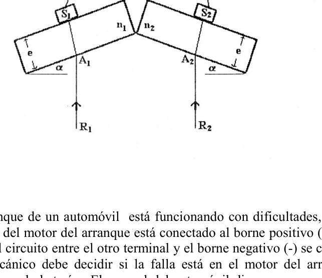
Topic: Geometric Optics Metodi: Snell’s Law, Ray Tracing Competenze: Physical Reasoning, Mathematical Modeling Objects: — Fonte: Testo (PDF) — p.2
Prova Teoretica Blu/Verde - Problema 1
- Instanza nazionale. Prova Teoretica. Blu e verde.
Problema 1:
Due raggi paralleli di luce raggiungono contemporaneamente i punti e di due schede di facce parallele, disposti come indicato nella figura. (Figura) Quando emerge, i raggi sono rilevati da sensori e . Quando emerge il primo, viene messo in funzione un orologio che si ferma quando emerge il secondo. Entrambe le placche sono dello stesso spessore e i loro indici di refraczione e . a) Calcolare l’angolo di rifrazione di ogni raggio. b) Quale dei due raggi emerge prima? giustifica la tua risposta. c) Calcolare il tempo trascorso dal momento in cui il orologio è stato avviato fino al momento in cui è stato fermato. d) Proporre una modifica del dispositivo della figura (variegando le posizioni delle lastre, eliminando parti, ecc.) in modo che, con l’intervallo di tempo misurato dal orologio e lo spessore di una delle lastre, possa determinare il suo indice di refraczione.
Data: ; ; cm; .
Topic: Geometric Optics Metodi: Snell’s Law, Ray Tracing Competenze: Physical Reasoning, Mathematical Modeling Objects: — Fonte: Testo (PDF) — p.2
Prueba Teorica Azul/Verde - Problema 1
The National Court. Theoretical proof. Blue and green.
Problem number one:
Two parallel rays of light reach simultaneously the and points of two parallel face plates, arranged as shown in the figure. (Figure) When the rays emerge, they are detected by sensors and . When the first one emerges, a clock is set in motion that stops when the second one emerges. Both plates are of the same thickness and their respective refractive indices and . (a) Calculate the angle of refraction of each beam. (b) Which of the two rays emerges first? Justify your answer. (c) Calculate the time elapsed from the start of the clock to its stop. (d) Propose a modification of the device of the figure (variating the positions of the plates, removing parts, etc.) so that, with the time interval measured by the clock and the thickness of one of the plates, it can determine its refractive index.
Datos: ; ; cm; .
Topic: Geometric Optics Metodi: Snell’s Law, Ray Tracing Competenze: Physical Reasoning, Mathematical Modeling Objects: — Fonte: Testo (PDF) — p.2
Prueba Teorica Azul/Verde - Problema 2
Problema 2:
El sistema de arranque de un automovil esta funcionando con dificultades, y de manera lenta. Uno de los terminales del motor del arranque esta conectado al borne positivo (+) de la bateria por medio de un cable. El circuito entre el otro terminal y el borne negativo (-) se completa a traves de la carroceria. El mecanico debe decidir si la falla esta en el motor del arranque, el cable de alimentacion de este o en la bateria. El manual del automovil dice que para asegurar un perfecto funcionamiento del sistema de arranque, la bateria de 12 V no puede tener mas de de resistencia interna, el cable no mas de de resistencia, y el motor del arranque (cuando esta funcionando) no mas de . El mecanico enciende el motor del arranque y mide 11.4 V entre los bornes de la bateria, 3 V entre los extremos del cable y una corriente de 50A. Cual o cuales son las partes defectuosas?
Topic: Circuits Metodi: Kirchhoff’s Laws, Equivalent Circuit Reduction Competenze: Physical Reasoning Objects: Battery, Wire, Resistor Fonte: Testo (PDF) — p.2
Prova Teoretica Blu/Verde - Problema 2
Il problema 2:
Il sistema di avvio di un’auto sta funzionando con difficoltà, e lentamente. Uno dei terminali del motore di partenza è collegato al borno positivo (+) della batteria tramite un cavo. Il circuito tra l’altro terminale e il borno negativo (-) è completato attraverso la carrozzeria. Il meccanico deve decidere se il guasto è nel motore di avvio, nel cavo di alimentazione di questo motore o nella batteria. Il manuale dell’automobile dice che per garantire un funzionamento perfetto del sistema di partenza, la batteria da 12 V non può avere più di di resistenza interna, il cavo non più di di resistenza e il motore di partenza (quando è in funzione) non più di . Il meccanico accende il motore di avvio e misura 11,4 V tra i bordi della batteria, 3 V tra le estremità del cavo e una corrente di 50A. Quali o quali sono le parti difettose?
Topic: Circuits Metodi: Kirchhoff’s Laws, Equivalent Circuit Reduction Competenze: Physical Reasoning Objects: Battery, Wire, Resistor Fonte: Testo (PDF) — p.2
The following is the list of the main types of data that are used in the report:
Problem two:
The start-up system of a car is working with difficulty, and slowly. One of the terminals of the starter motor is connected to the positive (+) battery terminal via a cable. The circuit between the other terminal and the negative terminal (-) is completed through the body. The mechanic must decide whether the failure is in the starter motor, the starter power cable or the battery. The vehicle manual states that to ensure the perfect operation of the start system, the 12 V battery may not have more than of internal resistance, the cable not more than of resistance, and the start motor (when running) not more than . The mechanic turns on the starter motor and measures 11.4 V between the battery terminals, 3 V between the cable ends and a 50A current. What or what are the defective parts?
Topic: Circuits Metodi: Kirchhoff’s Laws, Equivalent Circuit Reduction Competenze: Physical Reasoning Objects: Battery, Wire, Resistor Fonte: Testo (PDF) — p.2
Prueba Teorica Azul/Verde - Problema 3
Problema 3:
Se ha improvisado un sistema que permite controlar el tiempo que demora un dispositivo desde que se lo activa hasta que permite el paso de la corriente electrica. El mismo fue construido usando un inflador manual (ver la figura), cuya valvula esta cerrada. (figura) El embolo, que puede deslizarse sin rozamiento, tiene una masa de 100 grs. y su volumen es despreciable. En el instante inicial el embolo se halla libre a 5 cm del extremo superior del inflador, la presion ambiente es de 1 atmosfera y la temperatura ambiente de C. Un gotero agrega una gota de mercurio cada dos segundos en el espacio entre el embolo y las paredes del inflador. A medida que se acumula el mercurio, el embolo baja. El sistema se ha preparado de tal manera que cuando el menisco de mercurio llega a 1 cm del borde superior de las paredes del inflador, se cierra un contacto electrico que permite el paso de la corriente. Suponiendo que el aire dentro del inflador se comporte como gas ideal y la temperatura se mantiene constante, calcule el tamano maximo de la gota para que el contacto no se cierre antes de que transcurran 20000seg (5h 33m 20seg) desde que se deposito la primera gota. Datos numericos: aceleracion de la gravedad ; 1 atmosfera = 760 mm de mercurio; densidad del mercurio: . (Datos figura: diametro = 5 cm; 40 cm; 6 cm; 1 cm; contactos electricos; gotero; valvula.)
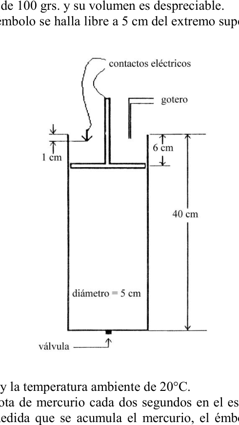
Topic: Thermodynamics, Fluid Mechanics Metodi: Ideal Gas Law, Hydrostatic Equilibrium Competenze: Physical Reasoning Objects: Piston, Gas, Droplet Fonte: Testo (PDF) — p.2
Prova Teoretica Blu/Verde - Problema 3
Problema 3:
È stato improvvisato un sistema che consente di controllare il tempo che un dispositivo dura dal momento in cui viene attivato fino a quando permette il passaggio del corrente elettrica. Lo stesso fu costruito utilizzando un gonfiatore manuale (vedi figura), la cui valvola è chiusa. (Figura) L’embolo, che può scivolare senza rottura, ha una massa di 100 grass. e il suo volume è disprezzabile. All’istante iniziale l’embolo è libero a 5 cm dall’estremità superiore dell’inflatore, la pressione ambientale è di 1 atmosfera e la temperatura ambientale di C. Un goccia aggiunge una goccia di mercurio ogni due secondi nello spazio tra l’embolo e le pareti dell’inflatore. Mentre il mercurio si accumula, l’embolo scende. Il sistema è stato preparato in modo tale che quando il menisco di mercurio raggiunge 1 cm dal bordo superiore delle pareti dell’inflatore, viene chiuso un contatto elettrico che permette il passaggio del corrente. Supponendo che l’aria all’interno dell’inflatore si comporti come gas ideale e la temperatura sia mantenuta costante, calcoli il livello massimo della goccia in modo che il contatto non si chiuda prima che si trascorrano 20000seg (5h 33m 20seg) dal momento in cui la prima goccia viene depositata. Dati numerici: accelerazione gravitazionale ; 1 atmosfera = 760 mm di mercurio; densità del mercurio: . (Dati figurativi: diametro = 5 cm; 40 cm; 6 cm; 1 cm; contatti elettrici; goccia; valvola.)
Topic: Thermodynamics, Fluid Mechanics Metodi: Ideal Gas Law, Hydrostatic Equilibrium Competenze: Physical Reasoning Objects: Piston, Gas, Droplet Fonte: Testo (PDF) — p.2
Prueba Teorica Azul/Verde - Problema 3
Problem three:
A system has been impromptuly developed to control the time it takes for a device to be activated until it allows electric current to flow. It was built using a manual inflator (see figure), whose valve is closed. (Figure) The embossed, which can slide without a scratch, has a mass of 100 grams. And its volume is despicable. At the initial moment the embolus is free at 5 cm from the upper end of the inflator, the ambient pressure is 1 atmosphere and the ambient temperature C. A drip adds a drop of mercury every two seconds into the space between the embolus and the walls of the inflator. As the mercury builds up, the embolus drops. The system has been prepared in such a way that when the mercury meniscus reaches 1 cm from the upper edge of the inflator walls, an electrical contact is closed to allow the current to pass. Assuming that the air inside the inflator behaves as an ideal gas and the temperature remains constant, calculate the maximum droplet size so that contact does not close before 20000seconds (5h 33m 20seconds) have elapsed since the first droplet is deposited. Datos numericos: aceleracion de la gravedad ; 1 atmosfera = 760 mm de mercurio; densidad del mercurio: . (Figure data: diameter = 5 cm; 40 cm; 6 cm; 1 cm; electrical contacts; leakage; valve.)
Topic: Thermodynamics, Fluid Mechanics Metodi: Ideal Gas Law, Hydrostatic Equilibrium Competenze: Physical Reasoning Objects: Piston, Gas, Droplet Fonte: Testo (PDF) — p.2
Prueba Experimental Azul/Verde - Mezcla alcohol-agua
Prueba Experimental. Azul y verde.
Objetivo: Determinar la proporcion relativa en volumen con la que se debe realizar una mezcla de alcohol y agua para obtener un liquido cuya densidad relativa al agua sea el promedio entre las densidades del agua (que es entonces igual a uno) y la del alcohol puro.
Elementos:
- Agua
- Alcohol puro.
- 4 vasos plasticos.
- Manguera de latex.
- Papel milimetrado.
- Una tabla con dos pedazos de manguera plastica adozados.
- Una jeringa graduada.
- Una union “T”.
- Una prensa.
Requerimientos: Solo podra utilizar los elementos ofrecidos, papel, lapiz y calculadora. Al finalizar la experiencia, debera entregar un informe donde conste:
- Planteo analitico del problema.
- Metodo experimental utilizado.
- Valores obtenidos en las mediciones realizadas.
- Fuentes de error y analisis de como influyen en el resultado final.
- Resultado experimental de lo solicitado.
- Comentarios que desee hacer.
Topic: Fluid Mechanics Metodi: Experimental Data Analysis, Error Propagation Competenze: Physical Reasoning, Experimental Data Analysis Objects: Container, Manometer Fonte: Testo (PDF) — p.2
Prova sperimentale blu/verde - Miscela alcool-acqua
Prova sperimentale. Blu e verde.
Obiettivo: Determinare il rapporto relativo in volume con cui si deve miscelare alcol e acqua per ottenere un liquido la cui densità relativa all’acqua è la media tra le densità dell’acqua (che allora è uguale a uno) e quella dell’alcol puro.
Elementi:
- L’acqua
- Alcol puro.
- Quattro bicchieri di plastica.
- Mangania di lattice.
- Papero millimetrico.
- Una lavagna con due pezzi di tubo di plastica dolci.
- Una siringa graduata.
- Un’unione “T”.
- Una stampa.
Requisiti: Potrà utilizzare solo gli elementi offerti, carta, penna e calcolatore. Al termine dell’esperienza, deve presentare un rapporto che contiene:
- Una valutazione analitica del problema.
- Metodo sperimentale usato.
- Valori ottenuti dalle misurazioni effettuate.
- Fonti di errore e analisi di come influenzano il risultato finale.
- Risultato sperimentale della richiesta.
- Commenti che vorrebbe fare.
Topic: Fluid Mechanics Metodi: Experimental Data Analysis, Error Propagation Competenze: Physical Reasoning, Experimental Data Analysis Objects: Container, Manometer Fonte: Testo (PDF) — p.2
The test shall be carried out in accordance with the following conditions:
It’s an experimental test. Blue and green.
The objective: Determine the relative volume ratio with which a mixture of alcohol and water must be made to obtain a liquid whose water-relative density is the average between the densities of water (which is then equal to one) and pure alcohol.
The following elements:
- Water
- It’s pure alcohol.
- Four plastic glasses.
- It’s a latex dish.
- It’s a millimeter piece of paper.
- A board with two pieces of plastic hose sweetened.
- A graduated syringe.
- A union “T”.
- A press.
Requirements: You can only use the items offered, paper, pen and calculator. At the end of the experience, you must submit a report stating:
- Analytical approach to the problem.
- Experimental method used.
- Values obtained from the measurements made.
- Error sources and analysis of how they influence the final result.
- Experimental result of the requested.
- Any comments you want to make.
Topic: Fluid Mechanics Metodi: Experimental Data Analysis, Error Propagation Competenze: Physical Reasoning, Experimental Data Analysis Objects: Container, Manometer Fonte: Testo (PDF) — p.2
1. San Juan (experimental) - Volumen de cuerpo irregular
- San Juan (experimental).
Determinar el volumen de un cuerpo irregular. Se dispone de: un recipiente graduado, una balanza, un hilo y un soporte.
Topic: Fluid Mechanics Metodi: Experimental Data Analysis Competenze: Physical Reasoning, Experimental Data Analysis Objects: Container Fonte: Testo (PDF) — p.2
1. San Giovanni (esperimento) - Volume di corpo irregolare
- San Giovanni (esperimento).
Determinare il volume di un corpo irregolare. Dispone di: un contenitore graduato, una bilancia, un filo e un supporto.
Topic: Fluid Mechanics Metodi: Experimental Data Analysis Competenze: Physical Reasoning, Experimental Data Analysis Objects: Container Fonte: Testo (PDF) — p.2
**1. The following is the list of the samples taken:
- San Juan (experimental)
Determine the volume of an irregular body. It has a graduated container, a scale, a thread and a support.
Topic: Fluid Mechanics Metodi: Experimental Data Analysis Competenze: Physical Reasoning, Experimental Data Analysis Objects: Container Fonte: Testo (PDF) — p.2
2. Santa Rosa, La Pampa - Fuerzas sobre la pared
- Santa Rosa, La Pampa.
Calcular la intensidad y direccion de las fuerzas actuantes sobre la pared en los puntos A y B. (figura) (Datos figura: 60 cm vertical; 80 cm horizontal; 20 cm; peso 5000 lt.)
Topic: Rigid Body Statics Metodi: Free-Body Diagram, Torque & Angular Momentum Analysis, Vector Decomposition Competenze: Physical Reasoning Objects: Beam, String Fonte: Testo (PDF) — p.2
2. Santa Rosa, La Pampa - Forze sul muro
- Santa Rosa, La Pampa.
Calcolare l’intensità e la direzione delle forze che agiscono sul muro nei punti A e B. (Figura) (Figura dati: 60 cm verticale; 80 cm orizzontale; 20 cm; peso 5000 lit..)
Topic: Rigid Body Statics Metodi: Free-Body Diagram, Torque & Angular Momentum Analysis, Vector Decomposition Competenze: Physical Reasoning Objects: Beam, String Fonte: Testo (PDF) — p.2
**2. Santa Rosa, La Pampa - Forces on the wall
- Santa Rosa, the Pampa.
Calculate the intensity and direction of the forces acting on the wall at points A and B. (Figure) (Figure data: 60 cm vertical; 80 cm horizontal; 20 cm weight 5000 l)
Topic: Rigid Body Statics Metodi: Free-Body Diagram, Torque & Angular Momentum Analysis, Vector Decomposition Competenze: Physical Reasoning Objects: Beam, String Fonte: Testo (PDF) — p.2
3. Rosario, Santa Fe (experimental) - Peso especifico detergente
- Rosario, Santa Fe (experimental).
Se desea determinar el peso especifico de un detergente. Solo se dispone de los siguientes elementos para hacerlo:
- un resorte
- una probeta
- pesas
- papel milimetrado
- soporte vertical
- hilo a) Proponga un metodo para hacerlo e indique los principios y/o leyes fisicas en que se basa el mismo. (Si piensa en mas de uno, describalos en forma escrita y, luego, indique cual de ellos utilizara en forma practica). b) Desarrolle el procedimiento indicado y determine el peso especifico del detergente, indicando el error o incerteza de la medicion realizada. c) Elabore un informe del trabajo realizado, incorporando las posibles representaciones graficas que haya necesitado confeccionar. Fundamente cada paso realizado.
Topic: Fluid Mechanics, Elasticity & Materials Metodi: Experimental Data Analysis, Hooke’s Law, Error Propagation Competenze: Physical Reasoning, Experimental Data Analysis Objects: Spring, Container Fonte: Testo (PDF) — p.2
3. Rosario, Santa Fe (perimetrale) - Peso specifico detergente
- Rosario, Santa Fe (esperimento).
Si desidera determinare il peso specifico di un detergente. Per farlo sono disponibili solo i seguenti elementi:
- una sorgente
- un’espressione
- pesanti
- carta millimetrica
- supporto verticale
- filo a) Propone un metodo per farlo e indichi i principi e/o leggi fisiche su cui si basa. (Se ne pensate più, descriveretele in scritto e poi indicate quale di esse usate in pratica). b) Sviluppare la procedura indicata e determinare il peso specifico del detergente, indicando l’errore o l’incertezza della misurazione effettuata. c) Preparare un rapporto del lavoro svolto, inserendo le possibili rappresentazioni grafiche che ha bisogno di realizzare. Fondamentalmente ogni passo fatto.
Topic: Fluid Mechanics, Elasticity & Materials Metodi: Experimental Data Analysis, Hooke’s Law, Error Propagation Competenze: Physical Reasoning, Experimental Data Analysis Objects: Spring, Container Fonte: Testo (PDF) — p.2
3. Rosario, Santa Fe (experimental) - Weight specific to detergent
- Rosario, Santa Fe (experimental)
The specific weight of a detergent is to be determined. The following elements are only available for this purpose:
- a spring
- a sample
- weights
- Millimeter paper
- vertical support
- thread (a) Propose a method for doing so and indicate the principles and/or physical laws on which it is based. (If you think of more than one, describe them in writing and then indicate which one you would use in practice.) (b) Develop the procedure indicated and determine the specific weight of the detergent, indicating the error or uncertainty of the measurement performed. (c) Draw up a report of the work carried out, including any graphic representations that you may have needed to make. Basically every step you take.
Topic: Fluid Mechanics, Elasticity & Materials Metodi: Experimental Data Analysis, Hooke’s Law, Error Propagation Competenze: Physical Reasoning, Experimental Data Analysis Objects: Spring, Container Fonte: Testo (PDF) — p.2
4. General Galarza, Entre Rios - Esfera y cubo
- General Galarza, Entre Rios.
i) Se tiene una esfera de 5 cm de radio que esta sostenida por un cubo de 20 cm de arista. Se pide calcular: a) El volumen de la esfera b) La superficie lateral y total del cubo c) El volumen del cubo ii) Siendo la cubo y esfera y la aceleracion de la gravedad normal. Calcule: d) Las masas del cubo y de la esfera e) Los pesos especificos de ambos cuerpos f) Los pesos de cada uno de esos cuerpos iii) Si se llena las 3/4 partes del volumen de la esfera con agua destilada. Calcule: g) La masa de la esfera y del liquido h) El volumen del liquido i) El volumen libre restante iv) Si ambos cuerpos durante tres minutos poseen un movimiento uniformemente acelerado, siendo y la , calcule: j) La Vf y el espacio recorrido k) La F en los tres sistemas l) El L en los tres sistemas m) La Ec; Ep y Em desarrollada y contenida por ambos cuerpos. n) Los CV; HP; Kwh y watt empleados. (figura)
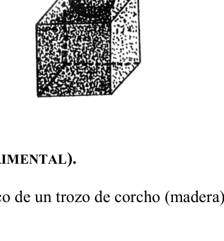
Topic: Newtonian Mechanics, Mathematics Metodi: Kinematic Equations, Energy Conservation Method, Dimensional Analysis Competenze: Physical Reasoning, Mathematical Modeling Objects: Sphere, Cylinder Fonte: Testo (PDF) — p.2
**4. Generale Galarza, Tra i Fiumi - Sfera e Cubo
- Generale Galarza, Tra i Rios.
(i) Si dispone di una sfera di 5 cm di radio sostenuta da un cubo di 20 cm di bordo. Si chiede di calcolare: a) Il volume della sfera b) L’area laterale e totale del cubo c) Il volume del cubo (ii) Essendo il cubo e sfera e l’accelerazione della gravità normale. Calcola: d) Masse del cubo e della sfera e) Peso specifico di entrambi i corpi f) I pesi di ciascun di questi corpi (iii) Se 3/4 del volume della sfera è riempita con acqua distillata. Calcola: g) La massa della sfera e del liquido h) Il volume del liquido (i) Restante volume libero iv) Se per tre minuti entrambi i corpi hanno un movimento uniformemente accelerato, essendo e , calcola: j) Vf e spazio percorso k) La F nei tre sistemi L) L nei tre sistemi m) L’Ec, Ep e Em sviluppato e contenuto da entrambi i corpi. n) CV; HP; Kwh e watt impiegati. (Figura)
Topic: Newtonian Mechanics, Mathematics Metodi: Kinematic Equations, Energy Conservation Method, Dimensional Analysis Competenze: Physical Reasoning, Mathematical Modeling Objects: Sphere, Cylinder Fonte: Testo (PDF) — p.2
**4. General Galarza, Between Rios - Sphere and Cube
- General Galarza, between rivers.
(i) A sphere of 5 cm radius is held by a 20 cm edge cube. It is requested to calculate: (a) The volume of the sphere (b) The lateral and total surface of the cube (c) The volume of the cube (ii) Being the cube and sphere and the acceleration of normal gravity. Calculate: (d) The masses of the cube and the sphere (e) Specific weights of both bodies (f) The weights of each of these bodies (iii) If 3/4 of the volume of the sphere is filled with distilled water. Calculate: (g) The mass of the sphere and liquid (h) The volume of the liquid (i) The remaining free volume (iv) If both bodies have uniformly accelerated motion for three minutes, being and , calculate: (j) Vf and space travelled (k) F in all three systems (l) The L in all three systems (m) The Ec; Ep and Em developed and contained by both bodies. (n) CVs; HP; Kwh and watt employed. (Figure)
Topic: Newtonian Mechanics, Mathematics Metodi: Kinematic Equations, Energy Conservation Method, Dimensional Analysis Competenze: Physical Reasoning, Mathematical Modeling Objects: Sphere, Cylinder Fonte: Testo (PDF) — p.2
5. Comodoro Rivadavia (experimental) - Peso especifico del corcho
- Comodoro Rivadavia (experimental).
Se pide calcular el peso especifico de un trozo de corcho (madera). Se provee de: 1 plomada 1 balanza 1 recipiente con agua
Topic: Fluid Mechanics Metodi: Experimental Data Analysis, Hydrostatic Equilibrium Competenze: Physical Reasoning, Experimental Data Analysis Objects: Container Fonte: Testo (PDF) — p.2
5. Comodoro Rivadavia (esperimento) - Peso specifico della cricca
- Comodoro Rivadavia (esperimento).
Si chiede di calcolare il peso specifico di un pezzo di cork (legno). Fornisce: 1 piuma 1 bilancia 1 contenitore di acqua
Topic: Fluid Mechanics Metodi: Experimental Data Analysis, Hydrostatic Equilibrium Competenze: Physical Reasoning, Experimental Data Analysis Objects: Container Fonte: Testo (PDF) — p.2
5. Comodoro Rivadavia (experimental) - Specific weight of cork
- Commodore Rivadavia (experimental) is the first to be sent to the
The specific weight of a piece of cork (wood) is required to be calculated. It shall be provided with: 1 lead 1 balance 1 container with water
Topic: Fluid Mechanics Metodi: Experimental Data Analysis, Hydrostatic Equilibrium Competenze: Physical Reasoning, Experimental Data Analysis Objects: Container Fonte: Testo (PDF) — p.2
6. Neuquen (experimental) - Peso especifico del plomo
- Neuquen (experimental).
Se pide determinar el peso especifico del plomo. Utilizando los materiales disponibles: probeta graduada, trozo de plomo y agua. Describir de manera clara el procedimiento escogido (parte teorica y experimental) y evaluar el error del resultado.
Topic: Fluid Mechanics Metodi: Experimental Data Analysis, Hydrostatic Equilibrium Competenze: Physical Reasoning, Experimental Data Analysis Objects: Container Fonte: Testo (PDF) — p.2
6. Neuquen (esperimento) - Peso specifico del piombo
- Neuquen (esperimento).
Si chiede di determinare il peso specifico del piombo. Usando i materiali disponibili: proietta graduata, pezzo di piombo e acqua. Descrivere chiaramente la procedura scelta (parte teorica e parte sperimentale) e valutare l’errore del risultato.
Topic: Fluid Mechanics Metodi: Experimental Data Analysis, Hydrostatic Equilibrium Competenze: Physical Reasoning, Experimental Data Analysis Objects: Container Fonte: Testo (PDF) — p.2
6. Neuchon (experimental) - Specific weight of lead
- The Commission shall adopt implementing acts in accordance with Article 21 of this Regulation.
The specific weight of lead is to be determined. Using the materials available: graduated test, lead and water. Clearly describe the chosen procedure (theoretical and experimental part) and assess the error of the result.
Topic: Fluid Mechanics Metodi: Experimental Data Analysis, Hydrostatic Equilibrium Competenze: Physical Reasoning, Experimental Data Analysis Objects: Container Fonte: Testo (PDF) — p.2
7. Mar del Plata, Buenos Aires (experimental) - Peso del alambre
- Mar del Plata, Buenos Aires (experimental).
Datos:
- Un alambre de cobre cuya densidad es .
- Una hoja de papel cuadriculado cuyas divisiones son cada 0.5 cm.
- Un lapiz. Determinar el peso del alambre indicando tambien el error estimado.
Topic: Order-of-Magnitude Estimation Metodi: Experimental Data Analysis, Error Propagation Competenze: Physical Reasoning, Experimental Data Analysis Objects: Wire Fonte: Testo (PDF) — p.2
7. Mar del Plata, Buenos Aires (perimetrale) - Peso del filo
- Mar del Plata, Buenos Aires (esperimento).
Dati:
- Un filo di rame di densità .
- Una foglia di carta quadrata, le cui divisioni sono ogni centimetro.
- Un cremaglione. Determinare il peso del filo indicando anche l’errore stimato.
Topic: Order-of-Magnitude Estimation Metodi: Experimental Data Analysis, Error Propagation Competenze: Physical Reasoning, Experimental Data Analysis Objects: Wire Fonte: Testo (PDF) — p.2
**7. The Commission has also examined the possible effects of the measures on the environment.
- The first is the Mar del Plata, Buenos Aires (experimental).
The data:
- A copper wire with a density of .
- A square sheet of paper whose divisions are every 0.5 cm.
- A pencil. Determine the weight of the wire and the estimated error.
Topic: Order-of-Magnitude Estimation Metodi: Experimental Data Analysis, Error Propagation Competenze: Physical Reasoning, Experimental Data Analysis Objects: Wire Fonte: Testo (PDF) — p.2
8. Capital Federal (experimental) - Peso especifico tetracloruro de carbono
- Capital Federal (experimental).
Determinacion del peso especifico del tetracloruro de carbono. Materiales a utilizar:
- Resorte
- Prisma de aluminio
- Vaso de precipitado con agua (Pe conocido)
- Vaso de precipitado con tetracloruro de carbono
- Regla milimetrada
- Columna con base y doble nuez.
Topic: Fluid Mechanics, Elasticity & Materials Metodi: Experimental Data Analysis, Hooke’s Law, Hydrostatic Equilibrium Competenze: Physical Reasoning, Experimental Data Analysis Objects: Spring, Container Fonte: Testo (PDF) — p.2
8. Capitale federale (esperimento) - Peso specifico del tetracloruro di carbonio
- Capitale federale (esperimento).
Determinazione del peso specifico del tetracloruro di carbonio. Materiali da utilizzare:
- Resorte
- Fabbricazione di plastica
- Vaso di precipitazione con acqua (Pe conosciuto)
- Vaso di precipitazione con tetracloruro di carbonio
- Regola di millimetro
- Colonna con base e doppio noce.
Topic: Fluid Mechanics, Elasticity & Materials Metodi: Experimental Data Analysis, Hooke’s Law, Hydrostatic Equilibrium Competenze: Physical Reasoning, Experimental Data Analysis Objects: Spring, Container Fonte: Testo (PDF) — p.2
8. Federal capital (experimental) - Specific weight of carbon tetrachloride
- Federal capital (experimental).
Determination of the specific weight of carbon tetrachloride. Materials to be used:
- The spring
- Other, of a width of not more than 30 mm
- Water-sprayed glass (known as PE)
- Glass of precipitate with carbon tetrachloride
- Millimeter rule
- Column with base and double nut.
Topic: Fluid Mechanics, Elasticity & Materials Metodi: Experimental Data Analysis, Hooke’s Law, Hydrostatic Equilibrium Competenze: Physical Reasoning, Experimental Data Analysis Objects: Spring, Container Fonte: Testo (PDF) — p.2
9. Mar del Plata, Buenos Aires (experimental) - Centro de gravedad
- Mar del Plata, Buenos Aires (experimental).
Dada una figura plana irregular de carton, en la cual se ha marcado un sistema de referencia con escala de centimetros, y una plomada, determinar las coordenadas del centro de gravedad indicando el error estimado.
Topic: Rigid Body Statics Metodi: Experimental Data Analysis, Error Propagation Competenze: Physical Reasoning, Experimental Data Analysis Objects: — Fonte: Testo (PDF) — p.2
9. Mar del Plata, Buenos Aires (esperimento) - Centro di gravità
- Mar del Plata, Buenos Aires (esperimento).
Data una figura piana di cartone irregolare, in cui è stato marcato un sistema di riferimento a scala di centimetri e una piuma, determinare le coordinate del centro di gravità indicando l’errore stimato.
Topic: Rigid Body Statics Metodi: Experimental Data Analysis, Error Propagation Competenze: Physical Reasoning, Experimental Data Analysis Objects: — Fonte: Testo (PDF) — p.2
**9. The following information is provided by the Commission in the Official Journal of the European Union.
- The first is the Mar del Plata, Buenos Aires (experimental).
Given an irregular flat cardboard figure, in which a reference system with centimetre scale and a plume have been marked, determine the centre of gravity coordinates indicating the estimated error.
Topic: Rigid Body Statics Metodi: Experimental Data Analysis, Error Propagation Competenze: Physical Reasoning, Experimental Data Analysis Objects: — Fonte: Testo (PDF) — p.2
10. Capital Federal - Sistema de cuerpos con cuerdas
- Capital Federal.
Para el sistema de cuerpos de la figura, calcular su aceleracion y la tension en cada cuerda, suponiendo despreciables los rozamientos. Repetir el problema si entre cada uno de los cuerpos y el piso existe un coeficiente de rozamiento . kg; kg; kg. (figura) (Datos figura: m2 arriba; m1 a la izquierda con ; m3 a la derecha con ; angulo superior .)
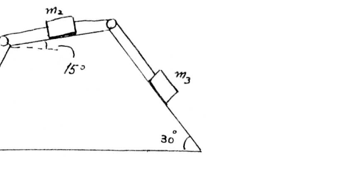
Topic: Newtonian Mechanics Metodi: Free-Body Diagram, Vector Decomposition Competenze: Physical Reasoning Objects: Block, String, Inclined Plane Fonte: Testo (PDF) — p.2
10. Capitale federale - Sistema di corpi a corda
- Capitale federale.
Per il sistema dei corpi della figura, calcolare la sua accelerazione e la tensione su ogni corda, assumendo sconsiderati gli arruggi. Ripetere il problema se tra ogni corpo e il pavimento c’è un coefficiente di rottura . kg; kg; kg. (Figura) (Dati figurati: m2 sopra; m1 a sinistra con ; m3 a destra con ; angolo superiore .)
Topic: Newtonian Mechanics Metodi: Free-Body Diagram, Vector Decomposition Competenze: Physical Reasoning Objects: Block, String, Inclined Plane Fonte: Testo (PDF) — p.2
10. Federal Capital - System of bodies with ropes
- Federal capital.
For the body system in the figure, calculate its acceleration and tension on each string, assuming the friction is negligible. Repeat the problem if there is a friction coefficient between each body and the floor. kg; kg; kg. (Figure) (Data figure: m2 above; m1 to the left with ; m3 to the right with ; upper angle .)
Topic: Newtonian Mechanics Metodi: Free-Body Diagram, Vector Decomposition Competenze: Physical Reasoning Objects: Block, String, Inclined Plane Fonte: Testo (PDF) — p.2
11. Goya, Corrientes - Estudio de cintas del timer
- Goya, Corrientes.
Objeto del practico: Estudiar los movimientos a partir de los registros en dos trozos de cinta del timer. Representarlos graficamente. Relacionarlos con las formulas correspondientes. Desarrollo: El timer es una aparato que consta de un vibrador que imprime puntos a intervalos de tiempo iguales (a los efectos practicos, supondremos los intervalos de 1 segundo) sobre una cinta que se fija en un carrito que se mueve. Por lo tanto la distancia entre un punto y otro indica el espacio recorrido en esa unidad de tiempo. Asi, por ejemplo, las marcas equidistantes en la cinta indican que en cada unidad de tiempo el carrito recorrio espacios iguales.
Primer caso: a) Teniendo en cuenta las marcas registradas, completa el siguiente cuadro: (figura) (Columnas: n; e [cm]; t [s]; e/t [cm/s]. : numero de mediciones; e: espacio; t: tiempo.) El movimiento comienza en “a” y desde ese punto se consideran los espacios recorridos. b) Representar graficamente, utilizando las escalas correspondientes en un sistema cartesiano ortogonal . Representar sobre el eje de las abscisas el tiempo y sobre el de las ordenadas, el espacio. c) Que magnitud representa la curva obtenida? Que forma tiene? Que significa? Cual es la formula que resulta de ese movimiento? Que nombre recibe este movimiento?
Segundo caso: a) Teniendo en cuenta las marcas registradas, completa el siguiente cuadro: (figura) (Columnas: n; e [cm]; t [s]; []; e/t [cm/s]; [].) El movimiento comienza en “a” y desde ese punto se consideran los espacios recorridos. b) Representar graficamente en un sistema cartesiano ortogonal considerando el tiempo al cuadrado sobre el eje de las abscisas y espacio sobre el de ordenadas. c) Que forma tiene la curva obtenida? Que significa? Con que formula relacionas este grafico? Como resulta ser, de acuerdo a los calculos ? Con que formula relacionas este grafico? Como se denomina a este movimiento? d) Representar en un sistema cartesiano ortogonal sobre las abscisas el tiempo y sobre las ordenadas e/t. Que magnitud representa la curva asi obtenida? Como resulta ser y que significa? Con que formula relacionas este grafico? Como se denomina a este movimiento?
Topic: Newtonian Mechanics Metodi: Kinematic Equations, Graph Linearization, Experimental Data Analysis Competenze: Physical Reasoning, Experimental Data Analysis Objects: Cart Fonte: Testo (PDF) — p.2
11. Goya, Correnti - Studio di nastri del timer
- Goya, Corrientes.
Oggetto della pratica: Studiare i movimenti a partire dai registri su due pezzi di nastri del timer. Rappresentarli graficamente. Relazionarli con le formule corrispondenti. Sviluppo: Il timer è un dispositivo che consiste in un vibratore che stampa punti a intervalli di tempo uguali (per gli effetti pratici, supponiamo gli intervalli di 1 secondo) su una cinta che è fissata su un carrello in movimento. Quindi la distanza tra un punto e un altro indica lo spazio percorso in quell’unità di tempo. Per esempio, i segni equidistanti sul nastro indicano che in ogni unità di tempo il carrello percorre gli stessi spazi.
Primo caso: a) Tenendo conto dei marchi registrati, completa il seguente tabella: (figura) (Colonne: n; e [cm]; t [s]; e/t [cm/s]. : numero di misure; e: spazio; t: tempo.) Il movimento inizia con “a” e da quel punto si considerano gli spazi percorsi. b) Rappresentare graficamente, utilizzando le scale corrispondenti in un sistema cartesiano ortogonale . Rappresentare sullo asse delle abscisse il tempo e sullo degli ordinati lo spazio. c) Qual è la dimensione della curva ottenuta? Che forma ha? - Che significa? Qual è la formula che deriva da questo movimento? Come si chiama questo movimento?
Secondo caso: a) Tenendo conto dei marchi registrati, completa il seguente tabella: (figura) (Colonne: n; e [cm]; t [s]; []; e/t [cm/s]; [].) Il movimento inizia con “a” e da quel punto si considerano gli spazi percorsi. b) Rappresentare graficamente in un sistema cartesiano ortogonale considerando il tempo al quadrato sull’asse delle abscisse e lo spazio su quello delle ordinate. c) Qual è la forma della curva ottenuta? - Che significa? Con quale formula si relaziona questo grafico? Come si rivela, secondo i calcoli ? Con quale formula si relaziona questo grafico? Come si chiama questo movimento? d) rappresentare in un sistema cartesiano ortogonale l’abcisso del tempo e l’ordinato e/t. Qual è la grandezza della curva ottenuta? Come si fa e cosa significa? Con quale formula si relaziona questo grafico? Come si chiama questo movimento?
Topic: Newtonian Mechanics Metodi: Kinematic Equations, Graph Linearization, Experimental Data Analysis Competenze: Physical Reasoning, Experimental Data Analysis Objects: Cart Fonte: Testo (PDF) — p.2
11. Goya, currents - Tape study of the timer
- Goya, currents.
The subject of the practice: Study the movements from the records on two pieces of timer tape. To represent them graphically. Relate them to the corresponding formulas. The following is the list of the countries: A timer is a device consisting of a vibrator that prints points at equal time intervals (for practical purposes, we will assume the 1 second intervals) on a tape that is fixed on a moving cart. Thus the distance between a point and another indicates the space travelled in that unit of time. For example, the equidistant marks on the tape indicate that in each unit of time the cart traveled the same spaces.
First case: (a) In the light of the trade marks registered, complete the following table: (Figure) (Columns: n; e [cm]; t [s]; e/t [cm/s]. : number of measurements; e: space; t: time.) The motion begins with “a” and from that point the spaces are considered to be traversed. (b) To represent graphically, using the corresponding scales in an orthogonal Cartesian system . To represent time on the axis of the abscises and space on the axis of the ordinates. (c) What magnitude does the curve obtained represent? What’s the shape? What does that mean? What is the resulting formula for that motion? What is the name of this movement?
Second case: (a) In the light of the trade marks registered, complete the following table: (Figure) (Columnas: n; e [cm]; t [s]; []; e/t [cm/s]; [].) The motion begins with “a” and from that point the spaces are considered to be traversed. (b) Graphically represent in an orthogonal Cartesian system taking time squared over the axis of the abscises and space over the ordered. (c) What is the shape of the curve obtained? What does that mean? What formula do you relate this chart to? What is the result, according to the calculations ? What formula do you relate this chart to? What is the name of this movement? (d) To represent time on the abscises and on the ordered e/t in an orthogonal Cartesian system. What magnitude does the curve thus obtained represent? What does it mean? What formula do you relate this chart to? What is the name of this movement?
Topic: Newtonian Mechanics Metodi: Kinematic Equations, Graph Linearization, Experimental Data Analysis Competenze: Physical Reasoning, Experimental Data Analysis Objects: Cart Fonte: Testo (PDF) — p.2
12. Mendoza - Funcion horaria
- Mendoza.
La funcion horaria de un movimiento es la siguiente: , expresada las cantidades en sus unidades correspondientes, por ejemplo, x en m y t en seg. Determine: a) El tipo de movimiento b) La expresion de la velocidad escalar c) La abcisa que corresponde al instante en que la velocidad escalar es nula. d) Realice los diagramas (a-t) (aceleracion en funcion del tiempo), (v-t) (velocidad en funcion del tiempo), (x-t) (posicion en funcion del tiempo).
Topic: Newtonian Mechanics Metodi: Kinematic Equations Competenze: Physical Reasoning, Mathematical Modeling Objects: — Fonte: Testo (PDF) — p.2
12. Mendoza - Funzione oraria
- Mendoza.
La funzione oraria di un movimento è la seguente: , espressa nelle loro unità corrispondenti, ad esempio, x in m e t in seg. Determina: a) Tipo di movimento b) Espressione della velocità di scala c) L’abbisce che corrisponde all’istante in cui la velocità di scala è nulla. d) Realizzare i diagrammi (a-t) (accelerazione in funzione del tempo), (v-t) (velocità in funzione del tempo), (x-t) (posizione in funzione del tempo).
Topic: Newtonian Mechanics Metodi: Kinematic Equations Competenze: Physical Reasoning, Mathematical Modeling Objects: — Fonte: Testo (PDF) — p.2
**12. Mendoza - Hours of work
- Mendoza, please.
The time function of a movement is , expressed in its corresponding units, e.g. x in m and t in seg. Determine: (a) The type of movement (b) The expression of the escalatory velocity (c) The appendix corresponding to the moment when the climbing speed is zero. (d) Draw the diagrams (a-t) (acceleration in time function), (v-t) (speed in time function), (x-t) (position in time function).
Topic: Newtonian Mechanics Metodi: Kinematic Equations Competenze: Physical Reasoning, Mathematical Modeling Objects: — Fonte: Testo (PDF) — p.2
13. Navarro, Buenos Aires - Tres moviles M, M’, M”
- Navarro, Buenos Aires.
Dos moviles, M y M’, parten simultaneamente desde A hacia B, y en ese mismo instante parte otro M”, desde B hacia A. La distancia AB = 90 km y las velocidades de los moviles son de 6 km/h, 5 km/h y 9 km/h respectivamente. Determinar grafica y analiticamente los tiempos en que: a) M equidista de M’ y M”; b) M’ equidista de M y M”; c) M” equidista de M y M’; d) M se cruza con M”.
Topic: Newtonian Mechanics Metodi: Kinematic Equations Competenze: Physical Reasoning, Mathematical Modeling Objects: — Fonte: Testo (PDF) — p.2
13. Navarro, Buenos Aires - Tre movimenti M, M’, M’
- Navarro, Buenos Aires.
Due movimenti, M e M’, partono contemporaneamente da A a B, e nello stesso istante parte un altro M”, da B a A. La distanza AB = 90 km e le velocità dei movimenti sono rispettivamente di 6 km/h, 5 km/h e 9 km/h. Determinare graficamente e analiticamente i tempi in cui: a) M’ equidista di M’ e M’; b) M’ equidista di M’ e M’; c) M’ equidista di M’ e M’; d) M si incrocia con M”.
Topic: Newtonian Mechanics Metodi: Kinematic Equations Competenze: Physical Reasoning, Mathematical Modeling Objects: — Fonte: Testo (PDF) — p.2
**13. The Commission has not yet adopted a proposal for a regulation on the protection of the environment.
- I’m from Navarro, Buenos Aires.
Two movements, M and M’, start simultaneously from A to B, and at that same instant another M’ starts from B to A. The distance AB = 90 km and the speed of the wheels are 6 km/h, 5 km/h and 9 km/h respectively. Determine graphically and analytically the times when: (a) M’ equidistant of M’ and M”; (b) M’ equidistant of M’ and M”; (c) M’ equidistant of M’ and M’; (d) M is crossed with M”.
Topic: Newtonian Mechanics Metodi: Kinematic Equations Competenze: Physical Reasoning, Mathematical Modeling Objects: — Fonte: Testo (PDF) — p.2
14. Cordoba, Capital - Dos moviles MUA
- Cordoba, Capital.
Dos moviles se mueven con Movimiento Uniformemente Acelerado. Uno de ellos tiene una velocidad inicial de 3 m/seg. y aceleracion de . El otro parte del reposo y se mueve con aceleracion de . Calcular en forma analitica y grafica el instante en que los dos moviles tienen la misma velocidad y el instante en que ambos han recorrido el mismo espacio.
Topic: Newtonian Mechanics Metodi: Kinematic Equations Competenze: Physical Reasoning, Mathematical Modeling Objects: — Fonte: Testo (PDF) — p.2
14. Cordoba, capitale - Due movimenti MUA
- Cordoba, capitale.
Due motori si muovono con Movimento Uniformemente Accelerato. Uno di loro ha una velocità iniziale di 3 m/sec. e accelerazione . L’altra parte del riposo e si muove con un’accelerazione di . Calcolare in modo analitico e grafico l’istante in cui i due movimenti hanno la stessa velocità e l’istante in cui entrambi hanno percorso lo stesso spazio.
Topic: Newtonian Mechanics Metodi: Kinematic Equations Competenze: Physical Reasoning, Mathematical Modeling Objects: — Fonte: Testo (PDF) — p.2
14. Cordoba, capital - Two moves MUA
- Cordoba, the capital.
Two moves move with uniformly accelerated motion. One of them has an initial speed of 3 m/s. y aceleracion de . The resting part and moving at acceleration. Calculate analytically and graphically the instant when the two movements have the same speed and the instant when they have both travelled the same space.
Topic: Newtonian Mechanics Metodi: Kinematic Equations Competenze: Physical Reasoning, Mathematical Modeling Objects: — Fonte: Testo (PDF) — p.2
15. Formosa - Movil que resbala por un alambre
- Formosa.
La figura, muestra un movil que resbala por un alambre. (figura) a) de que magnitud debe ser la si la cuenta, partiendo del reposo en A, va a tener una rapidez de 200 cm/seg., en el punto B. b) cual sera la rapidez en el punto C. c) suponer ahora que la particula tiene una masa de 15 gramos y se detiene en el punto C. La longitud del alambre desde A hasta C es de 200 cm., y la rapidez en A es de 250 cm/seg. d) de que magnitud es la fuerza de rozamiento poromedio que se opone al movimiento de la cuerda? (Datos figura: A arriba; B abajo; C; y .)
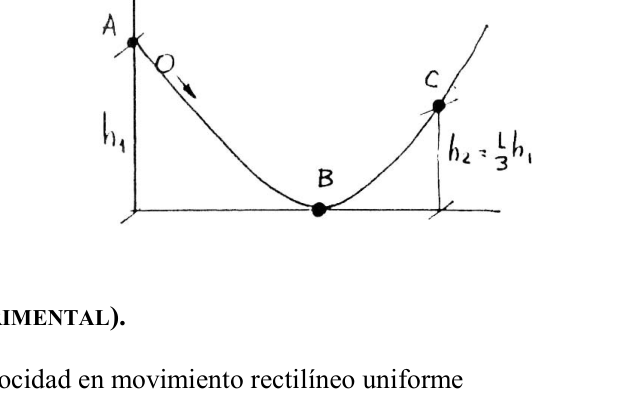
Topic: Conservation of Energy Metodi: Energy Conservation Method, Free-Body Diagram Competenze: Physical Reasoning Objects: Block, Wire Fonte: Testo (PDF) — p.2
15. Formosa - Movolo che scivola attraverso un filo
-
- È bellissimo.
La figura mostra un’auto che scivola attraverso un filo. (Figura) a) di quale magnitudo deve essere la se il conto, partendo dal riposo in A, avrà una velocità di 200 cm/sec., al punto B. b) quale sarà la velocità al punto C. c) supporre ora che la particella abbia una massa di 15 grammi e si ferma al punto C. La lunghezza del filo da A a C è di 200 cm, e la velocità in A è di 250 cm/sec. d) di che magnitudo è la forza di rottura media che si oppone al movimento della corda? (Dati in figura: A sopra; B sotto; C; e .)
Topic: Conservation of Energy Metodi: Energy Conservation Method, Free-Body Diagram Competenze: Physical Reasoning Objects: Block, Wire Fonte: Testo (PDF) — p.2
15. Formosa - Moving motion that slides through a wire
- That’s great.
The figure shows a mobile slipping through a wire. (Figure) (a) of what magnitude should be if the count, starting from rest in A, is going to have a speed of 200 cm/s, at point B. (b) what will be the speed in point C. (c) assume now that the particle has a mass of 15 grams and stops at point C. The length of the wire from A to C is 200 cm, and the speed in A is 250 cm/sec. (d) the average friction force opposing the rope movement is of what magnitude? (Dates shown: A above; B below; C; and .)
Topic: Conservation of Energy Metodi: Energy Conservation Method, Free-Body Diagram Competenze: Physical Reasoning Objects: Block, Wire Fonte: Testo (PDF) — p.2
16. Neuquen (experimental) - Velocidad MRU y coef. rozamiento
- Neuquen (experimental).
a) Medicion de velocidad en movimiento rectilineo uniforme b) Determinacion del coeficiente de rozamiento. Para el inciso a), se dispone de un riel de aire, cinta metrica, cronometro. Para el inciso b) de una pista con un taco de madera con distintos acabados superficiales (acrilico, madera y cuero), pesas, balanza, cinta metrica y cronometro. Elaborar un informe que contenga los siguientes items:
- Objetivo de la practica
- Descripcion del equipamiento
- Modelo matematico utilizado
- Obtencion y elaboracion de datos; tratamiento de error.
- Observaciones y conclusiones.
Topic: Newtonian Mechanics Metodi: Experimental Data Analysis, Free-Body Diagram, Error Propagation Competenze: Physical Reasoning, Experimental Data Analysis Objects: Block Fonte: Testo (PDF) — p.2
16. Neuquen (esperimento) - Velocità MRU e coef. Raggiustamento
- Neuquen (esperimento).
a) Misurazione della velocità in movimento rettilineo uniforme b) Determinazione del coefficiente di rottura. Per il punto (a), è disponibile un binario d’aria, una cinta metrica, un cronometro. Per il punto b) di una pista con un tappo di legno con diverse finiture superficiali (acrilico, legno e pelle), pesi, bilancia, nastro metrico e cronometro. Preparare un rapporto contenente le seguenti voci:
- Obiettivo della pratica
- Descrizione dell’equipaggiamento
- Modello matematico utilizzato
- raccolta e elaborazione dei dati; trattamento di errori.
- osservazioni e conclusioni.
Topic: Newtonian Mechanics Metodi: Experimental Data Analysis, Free-Body Diagram, Error Propagation Competenze: Physical Reasoning, Experimental Data Analysis Objects: Block Fonte: Testo (PDF) — p.2
**16. Neuken (experimental) - MRU and coef speed. The following table shows the results of the calculation:
- The Commission shall adopt implementing acts in accordance with Article 21 of this Regulation.
(a) Speed measurement in uniform straight line motion (b) Determination of the coefficient of friction. For the purpose of subparagraph (a), an air rail, a metric tape, a timekeeper are provided. For the purpose of subparagraph (b) of a track with a wooden bearing with different surface finishes (acrylic, wood and leather), weights, scales, metric tape and timekeeper. Draft a report containing the following items:
- Objective of the practice
- Description of the equipment
- Mathematical model used
- Data collection and processing; error handling.
- Observations and conclusions.
Topic: Newtonian Mechanics Metodi: Experimental Data Analysis, Free-Body Diagram, Error Propagation Competenze: Physical Reasoning, Experimental Data Analysis Objects: Block Fonte: Testo (PDF) — p.2
17. Rio Segundo, Cordoba - Esfera, choque y resorte
- Rio Segundo, Cordoba.
Una esfera de 5 N. cuelga de una cuerda de 0.80 m. de largo, formando un angulo de con respecto a la vertical. Al dejarse caer y alcanzar el punto mas bajo de su trayectoria choca elasticamente con un bloque (considerar velocidad de la esfera nula despues del choque) el cual se desplaza sobre un plano horizontal una distancia de 2 m. chocando con un resorte de constante N/m. y comprimiendolo 0.20 m. Calcular el trabajo y la fuerza de friccion que se genera entre el bloque y la superficie del plano horizontal. (figura)
Topic: Conservation of Energy, Conservation of Momentum Metodi: Energy Conservation Method, Conservation of Momentum, Hooke’s Law Competenze: Physical Reasoning Objects: Pendulum, Block, Spring Fonte: Testo (PDF) — p.2
17. Rio Segundo, Cordoba - Sfera, colpo e primavera
- Rio Segundo, Cordoba.
Una sfera di 5 N. appeso da una corda di 0,80 m. di lunghezza, formando un angolo di rispetto alla verticale. Al momento di cadere e raggiungere il punto più basso della sua traiettoria colpisce elasticamente con un blocco (considerare velocità della sfera zero dopo lo scontro) che si sposta su un piano orizzontale una distanza di 2 m. colpisce con una sorgente di costante N/m. e comprimendolo a 0,20 m. Calcolare il lavoro e la forza di attrito generata tra il blocco e la superficie del piano orizzontale. (Figura)
Topic: Conservation of Energy, Conservation of Momentum Metodi: Energy Conservation Method, Conservation of Momentum, Hooke’s Law Competenze: Physical Reasoning Objects: Pendulum, Block, Spring Fonte: Testo (PDF) — p.2
17. Rio Segundo, Cordoba - Sphere, shock and spring
- Rio Segundo, Cordoba. It’s the first one.
A sphere of 5 N. hanging from a 0.80 m rope. length, forming an angle of with respect to the vertical. When dropped and reaching the lowest point of its trajectory it collides elastically with a block (consider zero spherical velocity after the impact) which moves on a horizontal plane a distance of 2 m. chocando con un resorte de constante N/m. and compress it to 0.20 m. Calculate the work and friction force generated between the block and the surface of the horizontal plane. (Figure)
Topic: Conservation of Energy, Conservation of Momentum Metodi: Energy Conservation Method, Conservation of Momentum, Hooke’s Law Competenze: Physical Reasoning Objects: Pendulum, Block, Spring Fonte: Testo (PDF) — p.2
18. Salta - Objeto lanzado desde camion
- Salta.
Una persona A subida en la caja de un camion lanza hacia atras un objeto desde una altura de 3.5 m sobre el nivel del suelo con una velocidad de 20 m/s con respecto a si mismo y con un angulo de ; en este instante el camion tiene una velocidad de 10 Km/h respecto al piso. Una persona B se encuentra detenida a una distancia de 35 m atras del punto de lanzamiento. La persona B desea atrapar el objeto cuando este se encuentra a 1.5 m del suelo en su fase de caida. Para ello inicia un movimiento uniformemente acelerado hacia el camion en el instante en que observa que el objeto esta en el punto mas alto de su trayectoria. Determinar:
- A que distancia del punto de lanzamiento atrapa B al objeto.
- Cuanto tiempo le toma al objeto pasar de las manos de A a las manos de B?
- Que aceleracion uniforme debe adquirir B para atrapar el objeto?
- Cual es la velocidad del objeto en modulo y direccion en el instante en que lo atrapa B?
Topic: Newtonian Mechanics Metodi: Kinematic Equations, Vector Decomposition Competenze: Physical Reasoning, Mathematical Modeling Objects: Projectile Fonte: Testo (PDF) — p.2
18. Salto - oggetto lanciato da camion
- Salta. Salta.
Una persona A su una scatola di un camion lancia indietro un oggetto da una altezza di 3,5 m sul livello del suolo con una velocità di 20 m/s rispetto a se stesso e con un angolo di ; in questo istante il camion ha una velocità di 10 Km/h rispetto al pavimento. Una persona B è stata detenuta a 35 metri dal punto di lancio. La persona B vuole catturare l’oggetto quando si trova a 1,5 m dal suolo nella fase di caduta. Per questo inizia un movimento uniformemente accelerato verso il camion nel momento in cui osserva che l’oggetto è al punto più alto del suo percorso. Determinare:
- A che distanza dal punto di lancio B intrappola l’oggetto.
- Quanto tempo ci vuole per passare dall’oggetto A alle mani di B?
- Che velocità uniforme deve acquisire B per catturare l’oggetto?
- Qual è la velocità dell’oggetto in modulo e direzione all’istante in cui lo cattura B?
Topic: Newtonian Mechanics Metodi: Kinematic Equations, Vector Decomposition Competenze: Physical Reasoning, Mathematical Modeling Objects: Projectile Fonte: Testo (PDF) — p.2
18. Jump - object thrown from truck
- Jump in.
A person A climbing into the box of a truck throws back an object from a height of 3.5 m above ground level at a speed of 20 m/s with respect to himself and at an angle of ; at this moment the truck has a speed of 10 Km/h with respect to the floor. A person B is detained at a distance of 35 m from the launch point. Person B wishes to catch the object when it is 1.5 m from the ground in its falling phase. To do this, it starts a uniformly accelerated movement towards the truck the moment it notices that the object is at the highest point of its trajectory. Determine:
- At what distance from the launch point B traps the object.
- How long does it take the object to move from A to B?
- What uniform acceleration must B acquire to catch the object?
- What is the velocity of the object in modulo and direction the moment B catches it?
Topic: Newtonian Mechanics Metodi: Kinematic Equations, Vector Decomposition Competenze: Physical Reasoning, Mathematical Modeling Objects: Projectile Fonte: Testo (PDF) — p.2
19. Capital Federal (experimental) - Posicion, velocidad, aceleracion en MRUV
- Capital Federal (experimental).
Determinar la relacion existente entre la posicion, la velocidad y la aceleracion con el tiempo en un movimiento rectilineo uniformemente variado.
Topic: Newtonian Mechanics Metodi: Kinematic Equations, Experimental Data Analysis Competenze: Physical Reasoning, Experimental Data Analysis Objects: — Fonte: Testo (PDF) — p.2
19. capitale federale (esperimento) - posizione, velocità, accelerazione in MRUV
- Capitale federale (esperimento).
Determinare la relazione esistente tra posizione, velocità e accelerazione nel tempo in un movimento rettilineo uniformemente variabile.
Topic: Newtonian Mechanics Metodi: Kinematic Equations, Experimental Data Analysis Competenze: Physical Reasoning, Experimental Data Analysis Objects: — Fonte: Testo (PDF) — p.2
**19. The amount of the capital charge shall be calculated on the basis of the following data:
- Federal capital (experimental).
Determine the relationship between position, speed and acceleration over time in a uniformly varying straight linear motion.
Topic: Newtonian Mechanics Metodi: Kinematic Equations, Experimental Data Analysis Competenze: Physical Reasoning, Experimental Data Analysis Objects: — Fonte: Testo (PDF) — p.2
20. Santa Rosa, La Pampa - Cohete
- Santa Rosa, La Pampa.
Un cohete es disparado verticalmente hacia arriba con una aceleracion constante de 5 g durante 5”. Se termina el combustible y por lo tanto se detiene el motor. a) calcular la altura y velocidad a los 5” b) calcular la altura maxima alcanzada c) haga un grafico v-t (velocidad en funcion del tiempo) para todo el movimiento ascendente. d) cuanto tiempo tarda en alcanzar la altura maxima? (obtenga este dato del grafico- no haga mas cuentas) Puede utilizar la aproximacion para simplificar los calculos.
Topic: Newtonian Mechanics Metodi: Kinematic Equations Competenze: Physical Reasoning, Mathematical Modeling Objects: Projectile Fonte: Testo (PDF) — p.2
**20. Santa Rosa, La Pampa - Cochetta
- Santa Rosa, La Pampa.
Un razzo viene lanciato verticalmente verso l’alto con un’accelerazione costante di 5 g per 5”. Il carburante finisce e quindi il motore si ferma. a) Calcolare l’altezza e la velocità a 5” b) calcolare l’altezza massima raggiunta c) realizzare un grafico v-t (velocità in funzione del tempo) per tutto il movimento ascendente. d) quanto tempo ci vuole per raggiungere la massima altezza? (trova questo dato dal grafico - non fare più conti) L’approccio può essere utilizzato per semplificare i calcoli.
Topic: Newtonian Mechanics Metodi: Kinematic Equations Competenze: Physical Reasoning, Mathematical Modeling Objects: Projectile Fonte: Testo (PDF) — p.2
**20. The Commission has decided to extend the period of validity of the agreement.
- Santa Rosa, the Pampa.
A rocket is fired vertically upwards with a constant acceleration of 5 g for 5”. The fuel runs out and the engine stops. (a) calculate height and speed at 5’ (b) calculate the maximum height reached (c) draw a graph v-t (speed in time function) for all upward movement. (d) how long does it take to reach the maximum height? (get this data from the chart- do not count any more) You can use the approach to simplify the calculations.
Topic: Newtonian Mechanics Metodi: Kinematic Equations Competenze: Physical Reasoning, Mathematical Modeling Objects: Projectile Fonte: Testo (PDF) — p.2
21. Ibarreta, Formosa - Colectivo Formosa-Pirane
- Ibarreta, Formosa.
Un colectivo sale de Formosa a las 0:30 hs. hacia Pirane (100 km) a 60 Km/h. Alli para durante 15 minutos y parte del reposo con una aceleracion de hasta Fontana (81 km) donde para 5 minutos y continua el viaje hasta Ibarreta (202 km de Formosa) a 70 km/h. a) A que hora llega a Ibarreta? b) Que tiempo dura el viaje?
Topic: Newtonian Mechanics Metodi: Kinematic Equations Competenze: Physical Reasoning, Mathematical Modeling Objects: — Fonte: Testo (PDF) — p.2
21. Ibarreta, Formosa - Colletivo Formosa-Pirane
- Ibarreta, Formosa.
Un gruppo parte da Formosa alle 0:30. verso Pirane (100 km) a 60 Km/h. Alli si ferma per 15 minuti e parte dal riposo con un’accelerazione di fino a Fontana (81 km) dove per 5 minuti e continua il viaggio fino a Ibarreta (202 km da Formosa) a 70 km/h. a) A che ora arrivi a Ibarreta? b) Quanto dura il viaggio?
Topic: Newtonian Mechanics Metodi: Kinematic Equations Competenze: Physical Reasoning, Mathematical Modeling Objects: — Fonte: Testo (PDF) — p.2
**21. The Commission has decided to extend the period of validity of the agreement.
- Ibarreta, the formosa.
A collective leaves Formosa at 0:30. to Pirane (100 km) at 60 Km/h. Alli stops for 15 minutes and rests with an acceleration of to Fontana (81 km) where for 5 minutes and continues the journey to Ibarreta (202 km from Formosa) at 70 km/h. (a) What time does he arrive in Ibarreta? (b) How long does the trip take?
Topic: Newtonian Mechanics Metodi: Kinematic Equations Competenze: Physical Reasoning, Mathematical Modeling Objects: — Fonte: Testo (PDF) — p.2
22. General Galarza, Entre Rios - Grafico espacio-tiempo
- General Galarza, Entre Rios.
Dado el siguiente grafico, calcular: (figura, grafico e-t con puntos A,B,C,D,E,F,G,H,I,J) a) En que intervalos de tiempo el movimiento es uniforme? Y por que? b) Cuanto vale la velocidad en dichos intervalos de tiempo? c) Calcule el valor de la aceleracion. Justifique su respuesta. d) Indique en el grafico dado el espacio recorrido por el movil y calcule su valor. e) Indique en que momento el movil llega otra vez, al punto origen de su movimiento por que? f) Donde existe aceleracion negativa? Justifiquelo. g) Calcular la aceleracion en intervalos de tiempo con movimiento uniformemente variado. h) Indique en el grafico donde se produce dicho movimiento. Y por que? i) En que punto del grafico toda velocidad se anula? Justifique. j) Donde alcanza la aceleracion y la velocidad valores maximos y minimos?, indicar y justificar. k) Hallar el espacio recorrido por el movil durante los 8 primeros segundos. l) Que sucedio en los puntos: A-B-C-D-E-F-G-H-I-J? Justifique su respuesta. Escala: 1 cm = 5 segundos; 1 cm = 20 m/seg
Topic: Newtonian Mechanics Metodi: Kinematic Equations, Graph Linearization Competenze: Physical Reasoning Objects: — Fonte: Testo (PDF) — p.2
22. Generale Galarza, Tra i Fiumi - Grafico spazio-tempo
- Generale Galarza, Tra i Rios.
Date le seguenti figure, calcolare: (figura, grafico e-t con punti A,B,C,D,E,F,G,H,I,J) a) In quali intervalli di tempo il movimento è uniforme? E perché? b) Quanto vale la velocità in questi intervalli di tempo? c) Calcolare il valore dell’accelerazione. giustifica la tua risposta. d) Indicare sul grafico il percorso spaziale della macchina e calcolare il suo valore. e) Indicare quando il movello arriva di nuovo, al punto di partenza del suo movimento perché? f) Dove si verifica un’accelerazione negativa? - Lo giustifichi. g) Calcolare l’accelerazione in intervalli di tempo con movimento uniformemente variabile. h) Indicare sul grafico dove si verifica tale movimento. E perché? i) A che punto del grafico si annulla tutta la velocità? giustifica. (j) Indicare e giustificare dove raggiunge l’accelerazione e la velocità valori massimi e minimi. k) Trovare lo spazio percorso dalla macchina durante i primi 8 secondi. L) Cosa è successo ai punti: A-B-C-D-E-F-G-H-I-J? giustifica la tua risposta. Scala: 1 cm = 5 secondi; 1 cm = 20 m/sec
Topic: Newtonian Mechanics Metodi: Kinematic Equations, Graph Linearization Competenze: Physical Reasoning Objects: — Fonte: Testo (PDF) — p.2
**22. General Galarza, Between Rios - Time and space chart
- General Galarza, between Rios.
Given the following graph, calculate: (figure, graph e-t with points A,B,C,D,E,F,G,H,I,J) (a) At what time intervals is the movement uniform? And why? (b) What is the value of speed at these time intervals? (c) Calculate the value of the acceleration. Justify your answer. (d) In the given graph, indicate the space travelled by the vehicle and calculate its value. (e) Indicate when the mobile comes back, why? (f) Where is there a negative acceleration? You can justify it. (g) Calculate acceleration at uniformly varying time intervals. (h) Indicate on the chart where this movement occurs. And why? (i) At what point in the graph is all speed cancelled? You justify it. (j) Where acceleration and speed reach maximum and minimum values, indicate and justify. (k) Find the space travelled by the mobile for the first 8 seconds. (l) What happened at the points: A-B-C-D-E-F-G-H-I-J? Justify your answer. The scale: 1 cm = 5 seconds; 1 cm = 20 m/sec
Topic: Newtonian Mechanics Metodi: Kinematic Equations, Graph Linearization Competenze: Physical Reasoning Objects: — Fonte: Testo (PDF) — p.2
23. Neuquen - Mortero y tanque
- Neuquen.
Un mortero de trinchera dispara un proyectil con angulo de por encima de la horizontal, y la velocidad inicial es de 60 m/seg. Un tanque avanza directamente hacia el mortero, sobre terreno horizontal, a la velocidad de 3 m/seg. A cual debera ser la distancia desde el mortero al tanque, para lograr blanco, en el instante en que es disparado el primero?
Topic: Newtonian Mechanics Metodi: Kinematic Equations, Vector Decomposition Competenze: Physical Reasoning Objects: Projectile Fonte: Testo (PDF) — p.2
23. Neuquen - Mortero e serbatoio
- Non ci si sente.
Un mortero di trincea lancia un proiettile con angolo sopra l’orizzontale, e la velocità iniziale è di 60 m/sec. Un serbatoio si sta muovendo direttamente verso il mortero, su terreno orizzontale, a velocità di 3 m/sec. A che distanza deve essere dal mortero al serbatoio per ottenere un bersaglio, nel momento in cui viene sparato il primo?
Topic: Newtonian Mechanics Metodi: Kinematic Equations, Vector Decomposition Competenze: Physical Reasoning Objects: Projectile Fonte: Testo (PDF) — p.2
**23. Neuken - Mortar and tank
-
- I’m not going to.
A trench mortar fires a projectile with an angle of above the horizontal, and the initial velocity is 60 m/s. A tank is moving directly towards the mortar, on horizontal ground, at a speed of 3 m/s. What distance must be from the mortar to the tank to achieve a target, the moment the first is fired?
Topic: Newtonian Mechanics Metodi: Kinematic Equations, Vector Decomposition Competenze: Physical Reasoning Objects: Projectile Fonte: Testo (PDF) — p.2
24. Rosario, Santa Fe - Trozos metalicos en cuerda
- Rosario, Santa Fe.
Si se atan cinco trozos metalicos a lo largo de una cuerda, se mantiene toda la cadena suspendida verticalmente sobre el piso y se deja caer, se oyen una serie de golpes a medida que los sucesivos trozos llegan al piso. a) Como espaciarian los trozos de metal a lo largo de la cuerda para obtener un golpeteo de frecuencia uniforme (intervalos iguales entre los golpes)? Por que? b) Indique claramente que hipotesis y simplificaciones ha tenido en cuenta para resolver el problema.
Topic: Newtonian Mechanics Metodi: Kinematic Equations Competenze: Physical Reasoning Objects: String Fonte: Testo (PDF) — p.2
24. Rosario, Santa Fe - Trofoni metalliche a corda
- Rosario, Santa Fe.
Se si attaccano cinque pezzi di metallo lungo una corda, si mantiene tutta la catena sospesa verticalmente sul pavimento e si lascia cadere, si sente una serie di colpi mentre i successivi pezzi raggiungono il pavimento. a) Come spaziare i pezzi di metallo lungo la corda per ottenere un colpo di frequenza uniforme (intervalli uguali tra colpi)? - Perché? b) Indicare chiaramente che ipotesi e semplificazioni ha preso in considerazione per risolvere il problema.
Topic: Newtonian Mechanics Metodi: Kinematic Equations Competenze: Physical Reasoning Objects: String Fonte: Testo (PDF) — p.2
**24. Rosario, Santa Fe - Metal wire threads
- Rosario, Santa Fe.
If you tie five pieces of metal along a rope, keep the entire chain suspended vertically above the floor and drop it, you hear a series of bumps as the successive pieces reach the floor. (a) How would the pieces of metal be spaced along the rope to obtain a uniform frequency beating (equal intervals between beats)? - Why? - I don’t know. (b) Make clear what hypotheses and simplifications you have taken into account to solve the problem.
Topic: Newtonian Mechanics Metodi: Kinematic Equations Competenze: Physical Reasoning Objects: String Fonte: Testo (PDF) — p.2
25. Goya, Corrientes - Caja deslizada de un camion
- Goya, Corrientes.
Una caja que pesa 600 Kg ha de bajarse de un camion que tiene 1.20 m de altura, haciendola deslizar con velocidad constante sobre tablones de 2.4 m de longitud. Si el coeficiente de rozamiento dinamico () es 0.30. a) Sera necesario tirar de la caja hacia abajo o sostenerla desde arriba? b) Que fuerza paralela al plano sera necesaria?
Topic: Newtonian Mechanics Metodi: Free-Body Diagram, Vector Decomposition Competenze: Physical Reasoning Objects: Block, Inclined Plane Fonte: Testo (PDF) — p.2
25. Goya, Corrientes - Cassa scivolata di un camion
- Goya, Corrientes.
Una scatola che pesa 600 Kg deve scendere da un camion alto 1,20 m, facendola scivolare a velocità costante su tavole lunghe 2,4 m. Se il coefficiente di rottura dinamica () è di 0,30. a) È necessario tirare giù la scatola o tenerla al di sopra? b) Quale forza parallela al piano sarà necessaria?
Topic: Newtonian Mechanics Metodi: Free-Body Diagram, Vector Decomposition Competenze: Physical Reasoning Objects: Block, Inclined Plane Fonte: Testo (PDF) — p.2
25. Goya, currents - Sliding box of a truck
- Goya, currents.
A 600 kg box must be lowered from a truck 1.20 m high, causing it to slide at a constant speed over 2.4 m long boards. If the dynamic friction coefficient () is 0.30. (a) Will it be necessary to pull the box down or hold it from above? (b) What parallel force to the plane will be needed?
Topic: Newtonian Mechanics Metodi: Free-Body Diagram, Vector Decomposition Competenze: Physical Reasoning Objects: Block, Inclined Plane Fonte: Testo (PDF) — p.2
26. Cordoba, Capital - Bloque sobre plano inclinado
- Cordoba, Capital.
Un bloque de es empujado una distancia de 6 m. por la superficie de un plano inclinado de mediante una fuerza F de paralela a la superficie del plano. Que trabajo ha realizado el agente exterior que ejerce la fuerza F? Cual es la energia potencial del bloque y la energia cinetica del mismo cuando ha recorrido 6 metros?
Topic: Conservation of Energy Metodi: Energy Conservation Method, Free-Body Diagram, Vector Decomposition Competenze: Physical Reasoning Objects: Block, Inclined Plane Fonte: Testo (PDF) — p.2
26. Cordoba, capitale - Blocco a piano inclinato
- Cordoba, capitale.
Un blocco di viene spinto a una distanza di 6 m. per la superficie di un piano inclinato di mediante una forza F di parallela alla superficie del piano. Che lavoro ha fatto l’agente esterno che esercita la forza F? Qual è l’energia potenziale del blocco e l’energia cinetica del blocco quando ha percorso 6 metri?
Topic: Conservation of Energy Metodi: Energy Conservation Method, Free-Body Diagram, Vector Decomposition Competenze: Physical Reasoning Objects: Block, Inclined Plane Fonte: Testo (PDF) — p.2
**26. Cordoba, Capital - Block on a sloping plane
- Cordoba, the capital.
A block of is pushed a distance of 6 m. for the surface of a sloping plane of by a force F of parallel to the surface of the plane. What work has the foreign agent exercising Force F done? What is the potential energy of the block and the kinetic energy of the block when it has traveled 6 meters?
Topic: Conservation of Energy Metodi: Energy Conservation Method, Free-Body Diagram, Vector Decomposition Competenze: Physical Reasoning Objects: Block, Inclined Plane Fonte: Testo (PDF) — p.2
27. Santa Rosa, La Pampa - Principio de inercia
- Santa Rosa, La Pampa.
Recuerde y escriba el principio de inercia o primera ley de Newton. Suponga que alguien que lee este principio afirma: “Este enunciado carece de sentido. Piense en una carretilla llena de pasto; no se movera con velocidad constante, sino que pronto se detendra si deja de empujarse”. Entonces postula dos leyes que, segun el, son “mejores y mas ajustadas a la realidad” que la ley de Newton. Estas son sus leyes:
- Todos los objetos desaceleran y se paran a menos que alguien los empuje (moviendolos en un plano horizontal, se entiende).
- Todo lo que sube, baja de nuevo, o al menos tiende a bajar. Escriba aproximadamente una pagina respondiendo a estas cuestiones.
Topic: Newtonian Mechanics Metodi: Free-Body Diagram Competenze: Physical Reasoning Objects: — Fonte: Testo (PDF) — p.2
27. Santa Rosa, La Pampa - Principio di inerzia
- Santa Rosa, La Pampa.
Ricorda e scrivi il principio di inerzia o prima legge di Newton. Supponiamo che qualcuno che legge questo principio dica: “Questa frase non ha senso. Pensate a un carrello pieno di pasto; non si muove a velocità costante, ma si ferma presto se non si spinge”. Quindi postula due leggi che, secondo lui, sono “migliori e più adatte alla realtà” della legge di Newton. Queste sono le sue leggi:
- Tutti gli oggetti si frenano e si fermano a meno che qualcuno non li spinga (movendoli in piano orizzontale, si capisce).
- Tutto ciò che sale, scende di nuovo, o almeno tende a scendere. Scrivi circa una pagina che risponde a queste domande.
Topic: Newtonian Mechanics Metodi: Free-Body Diagram Competenze: Physical Reasoning Objects: — Fonte: Testo (PDF) — p.2
**27. The following conditions shall apply:
- Santa Rosa, the Pampa.
Remember and write down the inertia principle or Newton’s first law. Suppose someone reading this principle says: “This statement is meaningless. Think of a wagon full of grass; it does not move at a steady pace, but it will soon stop if it stops pushing”. He then posits two laws that, according to him, are “better and more reality-friendly” than Newton’s law. These are their laws:
- All objects slow down and stop unless someone pushes them (moving them horizontally, that is).
- Everything that goes up, goes down again, or at least tends down. Write down about one page answering these questions.
Topic: Newtonian Mechanics Metodi: Free-Body Diagram Competenze: Physical Reasoning Objects: — Fonte: Testo (PDF) — p.2
28. Ledesma, Jujuy - Bloque con fuerza opuesta
- Ledesma, Jujuy.
Un bloque de masa de 3.0 kg., se desplaza a lo largo de una superficie horizontal pulida con una velocidad Vo en el instante . En sentido opuesto a su movimiento se aplica una fuerza de 18 Newtons. Esta fuerza reduce Vo a la mitad de su valor inicial en un trayecto del cuerpo de 9.0 m. a) Cuanto tiempo es necesario para que se cumpla este proceso? b) Cuanto vale Vo? c) Cual es la variacion de la energia cinetica? d) Que trabajo realizo la fuerza?
Topic: Conservation of Energy Metodi: Energy Conservation Method, Kinematic Equations, Impulse-Momentum Theorem Competenze: Physical Reasoning Objects: Block Fonte: Testo (PDF) — p.2
28. Ledesma, Jujuy - Blocco con forza opposta
- Ledesma, Jujuy.
Un blocco di massa di 3,0 kg. si sposta lungo una superficie orizzontale lucidata a velocità Vo all’istante . In senso opposto al suo movimento si applica una forza di 18 Newtons. Questa forza riduce Vo alla metà del suo valore iniziale in un percorso del corpo di 9,0 m. a) Quanto tempo ci vuole per completare questo processo? b) Quanto vale Vo? c) Qual è la variazione dell’energia cinetica? d) Che lavoro svolge la forza?
Topic: Conservation of Energy Metodi: Energy Conservation Method, Kinematic Equations, Impulse-Momentum Theorem Competenze: Physical Reasoning Objects: Block Fonte: Testo (PDF) — p.2
28. Ledesma, Jujuy - Block with opposite force
- I’m going to take you, Jujuy.
A block of mass of 3,0 kg., moves along a polished horizontal surface at a Vo speed in the instant . In the opposite direction to its motion a force of 18 Newtons is applied. This force reduces Vo to half its initial value on a 9.0 m body path. (a) How long does it take to complete this process? (b) How much is Vo? (c) What is the variation in kinetic energy? (d) What work does the force perform?
Topic: Conservation of Energy Metodi: Energy Conservation Method, Kinematic Equations, Impulse-Momentum Theorem Competenze: Physical Reasoning Objects: Block Fonte: Testo (PDF) — p.2
29. Neuquen - Automovil velocidad angular ruedas
- Neuquen.
Un automovil se mueve con velocidad constante de 30 m/seg. Si el diametro de las ruedas es de 120 cm, calcular: a) La velocidad lineal de los puntos ubicados en la superficie de la cubierta que esta en contacto con el suelo. b) La velocidad angular con que se mueven las ruedas. c) Las revoluciones efectuadas por cada rueda en una hora.
Topic: Rotational Dynamics Metodi: Torque & Angular Momentum Analysis, Kinematic Equations Competenze: Physical Reasoning Objects: Wheel Fonte: Testo (PDF) — p.2
29. Neuquen - Auto a velocità angolare delle ruote
- Non ci si sente.
Una macchina si muove a velocità costante di 30 m/sec. Se il diametro delle ruote è di 120 cm, calcolare: a) La velocità lineare dei punti situati sulla superficie della copertura che è in contatto con il suolo. b) La velocità angolare con cui le ruote si muovono. c) Le rotazioni effettuate da ogni ruota in un’ora.
Topic: Rotational Dynamics Metodi: Torque & Angular Momentum Analysis, Kinematic Equations Competenze: Physical Reasoning Objects: Wheel Fonte: Testo (PDF) — p.2
29. Neuken - Motor vehicle angular speed wheels
-
- I’m not going to.
A car moves at a constant speed of 30 m/s. If the diameter of the wheels is 120 cm, calculate: (a) The linear velocity of the points located on the surface of the deck that is in contact with the ground. (b) The angular speed at which the wheels move. (c) The revolutions made by each wheel in one hour.
Topic: Rotational Dynamics Metodi: Torque & Angular Momentum Analysis, Kinematic Equations Competenze: Physical Reasoning Objects: Wheel Fonte: Testo (PDF) — p.2
30. Neuquen - Nino tira trineo
- Neuquen.
Un nino tira un trineo de 3 Kg por medio de una soga que forma un angulo de con la horizontal. Los coeficientes de rozamiento son y . a) aislar el trineo y representar las fuerza que actuan sobre el. b) cual es la fuerza minima que iniciara el movimiento? c) que tipo de movimiento originara una fuerza de 30 N en la direccion indicada? Justificar. d) que fuerzas realizan trabajo sobre el trineo? Calcular el trabajo total cuando el trineo se desplazo 5 m. considerando que actua la fuerza de 30 N. e) vario la energia cinetica del trineo? En caso afirmativo, calcularla. f) todo el trabajo realizado sobre el trineo se transforma en energia cinetica? Expliquelo a partir del principio de conservacion de la energia.
Topic: Newtonian Mechanics, Conservation of Energy Metodi: Free-Body Diagram, Energy Conservation Method, Vector Decomposition Competenze: Physical Reasoning Objects: Block, String Fonte: Testo (PDF) — p.2
30. Neuquen - Nino tira gli scioli
- Non ci si sente.
Un bambino tira un schizzietto di 3 Kg con una corda che forma un angolo di con la orizzontale. I coefficienti di rottura sono e . a) isola il treno e rappresenta le forze che agiscono su di esso. b) qual è la forza minima che ha dato inizio al movimento? c) che tipo di movimento provoca una forza di 30 N nella direzione indicata? Giustificare. d) quali forze sono impegnate nel lavoro sul schizzo? Calcolare il lavoro totale quando lo scivolo si sposta 5 m. considerando che la forza 30 N è attiva. e) varia l’energia cinetica dello sciatto? Se sì, calcolala. f) tutto il lavoro svolto sul scheletro si trasforma in energia cinetica? Spiegalo a partire dal principio della conservazione dell’energia.
Topic: Newtonian Mechanics, Conservation of Energy Metodi: Free-Body Diagram, Energy Conservation Method, Vector Decomposition Competenze: Physical Reasoning Objects: Block, String Fonte: Testo (PDF) — p.2
**30. Neuken - Nino is drawing a slide
-
- I’m not going to.
A child pulls a 3 Kg sled through a rope that forms an angle of with the horizontal. The coefficients of friction are and . (a) insulate the sled and represent the forces acting on it. (b) what is the minimum force that initiates the movement? (c) what type of movement causes a force of 30 N in the direction indicated? Justify it. (d) what forces are working on the sleigh? Calculate total work when the sled moves 5 m. Whereas the force of 30 N is acting; (e) the kinetic energy of the sled is variable? If yes, calculate it. (f) is all work done on the sleigh transformed into kinetic energy? Explain it from the principle of energy conservation.
Topic: Newtonian Mechanics, Conservation of Energy Metodi: Free-Body Diagram, Energy Conservation Method, Vector Decomposition Competenze: Physical Reasoning Objects: Block, String Fonte: Testo (PDF) — p.2
31. San Nicolas, Buenos Aires - Resorte en plano inclinado
- San Nicolas, Buenos Aires.
En la base de un plano inclinado a 60 grados hay un resorte de (N/m) y longitud 1.2(M). La fuerza de rozamiento entre un cuerpo y el plano inclinado es de 2(N). La altura del plano inclinado es de 18(M). Calcular la compresion que se le debe practicar al resorte para alcanzar el pozo que se encuentra a 10(M) de la base del plano inclinado. (figura)
Topic: Conservation of Energy Metodi: Energy Conservation Method, Hooke’s Law, Free-Body Diagram Competenze: Physical Reasoning Objects: Spring, Inclined Plane, Block Fonte: Testo (PDF) — p.2
31. San Nicolas, Buenos Aires - Resorte a piano inclinato
- San Nicolas, Buenos Aires.
Alla base di un piano inclinato a 60 gradi c’è una sorgente di (N/m) e lunghezza 1.2(M). La forza di rottura tra un corpo e il piano inclinato è di 2(N). L’altezza del piano inclinato è di 18 m. Calcolare la compressione che deve essere esercitata sulla primavera per raggiungere il pozzo che si trova a 10 mm) dalla base del piano inclinato. (Figura)
Topic: Conservation of Energy Metodi: Energy Conservation Method, Hooke’s Law, Free-Body Diagram Competenze: Physical Reasoning Objects: Spring, Inclined Plane, Block Fonte: Testo (PDF) — p.2
**31. The following is the list of the regions in which the airport is located:
- San Nicolas, from Buenos Aires.
At the base of a plane tilted to 60 degrees there is a spring of (N/m) and length 1.2(M). The friction force between a body and the inclined plane is 2(N). The height of the inclined plane is 18 m. Calculate the compression to be applied to the spring to reach the well located 10 mm from the base of the inclined plane. (Figure)
Topic: Conservation of Energy Metodi: Energy Conservation Method, Hooke’s Law, Free-Body Diagram Competenze: Physical Reasoning Objects: Spring, Inclined Plane, Block Fonte: Testo (PDF) — p.2
32. Mar del Plata, Buenos Aires - Lecturas del dinamometro
- Mar del Plata, Buenos Aires.
Para cada uno de los siguientes casos, calcular el valor que indicara el dinamometro. Despreciar en todos los casos la masa de las cuerdas, de las poleas y del dinamometro. Despreciar tambien toda friccion o roce. (figura) A) Dinamometro horizontal con 50 Kg colgando de cada extremo por sendas poleas. B) Dinamometro horizontal sobre mesa con bloque de 20 Kg y, por una polea, 50 Kg colgando. C) Dinamometro suspendido del techo, sosteniendo en agua un cilindro de aluminio ( m diametro; ; ; sumergido 0.15 m).
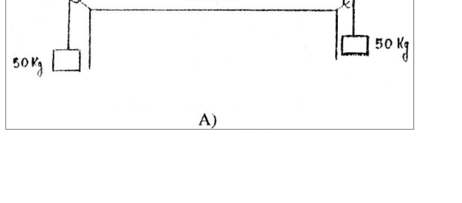
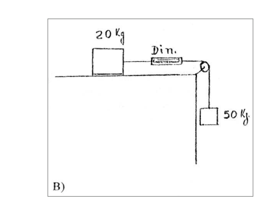
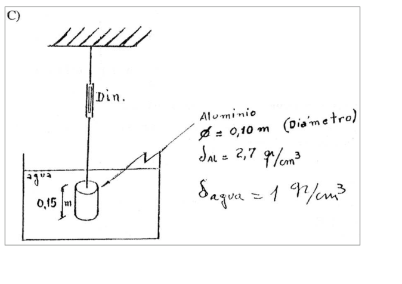
Topic: Rigid Body Statics, Fluid Mechanics Metodi: Free-Body Diagram, Hydrostatic Equilibrium Competenze: Physical Reasoning Objects: Pulley, Block, Cylinder Fonte: Testo (PDF) — p.2
32. Mar del Plata, Buenos Aires - Lezioni del dinamometro
- Mar del Plata, Buenos Aires.
Per ciascun caso di seguito, calcolare il valore indicato dal dinamometro. In ogni caso, disprezziare la massa delle corde, delle pole e del dinamometro. Disprezzi anche ogni friczione o frattura. (Figura) A) Dinamometro orizzontale con 50 Kg appeso da ogni estremità per via di polea. B) Dinamometro orizzontale su un tavolo con blocco di 20 Kg e, per una polla, 50 Kg appeso. C) Dynamometro sospeso dal tetto, sostenendo in acqua un cilindro di alluminio ( m diametro; ; ; immerso 0,15 m).
Topic: Rigid Body Statics, Fluid Mechanics Metodi: Free-Body Diagram, Hydrostatic Equilibrium Competenze: Physical Reasoning Objects: Pulley, Block, Cylinder Fonte: Testo (PDF) — p.2
**32. The Commission has decided to extend the period of validity of the agreement.
- The city of Mar del Plata, Buenos Aires.
For each of the following cases, calculate the value indicated by the dynamometer. In all cases, the mass of the strings, pulleys and dynamometer should be neglected. Also, disregard all friction or rubbing. (Figure) A) Horizontal dynamometer with 50 Kg suspended from each end by pulley paths. B) A horizontal dynamometer on a table with a block of 20 Kg and, by a pulley, a 50 Kg hanging. C) Roof suspension dynamometer, holding an aluminium cylinder in water ( m in diameter; ; ; submerged 0.15 m).
Topic: Rigid Body Statics, Fluid Mechanics Metodi: Free-Body Diagram, Hydrostatic Equilibrium Competenze: Physical Reasoning Objects: Pulley, Block, Cylinder Fonte: Testo (PDF) — p.2
33. San Nicolas, Buenos Aires - Sombra de hombre
- San Nicolas, Buenos Aires.
Un hombre de altura h se aleja de un farol suspendido a una altura H. Moviendose rectilineamente con velocidad v constante. Calcular la velocidad con que se mueve el extremo de la sombra del hombre (ver figura). Datos: (m/s); m); M).
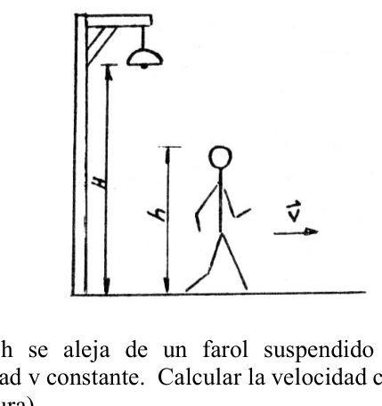
Topic: Newtonian Mechanics, Geometric Optics Metodi: Kinematic Equations Competenze: Physical Reasoning Objects: — Fonte: Testo (PDF) — p.2
**33. San Nicolas, Buenos Aires - Ombra di uomo
- San Nicolas, Buenos Aires.
Un uomo di altezza H si allontana da un faro appeso a altezza H. Si muove rettamente a velocità v costante. Calcolare la velocità con cui si muove l’estremità dell’ombra dell’uomo (vedi figura). I dati: (m/s); m; M.
Topic: Newtonian Mechanics, Geometric Optics Metodi: Kinematic Equations Competenze: Physical Reasoning Objects: — Fonte: Testo (PDF) — p.2
33. San Nicolas, Buenos Aires - Sombra de hombre
- San Nicolas, from Buenos Aires.
A man of h height moves away from a lighthouse suspended at an h height. Moving straight at constant v velocity. Calculate the speed at which the end of the shadow of man moves (see figure). Datos: (m/s); m); M).
Topic: Newtonian Mechanics, Geometric Optics Metodi: Kinematic Equations Competenze: Physical Reasoning Objects: — Fonte: Testo (PDF) — p.2
34. Mercedes, Buenos Aires - Nino en plataforma rotatoria
- Mercedes, Buenos Aires.
Un nino de 43.5 kg esta sentado en una plataforma horizontal rotatoria a una distancia de 1.22 mts del eje de rotacion. Si el coeficiente de rozamiento estatico es de 0.1 a) Cual es la maxima fuerza lateral disponible para impedir que resbale b) A que velocidad maxima puede girar sin resbalar
Topic: Rotational Dynamics, Newtonian Mechanics Metodi: Free-Body Diagram, Torque & Angular Momentum Analysis Competenze: Physical Reasoning Objects: Disk Fonte: Testo (PDF) — p.2
34. Mercedes, Buenos Aires - Nino in piattaforma rotatoria
- Mercedes, Buenos Aires.
Un bambino di 43,5 kg si trova seduto su una piattaforma orizzontale rotante a 1,22 metri dall’asse di rotazione. Se il coefficiente di rottura statica è di 0,1 a) Qual è la massima forza laterale disponibile per impedire il riscalzo b) A che velocità massima può girare senza scivolare
Topic: Rotational Dynamics, Newtonian Mechanics Metodi: Free-Body Diagram, Torque & Angular Momentum Analysis Competenze: Physical Reasoning Objects: Disk Fonte: Testo (PDF) — p.2
**34. The Commission has also adopted a number of measures to ensure that the Commission is able to take appropriate measures to ensure that the measures are implemented in accordance with Article 107 (1) TFEU.
- Mercedes, from Buenos Aires.
A 43.5-kg child is sitting on a rotating horizontal platform at a distance of 1.22 metres from the rotating axis. If the static friction coefficient is 0.1 (a) What is the maximum available lateral force to prevent slipping (b) What is the maximum speed at which it can spin without slipping
Topic: Rotational Dynamics, Newtonian Mechanics Metodi: Free-Body Diagram, Torque & Angular Momentum Analysis Competenze: Physical Reasoning Objects: Disk Fonte: Testo (PDF) — p.2
35. Capital Federal - Particula en via con extremos levantados
- Capital Federal.
Una particula desliza por una via que tiene sus extremos levantados y una parte central plana, como se muestra en la figura. (figura) La parte plana tiene longitud “l”. Las porciones curvas de la via no tienen rozamiento. Para la parte plana, el coeficiente de rozamiento dinamico es "". La particula se suelta en un punto “A” que se encuentra a una altura “h” sobre la parte plana de la via, y luego de recorrer una distancia “X” sobre la parte plana, choca plasticamente con otra particula de igual masa. En donde quedaran las particulas finalmente en reposo? Halle la expresion general de la solucion y los valores numericos si m, m, m, , . Cuanto deberia ser “X” si se quiere que las particulas se detengan en el punto “D”? (justo donde termina la parte plana)
Topic: Conservation of Energy, Conservation of Momentum Metodi: Energy Conservation Method, Conservation of Momentum, Free-Body Diagram Competenze: Physical Reasoning Objects: Block, Inclined Plane Fonte: Testo (PDF) — p.2
35. Capitale federale - Particolo in via con estremità alzate
- Capitale federale.
Una particella scivola per un percorso che ha le estremità alzate e una parte centrale piana, come mostra la figura. (Figura) La parte piana ha una lunghezza “l”. Le porzioni curve della via non hanno rottura. Per la parte piana, il coefficiente di rottura dinamico è "". La particella si rilascia in un punto “A” che si trova ad un’altezza “h” sulla parte piana del via, e dopo aver percorso una distanza “X” sulla parte piana, colpisce plasticamente con un’altra particella di uguale massa. Dove restano le particelle finalmente a riposo? Trova l’espressione generale della soluzione e i valori numerici se m, m, m, , . Quanto dovrebbe essere “X” se si vuole che le particelle si fermano al punto “D”? (quasi dove finisce la parte piatta)
Topic: Conservation of Energy, Conservation of Momentum Metodi: Energy Conservation Method, Conservation of Momentum, Free-Body Diagram Competenze: Physical Reasoning Objects: Block, Inclined Plane Fonte: Testo (PDF) — p.2
35. Federal capital - Particles on the road with raised ends
- Federal capital.
A particle slides along a path that has its upper ends and a flat central part, as shown in the figure. (Figure) The flat part has a length “l”. Curved portions of the track have no rust. For the flat part, the dynamic friction coefficient is ''. The particle is released at a point “A” that is at a height “h” above the flat part of the path, and after traveling a distance “X” over the flat part, it clashes plastically with another particle of equal mass. Where would the particles finally rest? Find the general expression of the solution and numerical values if m, m, m, , . How much should “X” be if you want the particles to stop at the “D” point? (Just where the flat ends)
Topic: Conservation of Energy, Conservation of Momentum Metodi: Energy Conservation Method, Conservation of Momentum, Free-Body Diagram Competenze: Physical Reasoning Objects: Block, Inclined Plane Fonte: Testo (PDF) — p.2
36. Ibarreta, Formosa - Motor en grua
- Ibarreta, Formosa.
Un motor con un rendimiento del 90% esta instalado en una grua de rendimiento igual a 40%. Sabiendo que la potencia suministrada es 5 Kw, calcular la velocidad con la que subira la grua un peso de 450 Kp.
Topic: Conservation of Energy Metodi: Energy Conservation Method Competenze: Physical Reasoning Objects: — Fonte: Testo (PDF) — p.2
36. Ibarretta, Formosa - Motore in grana
- Ibarreta, Formosa.
Un motore con un rendimento del 90% è installato su una gru di rendimento pari al 40%. Sapendo che la potenza fornita è di 5 Kw, calcolare la velocità con cui la gru sale un peso di 450 Kp.
Topic: Conservation of Energy Metodi: Energy Conservation Method Competenze: Physical Reasoning Objects: — Fonte: Testo (PDF) — p.2
36. Ibarreta, Formosa - Motor in whey
- Ibarreta, the formosa.
A 90% engine is installed on a 40% crane. Knowing that the power supplied is 5 Kw, calculate the speed at which the crane rises a 450 Kp weight.
Topic: Conservation of Energy Metodi: Energy Conservation Method Competenze: Physical Reasoning Objects: — Fonte: Testo (PDF) — p.2
37. Ledesma, Jujuy - Avion y camion
- Ledesma, Jujuy.
La figura muestra un avion que vuela a 490 m. con una velocidad de 370 Km/h., por encima de una carretera. Por esta se mueve un camion, en sentido contrario al avion. En el instante representado (que tomaremos como ), la distancia entre el avion y el camion (medida horizontalmente) es de 1.2 Km. Si el avion deja caer un paquete para que caiga justo en la caja del camion, determine: (figura, m, 1.2 Km) a) El tiempo que el paquete tarda en caer b) Cual debe ser la velocidad del camion para que esto suceda? c) Cual es la distancia que recorre el camion? d) Cual es la velocidad con que cae el paquete sobre el camion?
Topic: Newtonian Mechanics Metodi: Kinematic Equations, Vector Decomposition Competenze: Physical Reasoning Objects: Projectile Fonte: Testo (PDF) — p.2
37. Ledesma, Jujuy - Aereo e camion
- Ledesma, Jujuy.
La figura mostra un aereo che vola a 490 metri. con una velocità di 370 km/h, sopra una strada. Per questo si muove un camion, in senso contrario all’aereo. Nel momento rappresentato (che prenderemo come ), la distanza tra l’aereo e il camion (misurata orizzontalmente) è di 1,2 Km. Se l’aereo fa cadere un pacchetto per farlo cadere direttamente nella cassa del camion, determinare: (figura, m, 1,2 Km) a) Il tempo di caduta del pacco b) Qual è la velocità del camion per farlo? c) Qual è la distanza percorsa dal camion? d) A che velocità cade il pacco sul camion?
Topic: Newtonian Mechanics Metodi: Kinematic Equations, Vector Decomposition Competenze: Physical Reasoning Objects: Projectile Fonte: Testo (PDF) — p.2
37. Ledesma, Jujuy - Aircraft and trucks
- I’m going to take you, Jujuy.
The figure shows an aircraft flying at 490 m. With a speed of 370 km/h, over a road. This is where a truck moves, in the opposite direction to the plane. In the moment represented (which we shall take as ), the distance between the aircraft and the truck (measured horizontally) is 1.2 km. If the aircraft drops a package to drop it right into the truck box, determine: (Figure, m, 1.2 Km) (a) The time it takes for the package to fall (b) What speed must the truck be at for this to happen? (c) What is the distance travelled by the truck? (d) How fast does the package fall on the truck?
Topic: Newtonian Mechanics Metodi: Kinematic Equations, Vector Decomposition Competenze: Physical Reasoning Objects: Projectile Fonte: Testo (PDF) — p.2
38. San Juan - Pasajera y tren
- San Juan.
Una pasajera que viaja regularmente en el tren para volver a casa, generalmente llega a la estacion de su pueblo a las 5 pm, exactamente a la hora en que llega a buscarla en el coche de su familia. Un dia sale de su trabajo mas temprano y toma el tren que llega a la estacion a las 4 pm, entonces decide caminar hacia la casa y parte inmediatamente a lo largo de la misma ruta que sigue su esposo. El sale de la casa a la hora acostumbrada, conduce con la velocidad usual de 45 km/h. Se encuentran en el camino, se van a casa con la misma velocidad y llegan doce minutos mas temprano de lo normal. a) Que distancia camino la pasajera? b) A que hora se encontraron los esposos? c) Con que velocidad camino la pasajera?
Topic: Newtonian Mechanics Metodi: Kinematic Equations Competenze: Physical Reasoning Objects: — Fonte: Testo (PDF) — p.2
38. San Giovanni - Passeggero e treno
- San Giovanni.
Un passeggero che viaggia regolarmente sul treno per tornare a casa, di solito arriva alla stazione del suo villaggio alle 17:00, esattamente all’ora in cui arriva a prenderla nella macchina della sua famiglia. Un giorno lascia il lavoro prima e prende il treno che arriva alla stazione alle 4 di sera, poi decide di camminare verso casa e parte immediatamente lungo lo stesso percorso che segue suo marito. Esce dalla casa all’ora abituale, guida alla velocità abituale di 45 km/h. Si incontrano sulla strada, tornano a casa alla stessa velocità e arrivano 12 minuti prima del normale. a) Che distanza percorre la passeggera? b) A che ora si sono incontrati i coniugi? c) A che velocità si sta percorrendo il passeggero?
Topic: Newtonian Mechanics Metodi: Kinematic Equations Competenze: Physical Reasoning Objects: — Fonte: Testo (PDF) — p.2
**38. The following is the list of the official languages of the European Union:
- It’s St. John.
A passenger who travels regularly on the train to return home usually arrives at her village station at 5 p.m., exactly the time she arrives to pick her up in her family’s car. One day she leaves her job early and takes the train that arrives at the station at 4 p.m., then decides to walk home and leaves immediately along the same route her husband follows. He leaves the house at the usual hour, drives at the usual speed of 45 km/h. They meet on the road, go home at the same speed and arrive 12 minutes earlier than usual. (a) How far along is the passenger? (b) What time did the husbands meet? (c) How fast does the passenger travel?
Topic: Newtonian Mechanics Metodi: Kinematic Equations Competenze: Physical Reasoning Objects: — Fonte: Testo (PDF) — p.2
39. Capital Federal - Varilla que gira sobre un extremo
- Capital Federal.
Una varilla de masa M y longitud L puede girar libremente sobre uno de sus extremos (Fig.). En esas condiciones se la deja caer desde un angulo que forma con la horizontal. Hallar las Reacciones (horizontal y vertical) del punto A, en la posicion final (horizontal). (figura)
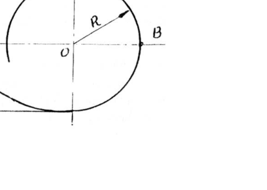
Topic: Rotational Dynamics Metodi: Torque & Angular Momentum Analysis, Energy Conservation Method Competenze: Physical Reasoning Objects: Rod Fonte: Testo (PDF) — p.2
39. Capitale federale - Valo che gira su un’estremità
- Capitale federale.
Una barra di massa M e lunghezza L può girare liberamente su uno dei suoi estremi (Fig.). In queste condizioni si lascia cadere da un angolo che forma con l’orizzontale. Trovare le reazioni (orizzontali e verticali) del punto A, nella posizione finale (orizzontale). (Figura)
Topic: Rotational Dynamics Metodi: Torque & Angular Momentum Analysis, Energy Conservation Method Competenze: Physical Reasoning Objects: Rod Fonte: Testo (PDF) — p.2
39. Federal capital - Rod that rotates on one end
- Federal capital.
A rod of mass M and length L can spin freely over one of its ends (Fig.). Under these conditions it is dropped from an angle forming with the horizontal. Find the Reactions (horizontal and vertical) of point A, in the final position (horizontal). (Figure)
Topic: Rotational Dynamics Metodi: Torque & Angular Momentum Analysis, Energy Conservation Method Competenze: Physical Reasoning Objects: Rod Fonte: Testo (PDF) — p.2
40. Capital Federal - Cuerpo en rizo (loop)
- Capital Federal.
Hallar la altura desde la que se debe dejar caer el cuerpo C (Fig.) en los siguientes casos: (figura, plano inclinado de altura que conecta con un rizo circular de radio R, angulo en B) a) Para que el cuerpo no caiga al llegar al punto A b) Para que al pasar por el punto B su velocidad sea de 10 m/s c) Calcular los valores anteriores para una radio de 1 m.
Topic: Conservation of Energy Metodi: Energy Conservation Method, Free-Body Diagram Competenze: Physical Reasoning Objects: Block Fonte: Testo (PDF) — p.2
40. Capitale federale - Corpo in giro (loop)
- Capitale federale.
Indicare la quota da cui deve essere abbassato il corpo C (Fig. 1) nei seguenti casi: (figura, piano inclinato di altezza che collega con un riso circolare di radius R, angolo in B) a) Per evitare che il corpo cadga al punto A b) Per che la velocità di passaggio del punto B sia di 10 m/s (c) Calcolare i valori precedenti per un raggio di 1 m.
Topic: Conservation of Energy Metodi: Energy Conservation Method, Free-Body Diagram Competenze: Physical Reasoning Objects: Block Fonte: Testo (PDF) — p.2
**40. The amount of the capital injection shall be calculated as follows:
- Federal capital.
Find the height from which the body C (Fig.) should be dropped in the following cases: (Figure, slope plane of height connecting to a circular R-radius ridge, angle in B) (a) To prevent the body from falling when it reaches point A (b) To have a speed of 10 m/s when passing through point B (c) Calculate the above values for a radius of 1 m.
Topic: Conservation of Energy Metodi: Energy Conservation Method, Free-Body Diagram Competenze: Physical Reasoning Objects: Block Fonte: Testo (PDF) — p.2
41. Capital Federal - Particula en mesa con hilo por orificio
- Capital Federal.
La particula de la figura de masa = 10 g esta unida al extremo de un hilo y recorre una trayectoria circular de radio cm sobre una mesa horizontal, sin rozamiento. (figura) El hilo pasa por un orificio de la mesa, y al comenzar su otro extremo se halla fijo. a) Si se tira ahora del hilo de modo que disminuye el radio de la orbita circular a cm, cual sera la velocidad angular si valia 1/seg al comenzar a tirar del hilo? b) Cual es el trabajo realizado cuando se tira muy lentamente del hilo (de modo que la velocidad radial sea despreciable) haciendo que el radio de la orbita pase de a ?
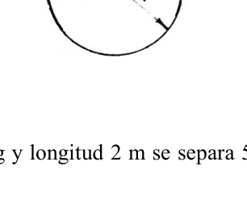
Topic: Rotational Dynamics Metodi: Torque & Angular Momentum Analysis, Conservation Laws Competenze: Physical Reasoning Objects: String, Block Fonte: Testo (PDF) — p.2
41. Capitale federale - Particolo di tavola con filo per foro
- Capitale federale.
La particella della figura di massa = 10 g è legata all’estremità di un filo e percorre un percorso circolare di radio cm su una tavola orizzontale, senza ruggine. (Figura) Il filo passa attraverso un foro del tavolo, e iniziando l’altro lato è fisso. a) Se il filo viene tirato ora in modo da ridurre il raggio di orbita circolare a cm, quale sarà la velocità angolare se vale 1/sec al momento di iniziare il tiro del filo? b) Qual è il lavoro svolto quando si tira molto lentamente dal filo (in modo che la velocità radial sia scarsa) facendo passare il raggio orbitale da a ?
Topic: Rotational Dynamics Metodi: Torque & Angular Momentum Analysis, Conservation Laws Competenze: Physical Reasoning Objects: String, Block Fonte: Testo (PDF) — p.2
41. Federal Capital - Particles on the table with thread per hole
- Federal capital.
The particle of the mass figure = 10 g is attached to the end of a thread and follows a circular path of cm radius over a horizontal table, without friction. (Figure) The thread goes through a hole in the table, and when you start, the other end is fixed. (a) If the wire is now pulled down so that the radius of the circular orbit is reduced to cm, what will be the angular velocity if it is 1/second when the wire is pulled? (b) What is the work done when pulling the wire very slowly (so that the radial velocity is negligible) by moving the radius of the orbit from to ?
Topic: Rotational Dynamics Metodi: Torque & Angular Momentum Analysis, Conservation Laws Competenze: Physical Reasoning Objects: String, Block Fonte: Testo (PDF) — p.2
42. Cinco Saltos, Rio Negro - Agujas del reloj
- Cinco Saltos, Rio Negro.
A que hora despues de las 4, coincide la posicion de las agujas horaria y minutera? Encuentre una expresion generica en funcion de la hora h, para poder calcular la cantidad de minutos desde la hora h, en la cual coinciden la posicion de las dos agujas.
Topic: Mathematics Metodi: Kinematic Equations Competenze: Physical Reasoning, Mathematical Modeling Objects: — Fonte: Testo (PDF) — p.2
42. Cinco Salto, Rio Negro - Aghi dell’orologio
- Cinque Salti, Rio Negro.
A che ora dopo le 4 corrispondono le posizioni delle aghe orarie e delle aghe minutarie? Trova un’espressione generica in funzione dell’ora h, per poter calcolare il numero di minuti dall’ora h, in cui coincidono le posizioni dei due aghi.
Topic: Mathematics Metodi: Kinematic Equations Competenze: Physical Reasoning, Mathematical Modeling Objects: — Fonte: Testo (PDF) — p.2
**42. Five leaps, Rio Negro - Clock needles
- Five jumps, the black river.
What time after 4 o’clock does the position of the clock and the minute needle match? Find a generic expression in function of h-time, so you can calculate the number of minutes from h-time, in which the positions of the two needles match.
Topic: Mathematics Metodi: Kinematic Equations Competenze: Physical Reasoning, Mathematical Modeling Objects: — Fonte: Testo (PDF) — p.2
43. Capital Federal - Cucaracha en disco
- Capital Federal.
Una cucaracha de masa g corre en sentido antihorario alrededor del borde de un disco que gira alrededor de un eje vertical, en el sentido horario. El disco tiene un radio de cm y un momento de inercia . Su velocidad es (1/seg). La velocidad de la cucaracha con relacion al suelo es m/seg. La cucaracha encuentra una miga de pan y se detiene. Determinar la velocidad angular del disco despues de detenerse la cucaracha. (figura)
Topic: Rotational Dynamics Metodi: Torque & Angular Momentum Analysis, Conservation Laws Competenze: Physical Reasoning Objects: Disk Fonte: Testo (PDF) — p.2
43. Capitale federale - Cucarata in disco
- Capitale federale.
Una scarafaggio di massa g corre in senso antiorario intorno al bordo di un disco che ruota attorno ad un asse verticale, in senso orario. Il disco ha un raggio di cm e un momento di inerzia . La sua velocità è (1/seg). La velocità della scarafaggio rispetto al suolo è m/sec. La scarafaggio trova un pezzo di pane e si ferma. Determinare la velocità angolare del disco dopo che la scarafaggio si è fermata. (Figura)
Topic: Rotational Dynamics Metodi: Torque & Angular Momentum Analysis, Conservation Laws Competenze: Physical Reasoning Objects: Disk Fonte: Testo (PDF) — p.2
**43. The amount of the loan is EUR 10 million.
- Federal capital.
A mass cockroach g runs counterclockwise around the edge of a disk that rotates around a vertical axis, clockwise. The disc has a radius of cm and an inertia moment . Its speed is (1/second). The ground-related speed of the cockroach is m/sec. The cockroach finds a slice of bread and stops. Determine the angular velocity of the disc after the cockroach stops. (Figure)
Topic: Rotational Dynamics Metodi: Torque & Angular Momentum Analysis, Conservation Laws Competenze: Physical Reasoning Objects: Disk Fonte: Testo (PDF) — p.2
44. Capital Federal - Pendulo simple y choque
- Capital Federal.
Un pendulo simple de masa 1 kg y longitud 2 m se separa de la posicion de equilibrio y se suelta. Al llegar a la posicion de equilibrio, la masa del pendulo choca elasticamente contra un taco de madera de 3 kg que esta en reposo sobre una mesa. a. Si el coeficiente de rozamiento entre el taco de madera y la mesa es de 0.4. Calcular que distancia recorre el taco hasta detenerse, luego del choque. b. Que movimiento describe el pendulo y que angulo forma con la vertical la primera vez que se detiene transitoriamente despues del choque?
Topic: Conservation of Energy, Conservation of Momentum Metodi: Energy Conservation Method, Conservation of Momentum, Free-Body Diagram Competenze: Physical Reasoning Objects: Pendulum, Block Fonte: Testo (PDF) — p.2
44. Capitale federale - Pondage semplice e colpo
- Capitale federale.
Un semplice pendolo di massa 1 kg e lunghezza 2 m si separa dalla posizione di equilibrio e si rilascia. Arrivata alla posizione di equilibrio, la massa del pendolo colpisce elasticamente un palo di legno di 3 kg che si riposa su un tavolo. a. Se il coefficiente di rottura tra il palo di legno e la tavola è di 0,4. Calcolare la distanza che il taco percorre fino a quando si ferma dopo l’impatto. b. Quale movimento descrive il pendolo e quale angolo forma con la verticale la prima volta che si ferma transitoriamente dopo l’impatto?
Topic: Conservation of Energy, Conservation of Momentum Metodi: Energy Conservation Method, Conservation of Momentum, Free-Body Diagram Competenze: Physical Reasoning Objects: Pendulum, Block Fonte: Testo (PDF) — p.2
44. Capital Federal - Pendulo simple y choque
- Federal capital.
Un pendulo simple de masa 1 kg y longitud 2 m se separa de la posicion de equilibrio y se suelta. When the pendulum reaches the equilibrium position, the mass of the pendulum collides elastically with a 3 kg wooden stick resting on a table. a. If the coefficient of friction between the wooden stick and the table is 0.4. Calculate the distance the taco travels until it stops after the impact. b. What motion does the pendulum describe and what angle does it form with the vertical the first time it stops transiently after the impact?
Topic: Conservation of Energy, Conservation of Momentum Metodi: Energy Conservation Method, Conservation of Momentum, Free-Body Diagram Competenze: Physical Reasoning Objects: Pendulum, Block Fonte: Testo (PDF) — p.2
45. Capital Federal - Proyectil y plataforma
- Capital Federal.
Un proyectil de masa m es lanzado por un canon, el cual hace un angulo de con la horizontal con una velocidad Vo. El proyectil cae justamente sobre una plataforma de masa M que se encuentra en reposo. El choque sucede de tal forma que el proyectil queda incrustado en la plataforma. Cual es la velocidad del conjunto bala-plataforma en la direccion horizontal? Despreciar la altura del canon con respecto al piso y suponer que no hay friccion entre el piso y la tabla.
Topic: Conservation of Momentum Metodi: Conservation of Momentum, Kinematic Equations, Vector Decomposition Competenze: Physical Reasoning Objects: Projectile, Cart Fonte: Testo (PDF) — p.2
45. Capitale federale - Progetto e piattaforma
- Capitale federale.
Un proiettile di massa m viene lanciato da un cannone, che fa un angolo di con la orizzontale con una velocità Vo. Il proiettile cade proprio su una piattaforma M in riposo. L’impatto avviene in modo tale che il proiettile rimanga incrustato nella piattaforma. Qual è la velocità del set di pallottole in direzione orizzontale? Sprezzare l’altezza del cannone rispetto al pavimento e supporre che non ci sia attrito tra il pavimento e la tavola.
Topic: Conservation of Momentum Metodi: Conservation of Momentum, Kinematic Equations, Vector Decomposition Competenze: Physical Reasoning Objects: Projectile, Cart Fonte: Testo (PDF) — p.2
45. Federal Capital - Project and platform
- Federal capital.
An m-mass projectile is launched by a cannon, which makes an angle of with the horizontal at a velocity Vo. The projectile falls just above an M-mass platform that is at rest. The impact occurs in such a way that the projectile is embedded in the platform. What is the velocity of the bullet-platform set in the horizontal direction? To disregard the height of the gun with respect to the floor and assume that there is no friction between the floor and the board.
Topic: Conservation of Momentum Metodi: Conservation of Momentum, Kinematic Equations, Vector Decomposition Competenze: Physical Reasoning Objects: Projectile, Cart Fonte: Testo (PDF) — p.2
46. Capital Federal - Disco sobre resorte
- Capital Federal.
Un disco de masa kgr se halla sobre una mesa horizontal; en el centro del mismo se halla fijo un resorte de constante N/m. Que trabajo hace falta realizar para levantar con el resorte el disco una altura m?
Topic: Conservation of Energy, Elasticity & Materials Metodi: Energy Conservation Method, Hooke’s Law Competenze: Physical Reasoning Objects: Disk, Spring Fonte: Testo (PDF) — p.2
46. Capitale federale - Disco in via di uscita
- Capitale federale.
Un disco di massa kgr si trova su una tavola orizzontale; al centro di essa si trova fissato un’uscita di costante N/m. Che lavoro è necessario per sollevare con la resorte il disco ad una altezza m?
Topic: Conservation of Energy, Elasticity & Materials Metodi: Energy Conservation Method, Hooke’s Law Competenze: Physical Reasoning Objects: Disk, Spring Fonte: Testo (PDF) — p.2
**46. The amount of the capital injection shall be the sum of the amounts of the capital injection.
- Federal capital.
A disk of mass kgr is on a horizontal table; in the center of the table is a fixed spring of constant N/m. What work does it take to lift the disc with the spring to a height m?
Topic: Conservation of Energy, Elasticity & Materials Metodi: Energy Conservation Method, Hooke’s Law Competenze: Physical Reasoning Objects: Disk, Spring Fonte: Testo (PDF) — p.2
47. Comodoro Rivadavia - Cuerpo en el Ecuador
- Comodoro Rivadavia.
Determinar la fuerza centripeta, la velocidad angular y la velocidad tangencial de un cuerpo de masa kg que se encuentra en el ECUADOR. (Radio de la tierra = 6400 km)
Topic: Rotational Dynamics, Gravitation Metodi: Torque & Angular Momentum Analysis, Kinematic Equations Competenze: Physical Reasoning Objects: Planet Fonte: Testo (PDF) — p.2
47. Comodoro Rivadavia - Corpo in Ecuador
- Comodoro Rivadavia.
Determinare la forza centripeta, la velocità angolare e la velocità tangenziale di un corpo di massa kg situato nell’ECUADOR. (Radio della terra = 6400 km)
Topic: Rotational Dynamics, Gravitation Metodi: Torque & Angular Momentum Analysis, Kinematic Equations Competenze: Physical Reasoning Objects: Planet Fonte: Testo (PDF) — p.2
**47. Comodoro Rivadavia - Corps in Ecuador
- Commodore Rivadavia, please.
Determine the centrifugal force, angular velocity and tangential velocity of a mass body kg located in the ECUADOR. (Radio of the earth = 6400 km)
Topic: Rotational Dynamics, Gravitation Metodi: Torque & Angular Momentum Analysis, Kinematic Equations Competenze: Physical Reasoning Objects: Planet Fonte: Testo (PDF) — p.2
48. Mar del Plata, Buenos Aires - Graficos velocidad y posicion
- Mar del Plata, Buenos Aires.
Observando los graficos de velocidad y posicion en funcion del tiempo, indicar a que tipo de movimiento corresponden. En caso de que alguno sea acelerado, indicar si la aceleracion es >0 o <0. (figura, grafico v-t con rectas 1,2,3 y grafico x-t con curvas 4 (parabola),5,6)
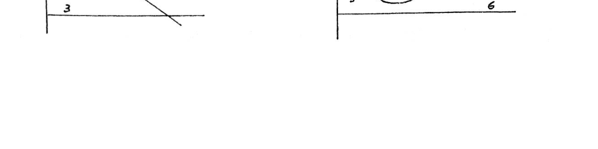
Topic: Newtonian Mechanics Metodi: Kinematic Equations, Graph Linearization Competenze: Physical Reasoning Objects: — Fonte: Testo (PDF) — p.2
48. Mar del Plata, Buenos Aires - Grafici velocità e posizione
- Mar del Plata, Buenos Aires.
osservando i grafici di velocità e posizione in funzione del tempo, indicare a quale tipo di movimento corrispondono. Se uno è accelerato, indicare se l’accelerazione è >0 o <0. (figura, grafico v-t con rettitudini 1,2,3 e grafico x-t con curve 4 (parabola),5,6)
Topic: Newtonian Mechanics Metodi: Kinematic Equations, Graph Linearization Competenze: Physical Reasoning Objects: — Fonte: Testo (PDF) — p.2
**48. Mar del Plata, Buenos Aires - Charts of speed and position
- The city of Mar del Plata, Buenos Aires.
By looking at the speed and position graphs in time function, indicate what type of movement they correspond to. If any acceleration is achieved, indicate whether the acceleration is >0 or <0. (Figure, graph v-t with rectangles 1,2,3 and graph x-t with curves 4 (parabola),5,6)
Topic: Newtonian Mechanics Metodi: Kinematic Equations, Graph Linearization Competenze: Physical Reasoning Objects: — Fonte: Testo (PDF) — p.2
49. Lomas de Zamora, Buenos Aires - Dos bloques arrastrados
- Lomas de Zamora, Buenos Aires.
Un bloque de masa 200 g descansa sobre otro de masa 800 g. El conjunto es arrastrado a velocidad constante sobre una superficie horizontal no pulida por un bloque de masa 200 g suspendido como muestra la figura (a). Se separa el primer bloque de 200 g y se une al bloque suspendido como en la figura (b). Cual sera ahora la aceleracion del sistema? (figura)
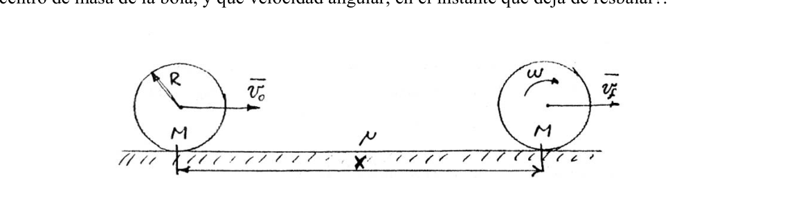
Topic: Newtonian Mechanics Metodi: Free-Body Diagram, Vector Decomposition Competenze: Physical Reasoning Objects: Block, Pulley, String Fonte: Testo (PDF) — p.2
**49. Lomas de Zamora, Buenos Aires - Due blocchi trascinati
- Lomas di Zamora, Buenos Aires.
Un blocco di massa di 200 g si posa su un altro di massa di 800 g. L’insieme è trascinato a velocità costante su una superficie orizzontale non lucidata da un blocco di massa di 200 g sospeso come mostrato nella figura (a). Separare il primo blocco di 200 g e unire il blocco sospeso come in figura (b). Qual è l’accelerazione del sistema? (Figura)
Topic: Newtonian Mechanics Metodi: Free-Body Diagram, Vector Decomposition Competenze: Physical Reasoning Objects: Block, Pulley, String Fonte: Testo (PDF) — p.2
**49. Lomas de Zamora, Buenos Aires - Two blocks dragged in
- Lomas from Zamora, Buenos Aires.
A block of 200 g rests on another block of 800 g. The assembly is dragged at a constant speed over an unpolished horizontal surface by a 200 g block of mass suspended as shown in Figure (a). The first 200 g block is separated and attached to the suspended block as shown in Figure (b). What will the acceleration of the system be now? (Figure)
Topic: Newtonian Mechanics Metodi: Free-Body Diagram, Vector Decomposition Competenze: Physical Reasoning Objects: Block, Pulley, String Fonte: Testo (PDF) — p.2
50. Capital Federal - Bola de billar
- Capital Federal.
Una bola de billar recibe un golpe con un taco como se muestra en la figura 2. La linea de accion del impulso aplicado es horizontal y pasa por el centro de la bola. Se conocen la velocidad inicial "" de la bola, su radio “R”, su masa “M”, y el coeficiente de rozamiento entre la bola y la mesa. Cuanto avanzara la bola antes de dejar de resbalar sobre la mesa? Que velocidad tendra el centro de masa de la bola, y que velocidad angular, en el instante que deja de resbalar? (figura)
Topic: Rotational Dynamics Metodi: Torque & Angular Momentum Analysis, Free-Body Diagram, Impulse-Momentum Theorem Competenze: Physical Reasoning Objects: Ball Fonte: Testo (PDF) — p.2
50. Capitale federale - Ballon d’Or
- Capitale federale.
Una palla da biliardo riceve un colpo con un pugno come mostrato nella figura 2. La linea di azione della pulsa applicata è orizzontale e passa attraverso il centro della palla. Si conoscono la velocità iniziale "" della palla, il suo raggio “R”, la sua massa “M”, e il coefficiente di ruggine tra la palla e la tavola. Quanto tempo fa la palla prima di smettere di scivolare sul tavolo? Che velocità avrà il centro di massa della palla, e che velocità angolare, nel momento in cui smette di scivolare? (Figura)
Topic: Rotational Dynamics Metodi: Torque & Angular Momentum Analysis, Free-Body Diagram, Impulse-Momentum Theorem Competenze: Physical Reasoning Objects: Ball Fonte: Testo (PDF) — p.2
**50. The amount of the capital injection is EUR 10 million.
- Federal capital.
A billiard ball receives a kick with a bat as shown in Figure 2. The action line of the applied impulse is horizontal and passes through the centre of the ball. The initial speed "" of the ball, its radius “R”, its mass “M”, and the coefficient of friction between the ball and the table are known. How far forward would the ball go before it stopped sliding on the table? What speed will the center of mass of the ball have, and what angular speed, the instant it stops sliding? (Figure)
Topic: Rotational Dynamics Metodi: Torque & Angular Momentum Analysis, Free-Body Diagram, Impulse-Momentum Theorem Competenze: Physical Reasoning Objects: Ball Fonte: Testo (PDF) — p.2
51. Navarro, Buenos Aires - Cilindro hueco perforado por bala
- Navarro, Buenos Aires.
Un cilindro hueco de 3 m de altura gira alrededor de su eje con movimiento uniforme, a razon de 180 vueltas por minuto. Una bala disparada paralelamente al eje de rotacion perfora las bases en dos puntos, cuyos radios forman un angulo igual a . Calcular la velocidad de la bala.
Topic: Rotational Dynamics Metodi: Torque & Angular Momentum Analysis, Kinematic Equations Competenze: Physical Reasoning Objects: Cylinder, Projectile Fonte: Testo (PDF) — p.2
51. Navarro, Buenos Aires - cilindro vuoto perforato da proiettile
- Navarro, Buenos Aires.
Un cilindro vuoto di 3 metri di altezza ruota attorno al suo asse con movimento uniforme, a velocità di 180 giri al minuto. Una pallottola sparata parallelo all’asse di rotazione perforerà le basi in due punti, i cui raggi formano un angolo pari a . Calcolare la velocità della pallottola.
Topic: Rotational Dynamics Metodi: Torque & Angular Momentum Analysis, Kinematic Equations Competenze: Physical Reasoning Objects: Cylinder, Projectile Fonte: Testo (PDF) — p.2
51. Navarro, Buenos Aires - Hollow cylinder perforated by bullet
- I’m from Navarro, Buenos Aires.
A 3 m high hollow cylinder rotates around its axis with uniform motion, at a rate of 180 rounds per minute. A bullet fired parallel to the rotation axis pierces the bases at two points, whose radii form an angle equal to . Calculate the speed of the bullet.
Topic: Rotational Dynamics Metodi: Torque & Angular Momentum Analysis, Kinematic Equations Competenze: Physical Reasoning Objects: Cylinder, Projectile Fonte: Testo (PDF) — p.2
52. Salta - Riel inclinado giratorio
- Salta.
Se dispone de un riel inclinado 30 con la horizontal sobre el que puede deslizar sin rozamiento un carrito de 2 kg de masa que esta a una altura m segun se indica y ademas esta vinculado por medio de una cuerda a una segunda masa, que cuelga por el extremo inferior del riel gracias a una polea. Si ahora el riel se hace girar a 400 rpm respecto a un eje vertical, coincidente con la cuerda se observa que la segunda masa esta en reposo segun una direccion vertical. (figura) Hallar: a) La tension de la cuerda. b) El valor de la masa suspendida. c) La fuerza normal que ejerce el riel sobre el carrito.
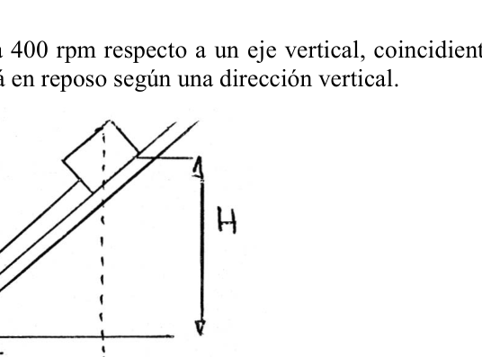
Topic: Rotational Dynamics, Newtonian Mechanics Metodi: Free-Body Diagram, Torque & Angular Momentum Analysis, Vector Decomposition Competenze: Physical Reasoning Objects: Cart, Inclined Plane, Pulley Fonte: Testo (PDF) — p.2
52. Salto - Rile inclinato a rotazione
- Salta. Salta.
Un’inclinazione 30 con la linea orizzontale su cui un carrello di 2 kg di massa che è a un’altezza m come indicato può scivolare senza scorciare e che è inoltre collegato da una corda ad una seconda massa, che si appende dalla parte inferiore del rello grazie a una polea. Se ora il binario si gira a 400 giri al minuto rispetto ad un asse verticale, coincidente con la corda si osserva che la seconda massa è a riposo in una direzione verticale. (Figura) Trovare: a) La tensione della corda. b) Il valore della massa sospesa. c) La forza normale esercitata dal binario sul carrello.
Topic: Rotational Dynamics, Newtonian Mechanics Metodi: Free-Body Diagram, Torque & Angular Momentum Analysis, Vector Decomposition Competenze: Physical Reasoning Objects: Cart, Inclined Plane, Pulley Fonte: Testo (PDF) — p.2
**52. The following conditions shall apply:
- Jump in.
A 30 tilted rail with the horizontal over which a cart of 2 kg mass can slide without friction at a height m as indicated and is connected by a rope to a second mass, which hangs from the bottom of the rail by means of a pulley. If now the rail is rotated at 400 rpm with respect to a vertical axis, coinciding with the rope it is observed that the second mass is at rest in a vertical direction. (Figure) Find out: (a) The tension of the rope. (b) The value of the mass suspended. (c) The normal force exerted by the rail over the wagon.
Topic: Rotational Dynamics, Newtonian Mechanics Metodi: Free-Body Diagram, Torque & Angular Momentum Analysis, Vector Decomposition Competenze: Physical Reasoning Objects: Cart, Inclined Plane, Pulley Fonte: Testo (PDF) — p.2
53. Formosa - Masa en resorte oscilando
- Formosa.
Se aplica una fuerza de 1 Newton, para desplazar 10 cm. de la posicion de equilibrio una masa de 100 gramos, suspendida de un resorte. Luego de esto se observa que realiza 10 oscilaciones en 5 segundos. Calcular: a) el periodo del movimiento, b) la frecuencia del movimiento, c) la constante del resorte.
Topic: Oscillations & Waves, Elasticity & Materials Metodi: Simple Harmonic Motion Analysis, Hooke’s Law Competenze: Physical Reasoning Objects: Spring Fonte: Testo (PDF) — p.2
53. Formosa - Massa a primavera oscilante
-
- È bellissimo.
Applica una forza di 1 Newton per spostare 10 cm. di equilibrio una massa di 100 grammi, sospesa da una resorte. Dopo di che si osserva che fa 10 oscillazioni in 5 secondi. Calcolare: a) il periodo di movimento, b) la frequenza del movimento, c) la costante della scorsa.
Topic: Oscillations & Waves, Elasticity & Materials Metodi: Simple Harmonic Motion Analysis, Hooke’s Law Competenze: Physical Reasoning Objects: Spring Fonte: Testo (PDF) — p.2
53. Formose - mass in spring oscillating
- That’s great.
A force of 1 Newton is applied to displace 10 cm. of the equilibrium position a mass of 100 grams suspended from a spring. After this, you notice that it makes 10 oscillations in 5 seconds. Calculate: (a) the period of movement, (b) the frequency of movement, (c) the spring constant.
Topic: Oscillations & Waves, Elasticity & Materials Metodi: Simple Harmonic Motion Analysis, Hooke’s Law Competenze: Physical Reasoning Objects: Spring Fonte: Testo (PDF) — p.2
54. Capital Federal - MAS resorte horizontal
- Capital Federal.
Un cuerpo de 0.5 kg sujeto a un resorte describe un movimiento armonico simple sobre un plano horizontal. Si la amplitud es de 0.1 m y la energia mecanica total del sistema se conserva y es de 0.25J, determinar: a. Constante elastica del resorte b. Velocidad maxima c. Elongacion en el instante en que la energia cinetica es la mitad de la energia potencial elastica d. Modulo de la velocidad cuando la elongacion es de 0.05 m e. Periodo del movimiento
Topic: Oscillations & Waves Metodi: Simple Harmonic Motion Analysis, Energy Conservation Method, Hooke’s Law Competenze: Physical Reasoning Objects: Spring, Block Fonte: Testo (PDF) — p.2
54. Capitale federale - MAS risorsa orizzontale
- Capitale federale.
Un corpo di 0,5 kg soggetto a una resorte descrive un semplice movimento armonico su un piano orizzontale. Se l’ampiezza è di 0,1 m e l’energia meccanica totale del sistema è conservata ed è di 0,25J, determinare: a. Costante elastica della primavera b. Velocità massima c. L’allungamento nel momento in cui l’energia cinetica è la metà dell’energia potenziale elastica d. Modulo di velocità quando l’allungamento è di 0,05 m e. Periodo di movimento
Topic: Oscillations & Waves Metodi: Simple Harmonic Motion Analysis, Energy Conservation Method, Hooke’s Law Competenze: Physical Reasoning Objects: Spring, Block Fonte: Testo (PDF) — p.2
**54. The amount of the capital injection is EUR 10 million.
- Federal capital.
A 0.5 kg body subject to a spring describes a simple harmonic movement over a horizontal plane. If the width is 0,1 m and the total mechanical energy of the system is conserved and is 0,25 J, determine: a. Elastic spring constant b. Maximum speed c. Elongation in the instant where the kinetic energy is half the elastic potential energy d. Speed module when elongation is 0.05 m e. Period of movement
Topic: Oscillations & Waves Metodi: Simple Harmonic Motion Analysis, Energy Conservation Method, Hooke’s Law Competenze: Physical Reasoning Objects: Spring, Block Fonte: Testo (PDF) — p.2
55. Mar del Plata, Buenos Aires - Burbujas en recipiente
- Mar del Plata, Buenos Aires.
En el interior de un recipiente cerrado con agua se pueden liberar pequenas burbujas de aire. Describa o dibuje la trayectoria de las burbujas, referidas al recipiente, en los siguientes casos:
- El recipiente en reposo.
- El recipiente en movimiento constante uniforme horizontal hacia la derecha.
- El recipiente con aceleracion constante en una direccion horizontal hacia la izquierda.
- El recipiente acelerado verticalmente hacia arriba con el doble de la aceleracion de la gravedad.
- El recipiente acelerado verticalmente hacia abajo con el doble de la aceleracion de la gravedad.
- El recipiente moviendose en una trayectoria parabolica de tipo “tiro libre”.
Topic: Fluid Mechanics Metodi: Hydrostatic Equilibrium, Free-Body Diagram Competenze: Physical Reasoning Objects: Bubble, Container Fonte: Testo (PDF) — p.2
55. Mar del Plata, Buenos Aires - Bolle in contenitore
- Mar del Plata, Buenos Aires.
All’interno di un contenitore chiuso con acqua si possono rilasciare piccole bolle d’aria. Descrivere o disegnare il percorso delle bolle, riferite al contenitore, nei seguenti casi:
- Il recipiente in riposo.
- Il recipiente in costante movimento uniforme orizzontale verso destra.
- Il recipiente con accelerazione costante in direzione orizzontale verso sinistra.
- Il recipiente accelerato verticalmente verso l’alto con il doppio dell’accelerazione della gravità.
- Il recipiente accelerato verticalmente verso il basso con il doppio dell’accelerazione della gravità.
- Il recipiente si muove in un percorso parabolico tipo “sparo libero”.
Topic: Fluid Mechanics Metodi: Hydrostatic Equilibrium, Free-Body Diagram Competenze: Physical Reasoning Objects: Bubble, Container Fonte: Testo (PDF) — p.2
**55. Mar del Plata, Buenos Aires - Bubbles in containers
- The city of Mar del Plata, Buenos Aires.
Inside a sealed container with water, small air bubbles can be released. Describe or draw the trajectory of the bubbles, referred to the container, in the following cases:
- The container at rest.
- The vessel in constant horizontal horizontal motion to the right.
- The vessel with constant acceleration in a horizontal direction to the left.
- The vessel accelerated vertically upwards with twice the acceleration of gravity.
- The vessel accelerated vertically downwards with twice the acceleration of gravity.
- The vessel moving in a free-fire-like parabolic path.
Topic: Fluid Mechanics Metodi: Hydrostatic Equilibrium, Free-Body Diagram Competenze: Physical Reasoning Objects: Bubble, Container Fonte: Testo (PDF) — p.2
56. Capital Federal - Tanque con orificio (Torricelli)
- Capital Federal.
Un tanque esta lleno de agua hasta una altura “H”. Tiene un orificio en una de sus paredes a una profundidad “h” bajo la superficie del agua, como se muestra en la figura. (figura) (a) Encontrar la distancia “X” a partir del pie de la pared del cual el chorro llega al piso. (b) Podria hacerse un orificio a otra profundidad de manera que este segundo chorro tuviera el mismo alcance? Si es asi, a que profundidad?
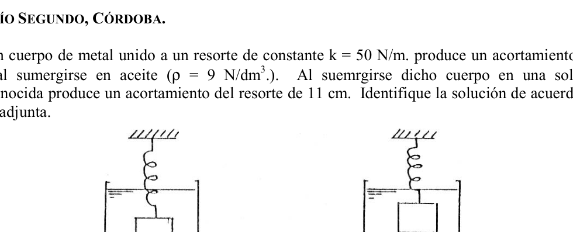
Topic: Fluid Mechanics Metodi: Bernoulli’s Equation, Kinematic Equations Competenze: Physical Reasoning Objects: Container Fonte: Testo (PDF) — p.2
56. Capitale federale - Tangi con buco (Torricelli)
- Capitale federale.
Un serbatoio è pieno di acqua fino a un’altezza “H”. Ha un orificio in una delle sue pareti a una profondità “h” sotto la superficie dell’acqua, come mostrato nella figura. (Figura) (a) Trovare la distanza “X” dal piede del muro dal quale il jet arriva al pavimento. (b) Si potrebbe fare un foro ad un’altra profondità in modo che questo secondo jet abbia la stessa portata? Se è così, a che profondità?
Topic: Fluid Mechanics Metodi: Bernoulli’s Equation, Kinematic Equations Competenze: Physical Reasoning Objects: Container Fonte: Testo (PDF) — p.2
**56. Federal capital - Tank with hole (Torricelli)
- Federal capital.
A tank is filled with water to a height of “H”. It has a hole in one of its walls at a depth of “h” below the water surface, as shown in the figure. (Figure) (a) Find the distance “X” from the foot of the wall from which the jet reaches the floor. (b) Could a hole be made at another depth so that this second jet had the same range? If so, how deep?
Topic: Fluid Mechanics Metodi: Bernoulli’s Equation, Kinematic Equations Competenze: Physical Reasoning Objects: Container Fonte: Testo (PDF) — p.2
57. Rio Segundo, Cordoba - Resorte en aceite y solucion
- Rio Segundo, Cordoba.
Un cuerpo de metal unido a un resorte de constante N/m. produce un acortamiento de 8 cm. al sumergirse en aceite (.). Al sumergirse dicho cuerpo en una solucion desconocida produce un acortamiento del resorte de 11 cm. Identifique la solucion de acuerdo a la tabla adjunta. (figura) gasolina…. Glicerina…. mercurio….
Topic: Fluid Mechanics, Elasticity & Materials Metodi: Hooke’s Law, Hydrostatic Equilibrium Competenze: Physical Reasoning Objects: Spring, Container Fonte: Testo (PDF) — p.2
57. Rio Segundo, Cordoba - Risorsa in olio e soluzione
- Rio Segundo, Cordoba.
Un corpo di metallo attaccato ad una resorte di costante N/m. produce un abbreviamento di 8 cm. quando immersi in olio (). Se il corpo viene immerso in una soluzione sconosciuta, si ottiene un ridimensionamento del resortimento di 11 cm. Identifica la soluzione secondo la tabella allegata. (Figura) gasolina…. Glicerina…. il mercurio….
Topic: Fluid Mechanics, Elasticity & Materials Metodi: Hooke’s Law, Hydrostatic Equilibrium Competenze: Physical Reasoning Objects: Spring, Container Fonte: Testo (PDF) — p.2
57. Rio Segundo, Cordoba - Oil and solution spring
- Rio Segundo, Cordoba. It’s the first one.
A metal body attached to a spring of constant N/m. The resulting shortening is 8 cm. when immersed in oil (). When the body is immersed in an unknown solution, the spring shortened by 11 cm. Identify the solution according to the table attached. (Figure) gasolina…. Glycerin is a …. mercurio….
Topic: Fluid Mechanics, Elasticity & Materials Metodi: Hooke’s Law, Hydrostatic Equilibrium Competenze: Physical Reasoning Objects: Spring, Container Fonte: Testo (PDF) — p.2
58. Mercedes, Buenos Aires - Bloque de madera flotando
- Mercedes, Buenos Aires.
Un bloque de madera flota en el agua con el 66% de su volumen sumergido y en aceite con el 90% de su volumen sumergido. Encontrar el peso especifico de la madera y del aceite.
Topic: Fluid Mechanics Metodi: Hydrostatic Equilibrium Competenze: Physical Reasoning Objects: Block Fonte: Testo (PDF) — p.2
58. Mercedes, Buenos Aires - Blocco di legno galleggiante
- Mercedes, Buenos Aires.
Un blocco di legno galleggia nell’acqua con il 66% del suo volume immerso e in olio con il 90% del suo volume immerso. Trovare il peso specifico del legno e dell’olio.
Topic: Fluid Mechanics Metodi: Hydrostatic Equilibrium Competenze: Physical Reasoning Objects: Block Fonte: Testo (PDF) — p.2
**58. Mercedes, Buenos Aires - Floating wood block
- Mercedes, from Buenos Aires.
A block of wood floats in water with 66% of its volume submerged and in oil with 90% of its volume submerged. Find the specific weight of the wood and oil.
Topic: Fluid Mechanics Metodi: Hydrostatic Equilibrium Competenze: Physical Reasoning Objects: Block Fonte: Testo (PDF) — p.2
59. Salta - Departamento con presion de agua
- Salta.
Un departamento a 15 m de altura sobre la vereda, debe ser dotado con agua a una presion de . A que altura debera estar el tanque con respecto a la vereda?
Topic: Fluid Mechanics Metodi: Hydrostatic Equilibrium Competenze: Physical Reasoning Objects: Container Fonte: Testo (PDF) — p.2
59. Salto - Dipartimento a pressione dell’acqua
- Salta. Salta.
Un appartamento a 15 m di altezza sopra la via deve essere dotato di acqua a una pressione . A che altezza dovrebbe essere il serbatoio rispetto al vialetto?
Topic: Fluid Mechanics Metodi: Hydrostatic Equilibrium Competenze: Physical Reasoning Objects: Container Fonte: Testo (PDF) — p.2
59. Jump - Department with water pressure
- Jump in.
An apartment 15 m above the sidewalk must be provided with water at a pressure of . How high should the tank be with respect to the alley?
Topic: Fluid Mechanics Metodi: Hydrostatic Equilibrium Competenze: Physical Reasoning Objects: Container Fonte: Testo (PDF) — p.2
60. Cinco Saltos, Rio Negro - Cubo flotando en mercurio
- Cinco Saltos, Rio Negro.
Un cubo que esta flotando en mercurio tiene sumergida la cuarta parte de su volumen. Si se agrega agua suficiente para cubrir el cubo, que fraccion de su volumen quedara sumergida en el mercurio? La respuesta anterior, depende de la forma del cubo? Fundamente su respuesta.
Topic: Fluid Mechanics Metodi: Hydrostatic Equilibrium Competenze: Physical Reasoning Objects: Block Fonte: Testo (PDF) — p.2
60. Cinco Salto, Rio Negro - Cubo galleggiante in mercurio
- Cinque Salti, Rio Negro.
Un cubo che galleggia in mercurio ha un quarto del suo volume immerso. Se si aggiunge abbastanza acqua per coprire il cubo, quale frazione del volume rimane immersa nel mercurio? La risposta precedente dipende dalla forma del cubo? Fondamentalmente la sua risposta.
Topic: Fluid Mechanics Metodi: Hydrostatic Equilibrium Competenze: Physical Reasoning Objects: Block Fonte: Testo (PDF) — p.2
**60. Five leaps, Rio Negro - Cube floating in mercury
- Five jumps, the black river.
A cube that’s floating in mercury has a quarter of its volume submerged. If enough water is added to cover the cube, what fraction of its volume will be submerged in the mercury? The answer above, depends on the shape of the cube? Basically his answer.
Topic: Fluid Mechanics Metodi: Hydrostatic Equilibrium Competenze: Physical Reasoning Objects: Block Fonte: Testo (PDF) — p.2
61. Capital Federal - Globo de hidrogeno en equilibrio
- Capital Federal.
La figura muestra un sistema en equilibrio. Si el globo B esta lleno de hidrogeno y: kg; N; C; mmHg; (atm.l)/(mol.K); ; ; CNPT; . (figura, cuerpo A sobre plano inclinado conectado por poleas a globo B) Hallar: a) Cantidad de materia (H2) b) Volumen de H2 c) Peso total Globo+Cuerdas d) en estas condiciones e) Empuje del aire al Globo f) Fza. ascencional g) Tension de la cuerda sobre A h) Peso del cuerpo A
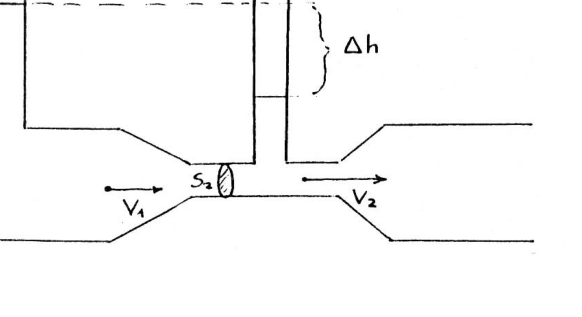
Topic: Fluid Mechanics, Rigid Body Statics Metodi: Hydrostatic Equilibrium, Ideal Gas Law, Free-Body Diagram Competenze: Physical Reasoning Objects: Block, Pulley, Inclined Plane Fonte: Testo (PDF) — p.2
61. Capitale federale - Globo di idrogeno in equilibrio
- Capitale federale.
La figura mostra un sistema in equilibrio. Se il globolo B è pieno di idrogeno e: kg; N; C; mmHg; (atm.l)/(mol.K); ; ; CNPT; . (Figura, corpo A su piano inclinato collegato da polemici a pallone B) Trovare: a) Quantità di materia (H2) b) Volume di H2 c) Peso totale Globo+Cordoni d) in queste condizioni e) Push dell’aria al Globo f) Fza. ascendente g) Tensione della corda su A h) Peso del corpo A
Topic: Fluid Mechanics, Rigid Body Statics Metodi: Hydrostatic Equilibrium, Ideal Gas Law, Free-Body Diagram Competenze: Physical Reasoning Objects: Block, Pulley, Inclined Plane Fonte: Testo (PDF) — p.2
**61. The amount of the loan is EUR 10 million.
- Federal capital.
The figure shows a system in balance. If the balloon B is filled with hydrogen and: kg; N; C; mmHg; (atm.l)/(mol.K); ; ; CNPT; . (Figure, body A on a flat sloping plane connected by pulleys to balloon B) Find out: (a) Quantity of matter (H2) (b) Volume of H2 (c) Total weight Globo+Cords (d) under these conditions (e) Air thrust into the balloon (f) Fza. Ascension (g) String tension over A (h) Body weight A
Topic: Fluid Mechanics, Rigid Body Statics Metodi: Hydrostatic Equilibrium, Ideal Gas Law, Free-Body Diagram Competenze: Physical Reasoning Objects: Block, Pulley, Inclined Plane Fonte: Testo (PDF) — p.2
62. Salta - Medidor con piezometros (Venturi)
- Salta.
Para el medidor de la fig. el cociente entre las areas y es 10 y la diferencia de altura entre los piezometros es de 20 cm., el liquido es agua. Calcule y ? (figura, , , , , )
Topic: Fluid Mechanics Metodi: Bernoulli’s Equation, Continuity Equation Competenze: Physical Reasoning Objects: Tube, Manometer Fonte: Testo (PDF) — p.2
62. Salto - Misurazione con piezzometri (Venturi)
- Salta. Salta.
Per il misuratore di figa. il coefficiente tra le aree e è 10 e la differenza di altezza tra i piezometri è di 20 cm. il liquido è acqua. Calcolare e ? (Figura, , , , , )
Topic: Fluid Mechanics Metodi: Bernoulli’s Equation, Continuity Equation Competenze: Physical Reasoning Objects: Tube, Manometer Fonte: Testo (PDF) — p.2
**62. Jump - Piezometer (Venturi) **
- Jump in.
For the fig gauge. The ratio between the areas and is 10 and the height difference between the piezometers is 20 cm. The liquid is water. Calculate and ? (figura, , , , , )
Topic: Fluid Mechanics Metodi: Bernoulli’s Equation, Continuity Equation Competenze: Physical Reasoning Objects: Tube, Manometer Fonte: Testo (PDF) — p.2
63. Capital Federal - N2 gaseoso calor
- Capital Federal.
La temperatura de 5 kg de gaseoso se eleva desde C a C. a) Si se realiza el proceso a presion constante, hallar la cantidad de calor necesaria para ello, el incremento de energia interna , y el trabajo exterior W realizado por el gas. b) Calcular la cantidad de calor necesaria, si el proceso se lleva a cabo a volumen constante. Los calores especificos del son: kcal/(kgK) y kcal/(kgK).
Topic: Thermodynamics Metodi: First Law of Thermodynamics, Ideal Gas Law Competenze: Physical Reasoning Objects: Gas Fonte: Testo (PDF) — p.2
63. Capitale federale - N2 caldo gassoso
- Capitale federale.
La temperatura di 5 kg di gaseoso sale da C a C. a) Se il processo è eseguito a pressione costante, determinare la quantità di calore necessaria, l’aumento di energia interna e il lavoro esterno W eseguito dal gas. b) Calcolare la quantità di calore necessaria, se il processo è effettuato a volume costante. I calori specifici del sono: kcal/(kgK) e kcal/(kgK).
Topic: Thermodynamics Metodi: First Law of Thermodynamics, Ideal Gas Law Competenze: Physical Reasoning Objects: Gas Fonte: Testo (PDF) — p.2
63. Federal Capital - N2 hot gas
- Federal capital.
The temperature of 5 kg of gaseous material is raised from C to C. (a) If the process is under constant pressure, find the amount of heat required for it, the internal energy increase , and the outdoor work W performed by the gas. (b) Calculate the amount of heat required if the process is carried out at a constant volume. The specific heat of is: kcal/(kgK) and kcal/(kgK).
Topic: Thermodynamics Metodi: First Law of Thermodynamics, Ideal Gas Law Competenze: Physical Reasoning Objects: Gas Fonte: Testo (PDF) — p.2
64. Comodoro Rivadavia, Chubut - Equivalente absoluto del aire
- Comodoro Rivadavia, Chubut.
Experimentando con 1 kg de aire a presion atmosferica normal se observa que: Si C entonces Si C entonces Hallar el equivalente absoluto.
Topic: Thermodynamics Metodi: Ideal Gas Law Competenze: Physical Reasoning Objects: Gas Fonte: Testo (PDF) — p.2
64. Comodoro Rivadavia, Chubut - Assoluto equivalente all’aria
- Comodoro Rivadavia, Chubut.
Sperimentando con 1 kg di aria a pressione atmosferica normale si osserva che: Se C allora Se C allora Trovare l’equivalente assoluto.
Topic: Thermodynamics Metodi: Ideal Gas Law Competenze: Physical Reasoning Objects: Gas Fonte: Testo (PDF) — p.2
64. Comodoro Rivadavia, Chubut - Absolute equivalent of air
- Commodore Rivadavia, Chubut.
Experimenting with 1 kg of air at normal atmospheric pressure shows that: If C then If C then Find the absolute equivalent.
Topic: Thermodynamics Metodi: Ideal Gas Law Competenze: Physical Reasoning Objects: Gas Fonte: Testo (PDF) — p.2
65. Cordoba, Capital - Volumen de oxigeno
- Cordoba, Capital.
Que volumen ocupan a C, 96 gramos de Oxigeno, a la presion de 1 Atmosfera?
Topic: Thermodynamics Metodi: Ideal Gas Law Competenze: Physical Reasoning Objects: Gas Fonte: Testo (PDF) — p.2
65. Cordoba, capitale - Volume di ossigeno
- Cordoba, capitale.
Che volume occupiamo a C, 96 grammi di ossigeno, alla pressione di 1 atmosfera?
Topic: Thermodynamics Metodi: Ideal Gas Law Competenze: Physical Reasoning Objects: Gas Fonte: Testo (PDF) — p.2
**65. The Commission has not yet established the conditions for the calculation of the net operating costs.
- Cordoba, the capital.
What volume do they occupy at C, 96 grams of oxygen, at 1 atmospheric pressure?
Topic: Thermodynamics Metodi: Ideal Gas Law Competenze: Physical Reasoning Objects: Gas Fonte: Testo (PDF) — p.2
66. Rio Segundo, Cordoba - Cubo de metal con gas
- Rio Segundo, Cordoba.
Un cubo de metal (calor especifico = 0.031 kcal/kgC y coeficiente de dilatacion lineal = C) de 15.0 cm. de lado y 3 kg de masa posee en su interior un gas sometido a una presion de 1.5 atm. Dicho cubo se encuentra sumergido en 10.1 de agua a C; si se agregaran al mismo 50 l. de agua a C, cual es la presion final que adquiere el gas encerrado en el cubo de metal? (figura) Considere nulo el calor especifico del gas y el recipiente exterior perfectamente aislado.
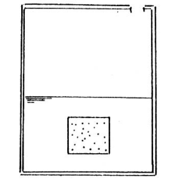
Topic: Thermodynamics Metodi: Ideal Gas Law, First Law of Thermodynamics Competenze: Physical Reasoning Objects: Gas Fonte: Testo (PDF) — p.2
66. Rio Segundo, Cordoba - Cubo metallico con gas
- Rio Segundo, Cordoba.
Un cubo di metallo (calore specifico = 0,031 kcal/kgC e coefficiente di dilatazione lineare = C) di 15,0 cm. di lato e di 3 kg di massa, ha dentro un gas sottoposto a una pressione di 1,5 atm. Tale cubo è immerso in 10,1 metri di acqua a C; se sono stati aggiunti 50 l. di acqua a C, qual è la pressione finale che acquista il gas rinchiuso nel cubo di metallo? (Figura) Considerare nullo il calore specifico del gas e il recipiente esterno perfettamente isolato.
Topic: Thermodynamics Metodi: Ideal Gas Law, First Law of Thermodynamics Competenze: Physical Reasoning Objects: Gas Fonte: Testo (PDF) — p.2
**66. Rio Segundo, Cordoba - Gas-filled metal cube
- Rio Segundo, Cordoba. It’s the first one.
A metal cube (specific heat = 0,031 kcal/kgC and linear dilation coefficient = C) of 15,0 cm. The gas is pressurized at 1.5 atm. This bucket is immersed in 10.1 m of water at C; if added to the same 50 l. from water to C, what is the final pressure that the gas in the metal cube acquires? (Figure) Consider zero the specific heat of the gas and the perfectly insulated outer container.
Topic: Thermodynamics Metodi: Ideal Gas Law, First Law of Thermodynamics Competenze: Physical Reasoning Objects: Gas Fonte: Testo (PDF) — p.2
67. Mendoza - Transformacion isotermica
- Mendoza.
En una transformacion isotermica, 10 moles de un gas ocupan un volumen de 40 litros a 6 atmosferas. Al ocupar un volumen de 70 litros, se pide: a) Temperatura de la evolucion b) Presion final c) Trabajo realizado d) Calor cedido al sistema
Topic: Thermodynamics Metodi: Ideal Gas Law, First Law of Thermodynamics, Calculus-Integration Competenze: Physical Reasoning Objects: Gas Fonte: Testo (PDF) — p.2
67. Mendoza - Trasformazione isotermica
- Mendoza.
In una trasformazione isotermica, 10 moli di gas occupano un volume di 40 litri a 6 atmosfere. Quando si occupa un volume di 70 litri, si chiede: a) Temperatura di evoluzione b) Presione finale c) Lavorato svolto d) Calore ceduto al sistema
Topic: Thermodynamics Metodi: Ideal Gas Law, First Law of Thermodynamics, Calculus-Integration Competenze: Physical Reasoning Objects: Gas Fonte: Testo (PDF) — p.2
**67. The following table shows the results of the studies:
- Mendoza, please.
In an isothermal transformation, 10 moles of a gas occupy a volume of 40 litres at 6 atmospheres. When a volume of 70 litres is filled, it is requested: (a) Temperature of evolution (b) Final pressure (c) Work carried out (d) Heat transferred to the system
Topic: Thermodynamics Metodi: Ideal Gas Law, First Law of Thermodynamics, Calculus-Integration Competenze: Physical Reasoning Objects: Gas Fonte: Testo (PDF) — p.2
68. Navarro, Buenos Aires - Compresor
- Navarro, Buenos Aires.
Un compresor aspira aire a la presion de 1 atm. y con peso especifico y lo expulsa a la presion de 5 atm. con peso especifico . Suponiendo que la energia interna paso de 4 kcal/kg a 32 kcal/kg, calcular la diferencia de entalpia que experimento la masa de aire.
Topic: Thermodynamics Metodi: First Law of Thermodynamics Competenze: Physical Reasoning Objects: Gas Fonte: Testo (PDF) — p.2
68. Navarro, Buenos Aires - Compressore
- Navarro, Buenos Aires.
Un compressore aspira aria a una pressione di 1 atm. e con peso specifico e lo espelle alla pressione di 5 atm. con peso specifico . Supponendo che l’energia interna passi da 4 kcal/kg a 32 kcal/kg, calcolare la differenza di entalpia che sperimenta la massa di aria.
Topic: Thermodynamics Metodi: First Law of Thermodynamics Competenze: Physical Reasoning Objects: Gas Fonte: Testo (PDF) — p.2
**68. The Commission has also adopted a number of measures to improve the quality of the water supply in the Community.
- I’m from Navarro, Buenos Aires.
A compressor sucks air at a pressure of 1 atm. and with a specific weight and expels it at a pressure of 5 atm. with a specific weight . Assuming the internal energy goes from 4 kcal/kg to 32 kcal/kg, calculate the enthalpy difference that the air mass experiences.
Topic: Thermodynamics Metodi: First Law of Thermodynamics Competenze: Physical Reasoning Objects: Gas Fonte: Testo (PDF) — p.2
69. Mercedes, Buenos Aires - Calor especifico del metal
- Mercedes, Buenos Aires.
Un deposito de 35.6 gr hecho de cierto metal contiene 133.5 gr de agua a C. Se arroja en el un trozo del mismo metal de 17.8 gr a C de temperatura, siendo la temperatura final de todo el sistema de . Calcular el calor especifico del metal.
Topic: Thermodynamics Metodi: First Law of Thermodynamics Competenze: Physical Reasoning Objects: Calorimeter Fonte: Testo (PDF) — p.2
69. Mercedes, Buenos Aires - Calore specifico del metallo
- Mercedes, Buenos Aires.
Un deposito di 35,6 gr di un certo metallo contiene 133,5 gr di acqua a C. Si getta in un pezzo dello stesso metallo di 17,8 gr a C di temperatura, la temperatura finale dell’intero sistema essendo . Calcolare il calore specifico del metallo.
Topic: Thermodynamics Metodi: First Law of Thermodynamics Competenze: Physical Reasoning Objects: Calorimeter Fonte: Testo (PDF) — p.2
69. Mercedes, Buenos Aires - Specific heat of the metal
- Mercedes, from Buenos Aires.
A 35.6 g deposit made of certain metal contains 133.5 g of water at C. A piece of the same metal is poured into the 17.8 gr at C temperature, the final temperature of the whole system being . Calculate the specific heat of the metal.
Topic: Thermodynamics Metodi: First Law of Thermodynamics Competenze: Physical Reasoning Objects: Calorimeter Fonte: Testo (PDF) — p.2
70. Capital Federal - Calorimetro
- Capital Federal.
Se tiene un calorimetro en cuyo interior se colocan 150 g de agua (c = 1 cal/g.C) a C. Si se agregan 200 g de un material a C y la temperatura final del sistema es de C, cual es el valor del calor especifico del material agregado? Resolver el problema teniendo en cuenta el equivalente en agua del calorimetro, el cual fue calculado anteriormente colocando 150g de agua a C y agregandose luego otros 150 g de agua a C, habiendose obtenido una temperatura final de C. Cuantos gramos de masa deberia tener el cuerpo para que la temperatura final sea de C?
Topic: Thermodynamics Metodi: First Law of Thermodynamics Competenze: Physical Reasoning Objects: Calorimeter Fonte: Testo (PDF) — p.2
70. Capitale federale - Calorimetro
- Capitale federale.
Si dispone di un calometro in cui si inseriscono all’interno 150 g di acqua (c = 1 cal/g.C) a C. Se si aggiungono 200 g di materiale a C e la temperatura finale del sistema è di C, qual è il valore specifico di calore del materiale aggiunto? Risolvere il problema tenendo conto dell’equivalente in acqua del calorimetro, che è stato calcolato precedentemente mettendo 150 g di acqua a C e poi aggiungendo altri 150 g di acqua a C, ottenendo una temperatura finale di C. Quanti grammi di massa dovrebbe avere il corpo per avere la temperatura finale di C?
Topic: Thermodynamics Metodi: First Law of Thermodynamics Competenze: Physical Reasoning Objects: Calorimeter Fonte: Testo (PDF) — p.2
**70. The amount of the aid is calculated as follows:
- Federal capital.
A calorimeter is provided, in which 150 g of water (c = 1 cal/g.C) to C are placed. If 200 g of a material is added to C and the final system temperature is C, what is the specific heat value of the added material? Solve the problem by taking into account the water equivalent of the calorimeter, which was calculated previously by placing 150 g of water at C and then adding another 150 g of water to C, having obtained a final temperature of C. How many grams of mass should the body have for the final temperature to be C?
Topic: Thermodynamics Metodi: First Law of Thermodynamics Competenze: Physical Reasoning Objects: Calorimeter Fonte: Testo (PDF) — p.2
71. Formosa - Analogia sistema mecanico y electrico
- Formosa.
Observando la figura, una esfera de masa M suspendida en un liquido viscoso, por medio de un resorte espiral, la longitud del resorte cuando M esta en reposo es L0, la elongacion del resorte cuando M esta en reposo es Y0, y el desplazamiento con respecto a la posicion de equilibrio es Y’. Suponer que el unico efecto originado por el liquido es una resistencia viscosa siendo a) el coeficiente de rozamiento. Demostrar que el sistema mecanico es equivalente al sistema electrico de la figura dada. (figura) Nota: la energia cinetica del sistema mecanico es: Vy la velocidad segun el eje y K: constante del resorte. La energia cinetica mecanica del sistema electrico es:
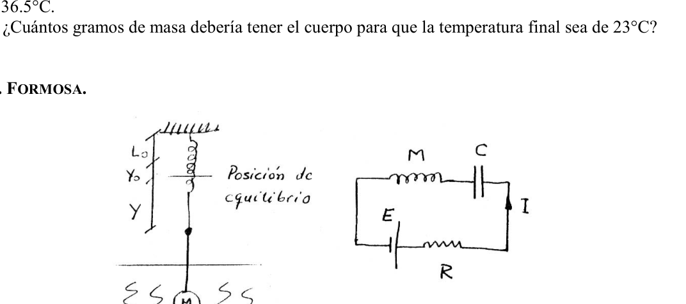
Topic: Oscillations & Waves, Circuits Metodi: Simple Harmonic Motion Analysis, Differential Equations Competenze: Physical Reasoning, Mathematical Modeling Objects: Spring, Capacitor, Inductor Fonte: Testo (PDF) — p.2
71. Formosa - Analogia sistema meccanico e elettrico
-
- È bellissimo.
Osservando la figura, una sfera di massa M sospesa in un liquido viscoso, attraverso una molla espiral, la lunghezza della molla quando M è a riposo è L0, l’allungamento della molla quando M è a riposo è Y0, e il spostamento rispetto alla posizione di equilibrio è Y’. Supponiamo che l’effetto causato dal liquido sia un’aumento della resistenza viscosa , a) il coefficiente di rottura. dimostrare che il sistema meccanico è equivalente al sistema elettrico della figura data. (Figura) Nota: l’energia cinetica del sistema meccanico è: Vy la velocità all’asse e K: costante della primavera. L’energia cinetica meccanica del sistema elettrico è:
Topic: Oscillations & Waves, Circuits Metodi: Simple Harmonic Motion Analysis, Differential Equations Competenze: Physical Reasoning, Mathematical Modeling Objects: Spring, Capacitor, Inductor Fonte: Testo (PDF) — p.2
71. Formosa - Mechanical and electrical system analogy
- That’s great.
Looking at the figure, a sphere of mass M suspended in a viscous liquid, by means of a spiral spring, the length of the spring when M is at rest is L0, the elongation of the spring when M is at rest is Y0, and the displacement with respect to the equilibrium position is Y’. Assume that the only effect caused by the liquid is viscous resistance being a) the coefficient of friction. Demonstrate that the mechanical system is equivalent to the electrical system in the given figure. (Figure) Note: the kinetic energy of the mechanical system is: Vy the speed according to the axis and K: constant of spring. The mechanical kinetic energy of the electrical system is:
Topic: Oscillations & Waves, Circuits Metodi: Simple Harmonic Motion Analysis, Differential Equations Competenze: Physical Reasoning, Mathematical Modeling Objects: Spring, Capacitor, Inductor Fonte: Testo (PDF) — p.2
72. Capital Federal - Resistencia electrica calienta agua
- Capital Federal.
Una resistencia electrica de masa = 20 gr calienta 10 kgr de agua hasta el punto de ebullicion en un tiempo de 5 minutos. La capacidad calorica de la resistencia es 6 veces mayor que la del agua. Si se conecta la resistencia sin agua, se dana en 9 segundos. Cual es la temperatura de fusion de este metal? Considere la temperatura inicial en ambas situaciones de C.
Topic: Thermodynamics, Circuits Metodi: First Law of Thermodynamics Competenze: Physical Reasoning Objects: Resistor Fonte: Testo (PDF) — p.2
72. Capitale federale - Resistenza elettrica a caldo acqua
- Capitale federale.
Una resistenza elettrica di massa = 20 gr calda 10 kg di acqua fino al punto di ebollizione in 5 minuti. La resistenza ha una capacità calorica 6 volte superiore a quella dell’acqua. Se si accende la resistenza senza acqua, si danna in 9 secondi. Qual è la temperatura di fusione di questo metallo? Considerare la temperatura iniziale in entrambe le situazioni di C.
Topic: Thermodynamics, Circuits Metodi: First Law of Thermodynamics Competenze: Physical Reasoning Objects: Resistor Fonte: Testo (PDF) — p.2
72. Federal Capital - Electrical resistance to water heat
- Federal capital.
An electrical resistance of mass = 20 grams heats 10 kg of water to boiling point in 5 minutes. The heat capacity of the resistance is 6 times greater than that of water. If you connect the resistor without water, it’ll be damaged in 9 seconds. What is the melting temperature of this metal? Consider the initial temperature in both situations of C.
Topic: Thermodynamics, Circuits Metodi: First Law of Thermodynamics Competenze: Physical Reasoning Objects: Resistor Fonte: Testo (PDF) — p.2
73. Ledesma, Jujuy - Calorimetro con hielo y bloque metalico
- Ledesma, Jujuy.
Un calorimetro contiene 500 gramos de agua y 300 gramos de hielo, todo ello a temperatura de C. Se toma un bloque metalico de un horno, cuya temperatura es de C y se deja caer rapidamente dentro del calorimetro, resultando que se produce exactamente la fusion de todo el hielo. Cual seria la temperatura final del sistema si hubiera sido doble la masa del bloque? Despreciense las perdidas calorificas del calorimetro, asi como su capacidad calorifica.
Topic: Thermodynamics Metodi: First Law of Thermodynamics Competenze: Physical Reasoning Objects: Calorimeter Fonte: Testo (PDF) — p.2
73. Ledesma, Jujuy - Calorimetro con blocco metallico e ghiaccio
- Ledesma, Jujuy.
Un calometro contiene 500 grammi di acqua e 300 grammi di ghiaccio, a temperatura di C. Si prende un blocco metallico da un forno, la cui temperatura è di C e si lascia cadere rapidamente all’interno del calometro, risultando così che si verifica esattamente la fusione di tutto il ghiaccio. Qual sarebbe la temperatura finale del sistema se fosse stato doppio il massa del blocco? Sprezzate le perdite calorifiche del caloriometro, così come la sua capacità calorifica.
Topic: Thermodynamics Metodi: First Law of Thermodynamics Competenze: Physical Reasoning Objects: Calorimeter Fonte: Testo (PDF) — p.2
73. Ledesma, Jujuy - Calorimetry with ice and metal block
- I’m going to take you, Jujuy.
A calorimeter contains 500 grams of water and 300 grams of ice, all at C. A metal block is taken from an oven, the temperature of which is C and is quickly dropped into the calorimeter, resulting in the exact melting of all the ice. What would the final temperature of the system be if the mass of the block had been doubled? Disregard the calorimeter’s heat losses, as well as its heat capacity.
Topic: Thermodynamics Metodi: First Law of Thermodynamics Competenze: Physical Reasoning Objects: Calorimeter Fonte: Testo (PDF) — p.2
74. Neuquen (experimental) - Calor especifico de sustancia
- Neuquen (experimental).
OBJETO: Determinar experimentalmente el calor especifico de una sustancia. MATERIALES: Recipiente de telgopor con tapa Un cuerpo de masa conocida Dos vasos de precipitados Mechero Probeta graduada Termometro
- Arme un dispositivo como indica la figura. (figura)
- Calcule analiticamente el valor del calor especifico del material.
- Describa de manera clara el procedimiento escogido (marco teorico y experimental) y evalue el error del resultado, teninedo en cuenta que el cal/g.C
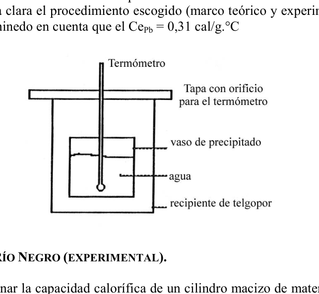
Topic: Thermodynamics Metodi: Experimental Data Analysis, First Law of Thermodynamics, Error Propagation Competenze: Physical Reasoning, Experimental Data Analysis Objects: Calorimeter Fonte: Testo (PDF) — p.2
74. Neuquen (esperimento) - Calore specifico della sostanza
- Neuquen (esperimento).
Oggetto: Determinare sperimentalmente il calore specifico di una sostanza. I materiali: Telagopor con copertura Un corpo di massa conosciuto Due bicchieri di precipitati Mechero Provetta graduata Termodinamica
- Armati un dispositivo come indicato nella figura. (Figura)
- Calcola analiticamente il valore specifico del materiale.
- Descrive chiaramente la procedura scelta (quadro teorico ed sperimentale) e valuta l’errore del risultato, tenendo conto che il cal/g.C
Topic: Thermodynamics Metodi: Experimental Data Analysis, First Law of Thermodynamics, Error Propagation Competenze: Physical Reasoning, Experimental Data Analysis Objects: Calorimeter Fonte: Testo (PDF) — p.2
74. Neukene (experimental) - Specific heat of substance
- The Commission shall adopt implementing acts in accordance with Article 21 of this Regulation.
OBJECTIVE: To experimentally determine the specific heat of a substance. The following is the list of the products: Other, of a kind used for the manufacture of textile materials A known mass body Two cups of precipitate The Mechero Graduated test Other heaters
- Armed with a device as shown in the figure. (Figure)
- Calculate the specific heat value of the material analytically.
- Clearly describe the procedure chosen (theoretical and experimental framework) and evaluate the error of the result, taking into account that the cal/g.C
Topic: Thermodynamics Metodi: Experimental Data Analysis, First Law of Thermodynamics, Error Propagation Competenze: Physical Reasoning, Experimental Data Analysis Objects: Calorimeter Fonte: Testo (PDF) — p.2
75. Cinco Saltos, Rio Negro (experimental) - Capacidad calorifica de cilindro
- Cinco Saltos, Rio Negro (experimental).
Se trata de determinar la capacidad calorifica de un cilindro macizo de material conocido. Para ello se dispone de un calorimetro, un calentador, termometro y balanza. Describir de manera clara el procedimiento (parte teorica y parte practica) y evaluar el error del resultado.
Topic: Thermodynamics Metodi: Experimental Data Analysis, First Law of Thermodynamics, Error Propagation Competenze: Physical Reasoning, Experimental Data Analysis Objects: Calorimeter, Cylinder Fonte: Testo (PDF) — p.2
75. Cinco Salto, Rio Negro (esperimento) - Capacità calorificante del cilindro
- Cinco Salti, Rio Negro (esperimento).
Si tratta di determinare la capacità di calorificazione di un cilindro massiccio di materiale conosciuto. Per questo si dispone di caloriometro, riscaldatore, termometro e bilancia. Descrivere chiaramente la procedura (parte teorica e parte pratica) e valutare l’errore del risultato.
Topic: Thermodynamics Metodi: Experimental Data Analysis, First Law of Thermodynamics, Error Propagation Competenze: Physical Reasoning, Experimental Data Analysis Objects: Calorimeter, Cylinder Fonte: Testo (PDF) — p.2
75. Five leaps, Rio Negro (experimental) - Heating capacity of cylinder
- Five jumps, Rio Negro (experimental)
It is a matter of determining the heating capacity of a solid cylinder of known material. For this purpose, a calorimeter, a heater, a thermometer and a scale are provided. Describe the procedure clearly (theoretical and practical) and assess the error of the result.
Topic: Thermodynamics Metodi: Experimental Data Analysis, First Law of Thermodynamics, Error Propagation Competenze: Physical Reasoning, Experimental Data Analysis Objects: Calorimeter, Cylinder Fonte: Testo (PDF) — p.2
76. San Nicolas, Buenos Aires - Calorimetro con arandela de Fe y dilatacion
- San Nicolas, Buenos Aires.
En un calorimetro hay 250(g) de agua a 17 grados celcius. En el se introducen 10(g) de Cu, Ce = 0.093(cal/g.C) a 80 grados, y una arandela de Fe de altura 1(cm), diametro interior 0.77(cm) y diametro exterior 1(cm), Ce Fe = 0.113(cal/g.C). La temperatura de equilibrio del sistema es de 17.67 grados. Calcular el diametro interior de la arandela antes de introducirse en el calorimetro. Datos: Coeficiente de dilatacion lineal del Fe = C) Densidad del Fe =
Topic: Thermodynamics Metodi: First Law of Thermodynamics Competenze: Physical Reasoning Objects: Calorimeter Fonte: Testo (PDF) — p.2
76. San Nicolas, Buenos Aires - Calorimetro con arandela di fede e dilatazione
- San Nicolas, Buenos Aires.
In un calometro ci sono 250 g di acqua a 17 gradi Celsius. In questo caso, si inserisce 10(g) di Cu, Ce = 0.093(cal/g.C) a 80 gradi, e una farina di Fe di altezza 1(cm), diametro interno 0.77(cm) e diametro esterno 1(cm), Ce Fe = 0.113(cal/g.C. La temperatura di equilibrio del sistema è di 17,67 gradi. Calcolare il diametro interno della catena prima di entrare nel caloriometro. Dati: Coefficiente di dilatazione lineare della Fea = C) Densità della Fede =
Topic: Thermodynamics Metodi: First Law of Thermodynamics Competenze: Physical Reasoning Objects: Calorimeter Fonte: Testo (PDF) — p.2
76. San Nicolas, Buenos Aires - Calorimetry with faith and dilation arendela
- San Nicolas, from Buenos Aires.
In a calorimeter there are 250 g of water at 17 degrees Celsius. In the Cu 10(g) is inserted, Ce = 0.093(cal/g.C) at 80 degrees, and a Fe arendela of height 1(cm), inner diameter 0.77(cm) and outer diameter 1(cm), Ce Fe = 0.113(cal/g.C). The system’s equilibrium temperature is 17.67 degrees. Calculate the inner diameter of the clamp before entering the calorimeter. Datos: Coeficiente de dilatacion lineal del Fe = C) The density of the Fe =
Topic: Thermodynamics Metodi: First Law of Thermodynamics Competenze: Physical Reasoning Objects: Calorimeter Fonte: Testo (PDF) — p.2
77. Capital Federal - Mezcla hielo-agua casos
- Capital Federal.
En un recipiente adiabatico se mezcla una masa m1 de hielo a C con una masa m2 de agua a C. Calcular la relacion m1/m2 para cada uno de los casos posibles en que se pueda obtener el equilibrio termico: a. Todo hielo a menos de C b. Todo hielo a C c. Parte liquido y parte hielo d. Todo liquido a C e. Todo liquido a mas de C Se desprecian las perdidas de calor. c1 Calor especifico del liquido = 1 cal/(g.C) ch Calor especifico del hielo = 0.5 cal/(g.C) Lf Calor latente de fusion = 80 cal/g
Topic: Thermodynamics Metodi: First Law of Thermodynamics Competenze: Physical Reasoning Objects: Calorimeter Fonte: Testo (PDF) — p.2
77. Capitale federale - Miscela ghiaccio-acqua casi
- Capitale federale.
In un recipiente adiabatico si mescola una massa m1 di ghiaccio a C con una massa m2 di acqua a C. Calcolare la relazione m1/m2 per ogni possibile caso in cui si possa ottenere il calore termico: a. Tutti i ghiacci meno di C b. Tutto il ghiaccio a C c. Parte liquida e parte ghiacciata d. Tutti i liquidi a C e. Tutti i liquidi di C I perditi di calore sono disprezzati. c1 Calore specifico del liquido = 1 cal/(g.C) Ch Calore specifico del ghiaccio = 0,5 cal/(g.C) Lf Calore latente di fusione = 80 cal/g
Topic: Thermodynamics Metodi: First Law of Thermodynamics Competenze: Physical Reasoning Objects: Calorimeter Fonte: Testo (PDF) — p.2
77. Federal Capital - Ice-water mix cases
- Federal capital.
In an adiabatic container a m1 mass of ice at C is mixed with a m2 mass of water at C. Calculate the relation m1/m2 for each possible case in which the thermal balance can be obtained: a. All ice less than C b. All ice to C c. Part liquid and part ice d. All liquid at C e. All liquid at C They despise heat losses. c1 Calor especifico del liquido = 1 cal/(g.C) Ch Specific heat of ice = 0.5 cal/(g.C) Lf Latent fusion heat = 80 cal/g
Topic: Thermodynamics Metodi: First Law of Thermodynamics Competenze: Physical Reasoning Objects: Calorimeter Fonte: Testo (PDF) — p.2
78. Ibarreta, Formosa - Maquina termica rendimiento
- Ibarreta, Formosa.
Conviene reemplazar una maquina termica de rendimiento 50% por otra que funciona entre dos focos a C y C de temperatura respectivamente.
Topic: Thermodynamics Metodi: Thermodynamic Cycle Analysis Competenze: Physical Reasoning Objects: Heat Engine Fonte: Testo (PDF) — p.2
78. Ibarreta, Formosa - Macchina termico a rendimento
- Ibarreta, Formosa.
È opportuno sostituire una macchina termico a rendimento del 50% con un’altra che funzioni tra due foci a C e C di temperatura rispettivamente.
Topic: Thermodynamics Metodi: Thermodynamic Cycle Analysis Competenze: Physical Reasoning Objects: Heat Engine Fonte: Testo (PDF) — p.2
**78. The following table shows the results of the calculations:
- Ibarreta, the formosa.
A heat engine with a 50% efficiency should be replaced by a heat engine operating between two hot flashes at C and C respectively.
Topic: Thermodynamics Metodi: Thermodynamic Cycle Analysis Competenze: Physical Reasoning Objects: Heat Engine Fonte: Testo (PDF) — p.2
79. Lomas de Zamora, Buenos Aires - Circuito con amperimetro y voltimetro
- Lomas de Zamora, Buenos Aires.
Cual sera la indicacion de y cuando: (figura, A = 2 A con interruptor cerrado; resistencias , , , ) a) el interruptor esta abierto b) el interruptor esta cerrado
Topic: Circuits Metodi: Kirchhoff’s Laws, Equivalent Circuit Reduction Competenze: Physical Reasoning Objects: Resistor, Switch, Galvanometer Fonte: Testo (PDF) — p.2
79. Lomas de Zamora, Buenos Aires - Circuito con amperometro e voltometro
- Lomas di Zamora, Buenos Aires.
Qual è l’indicazione di e quando: (figura, A = 2 A con interruttore chiuso; resistenze , , , ) a) il interruttore è aperto b) il interruttore è chiuso
Topic: Circuits Metodi: Kirchhoff’s Laws, Equivalent Circuit Reduction Competenze: Physical Reasoning Objects: Resistor, Switch, Galvanometer Fonte: Testo (PDF) — p.2
**79. Lomas de Zamora, Buenos Aires - Circuit with ampere and voltmeter
- Lomas from Zamora, Buenos Aires.
What will be the indication of and when: (Figure, A = 2 A with closed switch; resistances , , , ) (a) the switch is open (b) the switch is closed
Topic: Circuits Metodi: Kirchhoff’s Laws, Equivalent Circuit Reduction Competenze: Physical Reasoning Objects: Resistor, Switch, Galvanometer Fonte: Testo (PDF) — p.2
80. Mar del Plata, Buenos Aires - Cargas en triangulo equilatero
- Mar del Plata, Buenos Aires.
En los vertices de un triangulo equilatero de 60 cm de lado se encuentran cargas electricas iguales, Coul. Que carga electrica se debe colocar en el centro del triangulo para que la fuerza de origen electrico sobre cada vertice sea nula? Es nula la fuerza electrica sobre la carga central? por que?
Topic: Electrostatics Metodi: Coulomb’s Law, Superposition Principle, Symmetry Argument Competenze: Physical Reasoning Objects: Point Charge Fonte: Testo (PDF) — p.2
80. Mar del Plata, Buenos Aires - Carichi in triangolo equile
- Mar del Plata, Buenos Aires.
Le cime di un triangolo equile di 60 cm laterale si trovano uguali carichi elettrici, Coul. Quale carica elettrica deve essere posta al centro del triangolo per rendere la forza di origine elettrica su ogni vertice nulla? La forza elettrica sulla carica centrale è nulla? - Perché?
Topic: Electrostatics Metodi: Coulomb’s Law, Superposition Principle, Symmetry Argument Competenze: Physical Reasoning Objects: Point Charge Fonte: Testo (PDF) — p.2
**80. Mar del Plata, Buenos Aires - Loads in an equilateral triangle
- The city of Mar del Plata, Buenos Aires.
The vertices of an equilateral triangle of 60 cm on the side are equal electric charges, Coul. What electric charge must be placed in the center of the triangle so that the electrical origin force on each vertex is zero? Is the electrical force on the center charge zero? Why? Why?
Topic: Electrostatics Metodi: Coulomb’s Law, Superposition Principle, Symmetry Argument Competenze: Physical Reasoning Objects: Point Charge Fonte: Testo (PDF) — p.2
81. Navarro, Buenos Aires - Corrientes por cada resistencia
- Navarro, Buenos Aires.
En el esquema de la figura establecer valores de las corrientes que circulan por cada resistencia. (figura, fuentes 10V y 5V; resistencias , , , , ; corrientes , , )
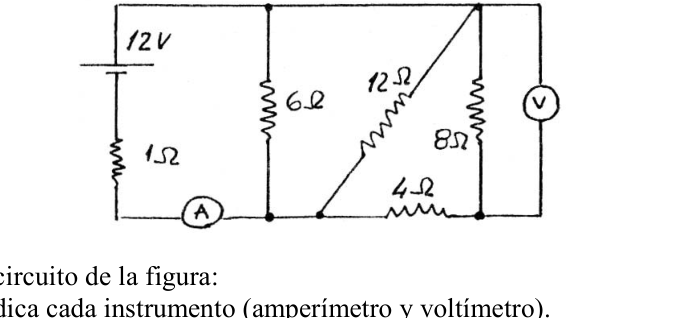
Topic: Circuits Metodi: Kirchhoff’s Laws Competenze: Physical Reasoning Objects: Resistor, Battery Fonte: Testo (PDF) — p.2
81. Navarro, Buenos Aires - Correnti per ogni resistenza
- Navarro, Buenos Aires.
Nel schema della figura, stabilire valori delle correnti che circolano per ogni resistenza. (Figura, fonti 10V e 5V; resistenze , , , , ; correnti , , )
Topic: Circuits Metodi: Kirchhoff’s Laws Competenze: Physical Reasoning Objects: Resistor, Battery Fonte: Testo (PDF) — p.2
**81. Navarro, Buenos Aires - Current for each resistance
- I’m from Navarro, Buenos Aires.
In the diagram of the figure set values of the currents circulating for each resistance. (Figure, 10V and 5V sources; resistances , , , , ; currents , , )
Topic: Circuits Metodi: Kirchhoff’s Laws Competenze: Physical Reasoning Objects: Resistor, Battery Fonte: Testo (PDF) — p.2
82. Salta - Signo de cargas Q1 y Q2
- Salta.
Teniendo positiva, la fuerza neta que actua sobre la misma es nula. Que signo deberan tener y ? (figura)
Topic: Electrostatics Metodi: Coulomb’s Law, Superposition Principle Competenze: Physical Reasoning Objects: Point Charge Fonte: Testo (PDF) — p.2
82. Salto - Segnale di carica Q1 e Q2
- Salta. Salta.
Se il è positivo, la forza netta che agisce su di esso è nulla. Qual è il segno che devono avere e ? (Figura)
Topic: Electrostatics Metodi: Coulomb’s Law, Superposition Principle Competenze: Physical Reasoning Objects: Point Charge Fonte: Testo (PDF) — p.2
82. Jump - Load sign Q1 and Q2
- Jump in.
If is positive, the net force acting on it is zero. What sign should and have? (Figure)
Topic: Electrostatics Metodi: Coulomb’s Law, Superposition Principle Competenze: Physical Reasoning Objects: Point Charge Fonte: Testo (PDF) — p.2
83. Mar del Plata, Buenos Aires - Circuito con amperimetro y voltimetro
- Mar del Plata, Buenos Aires.
Calcule para el circuito de la figura: (figura, fuente 12V; resistencias , , , , ; amperimetro A y voltimetro V) A)- El valor que indica cada instrumento (amperimetro y voltimetro). A)- La potencia desarrollada sobre la resistencia de .
Topic: Circuits Metodi: Kirchhoff’s Laws, Equivalent Circuit Reduction Competenze: Physical Reasoning Objects: Resistor, Battery, Galvanometer Fonte: Testo (PDF) — p.2
83. Mar del Plata, Buenos Aires - Circuito con amperometro e voltometro
- Mar del Plata, Buenos Aires.
Calcolare per il circuito della figura: (figura, sorgente 12V; resistenze , , , , ; amperometro A e voltometro V) A) Il valore indicato da ogni strumento (amperiometro e voltímetro). A) - Potenza sviluppata sulla resistenza di .
Topic: Circuits Metodi: Kirchhoff’s Laws, Equivalent Circuit Reduction Competenze: Physical Reasoning Objects: Resistor, Battery, Galvanometer Fonte: Testo (PDF) — p.2
83. Mar del Plata, Buenos Aires - Circuit with ampere and voltmeter
- The city of Mar del Plata, Buenos Aires.
Calculate for the circuit of the figure: (figure, 12V source; resistance , , , , ; amperometer A and voltmeter V) (a) The value indicated by each instrument (ampere and voltmeter). A) - The power developed over the resistance of .
Topic: Circuits Metodi: Kirchhoff’s Laws, Equivalent Circuit Reduction Competenze: Physical Reasoning Objects: Resistor, Battery, Galvanometer Fonte: Testo (PDF) — p.2
84. Capital Federal - Campo electrico en triangulo equilatero
- Capital Federal.
Calcular la intensidad del campo electrico en el punto A del triangulo equilatero de la figura. (figura) Que fuerza actuaria sobre una carga de Coul. colocada en ese punto? Cuanto deberia valer para que el campo electrico tenga la direccion del lado que une con ? Cual el de la fuerza que actuaria sobre q colocada en A en ese caso? Coul; Coul; Coul; m; angulo en A .
Topic: Electrostatics Metodi: Coulomb’s Law, Superposition Principle, Vector Decomposition Competenze: Physical Reasoning Objects: Point Charge Fonte: Testo (PDF) — p.2
84. Capitale federale - Campo elettrico in triangolo equile
- Capitale federale.
Calcolare l’intensità del campo elettrico al punto A del triangolo equile della figura. (Figura) Che forza attuale su un carico di Coul. - Si’, e’ posto in quel punto? Quanto dovrebbe valere per rendere il campo elettrico con il lato che collega a ? Qual è la forza che agisce su q posto su A in quel caso? Coul; Coul; Coul; m; angolo in A .
Topic: Electrostatics Metodi: Coulomb’s Law, Superposition Principle, Vector Decomposition Competenze: Physical Reasoning Objects: Point Charge Fonte: Testo (PDF) — p.2
84. Federal Capital - Electric field in equilateral triangle
- Federal capital.
Calculate the electric field intensity at point A of the equilateral triangle in the figure. (Figure) What actuarial force on a load of Coul. placed at that point? What should be worth for the electric field to have the address of the side joining to ? Which of the forces would act on q placed on A in that case? Coul; Coul; Coul; m; angulo en A .
Topic: Electrostatics Metodi: Coulomb’s Law, Superposition Principle, Vector Decomposition Competenze: Physical Reasoning Objects: Point Charge Fonte: Testo (PDF) — p.2
85. Capital Federal - Carga en equilibrio sobre eje
- Capital Federal.
Calcular el valor y el signo de la carga para que la carga quede en equilibrio. Hay algun otro punto del eje en el cual el campo electrico se anula con la incluida en el sistema? nC; C; (figura, a 3 cm de , a 8 cm de )
Topic: Electrostatics Metodi: Coulomb’s Law, Superposition Principle Competenze: Physical Reasoning Objects: Point Charge Fonte: Testo (PDF) — p.2
85. Capitale federale - Carico in equilibrio su asse
- Capitale federale.
Calcolare il valore e il segno della carica per mantenere in equilibrio la carica . C’è un altro punto dell’asse in cui il campo elettrico viene annullato con la inserita nel sistema? nC; C; (figura, a 3 cm da , a 8 cm da )
Topic: Electrostatics Metodi: Coulomb’s Law, Superposition Principle Competenze: Physical Reasoning Objects: Point Charge Fonte: Testo (PDF) — p.2
85. Capital Federal - Carga en equilibrio sobre eje
- Federal capital.
Calculate the value and sign of the load so that the load is in balance. Is there any other point on the shaft where the electric field is cancelled with the included in the system? nC; C; (figura, a 3 cm de , a 8 cm de )
Topic: Electrostatics Metodi: Coulomb’s Law, Superposition Principle Competenze: Physical Reasoning Objects: Point Charge Fonte: Testo (PDF) — p.2
86. Goya, Corrientes - Diferencia de potencial
- Goya, Corrientes.
La diferencia de potencial entre dos puntos de un campo electrico separados uno del otro 750 cm, es de 800 voltios, y se ha realizado un trabajo electrico de 1.5 Kgm para transportar una carga electrica. Indicar la intensidad del campo en ese punto.
Topic: Electrostatics Metodi: Electric Potential Method Competenze: Physical Reasoning Objects: Point Charge Fonte: Testo (PDF) — p.2
86. Goi, correnti - differenza di potenziale
- Goya, Corrientes.
La differenza di potenziale tra due punti di un campo elettrico separati l’uno dall’altro 750 cm, è di 800 volt, e è stato effettuato un lavoro elettrico di 1.5 Kgm per trasportare una carica elettrica. Indicare l’intensità del campo a quel punto.
Topic: Electrostatics Metodi: Electric Potential Method Competenze: Physical Reasoning Objects: Point Charge Fonte: Testo (PDF) — p.2
**86. The following is the list of the relevant technical specifications for the type of equipment:
- Goya, currents.
The potential difference between two points in an electric field separated by 750 cm from each other is 800 volts, and an electrical work of 1.5 Kgm has been carried out to carry an electrical load. Indicate the intensity of the field at that point.
Topic: Electrostatics Metodi: Electric Potential Method Competenze: Physical Reasoning Objects: Point Charge Fonte: Testo (PDF) — p.2
87. Salta - Particula cargada en campo electrico
- Salta.
Encontrar las ecuaciones horarias y de trayectoria para una particula de masa m y carga q que se introduce en una region donde hay un campo electrico tal como lo dispone la figura. (figura, velocidad con angulo , campo entre placas + y -)
Topic: Electrostatics Metodi: Coulomb’s Law, Kinematic Equations, Vector Decomposition Competenze: Physical Reasoning Objects: Point Charge Fonte: Testo (PDF) — p.2
87. Salto - Particella carica in campo elettrico
- Salta. Salta.
Trovare le equazioni orarie e di percorso per una particella di massa m e carica q che si inserisce in una regione in cui c’è un campo elettrico come disegnato nella figura. (figura, velocità con angolo , campo tra le schede + e -)
Topic: Electrostatics Metodi: Coulomb’s Law, Kinematic Equations, Vector Decomposition Competenze: Physical Reasoning Objects: Point Charge Fonte: Testo (PDF) — p.2
87. Jump - Particles charged in an electric field
- Jump in.
Find the time and trajectory equations for a particle of mass m and charge q that is introduced into a region where there is an electric field as set out in the figure. (Figure, speed with angle , field between plates + and -)
Topic: Electrostatics Metodi: Coulomb’s Law, Kinematic Equations, Vector Decomposition Competenze: Physical Reasoning Objects: Point Charge Fonte: Testo (PDF) — p.2
88. General Galarza, Entre Rios - Resistencia de alambre
- General Galarza, Entre Rios.
Supongamos un circuito formado por una pila cuya fuerza electromotriz (FEM) es de 3 voltios y un alambre de 6 ohmios de resistencia. Calcular la intensidad que circula por el circuito. Si al sustituir el alambre por otro del mismo material e igual seccion, se observa que la intensidad de la corriente es de 0.25 amperios, hallar la resistencia del nuevo circuito e indicar cual es la longitud del alambre con respecto al primero.
Topic: Circuits Metodi: Kirchhoff’s Laws Competenze: Physical Reasoning Objects: Wire, Battery Fonte: Testo (PDF) — p.2
88. Generale Galarza, Tra i fiumi - Resistenza del filo
- Generale Galarza, Tra i Rios.
Supponiamo un circuito costituito da una pila la cui forza elettromotrice (FEM) è di 3 volt e un filo di resistenza di 6 ohmi. Calcolare l’intensità che circola nel circuito. Se sostituendo il filo con un altro della stessa materia e sezione, si osserva che l’intensità di corrente è di 0,25 amperi, si trova la resistenza del nuovo circuito e si indica quale è la lunghezza del filo rispetto al primo.
Topic: Circuits Metodi: Kirchhoff’s Laws Competenze: Physical Reasoning Objects: Wire, Battery Fonte: Testo (PDF) — p.2
**88. General Galarza, Between Rios - Wire resistance
- General Galarza, between rivers.
Suppose a circuit is made up of a battery with an electromotive force (EMF) of 3 volts and a wire of 6 ohms of resistance. Calculate the intensity circulating through the circuit. If the wire is replaced by another of the same material and section, the current intensity is observed to be 0.25 amps, the resistance of the new circuit is found and the length of the wire is indicated with respect to the first.
Topic: Circuits Metodi: Kirchhoff’s Laws Competenze: Physical Reasoning Objects: Wire, Battery Fonte: Testo (PDF) — p.2
89. Salta - Dos cargas puntuales
- Salta.
Dos cargas electricas puntuales y se encuentran en el vacio a una distancia d y la fuerza de interaccion tiene modulo F. Si se reemplaza por otra carga puntual que es igual a y la distancia a 2 d. Cual sera el modulo de la nueva fuerza de interaccion?
Topic: Electrostatics Metodi: Coulomb’s Law Competenze: Physical Reasoning Objects: Point Charge Fonte: Testo (PDF) — p.2
89. Salto - Due carichi puntati
- Salta. Salta.
Due cariche elettriche puntate e si trovano nel vuoto a una distanza d e la forza di interazione ha modulo F. Se viene sostituito da un altro carico punteggiato che è uguale a e la distanza a 2 d. Qual sarà il modulo della nuova forza di interazione?
Topic: Electrostatics Metodi: Coulomb’s Law Competenze: Physical Reasoning Objects: Point Charge Fonte: Testo (PDF) — p.2
89. Jump - Two point loads
- Jump in.
Two point electric charges and are in the vacuum at a distance d and the force of interaction is modulo F. If replaced by another point load equal to and the distance to 2 d. What will be the module of the new interaction force?
Topic: Electrostatics Metodi: Coulomb’s Law Competenze: Physical Reasoning Objects: Point Charge Fonte: Testo (PDF) — p.2
90. General Galarza, Entre Rios (experimental) - Principio del motor electrico
- General Galarza, Entre Rios (experimental).
Objeto de la experiencia: Verificar el principio del motor electrico Materiales a utilizar: Un trozo de madera (15 cm x 15 cm), hojas de fleje, cable conductor, cinta aislante, clavos, martillo, alambre fino (10 cm), pilas de 1.5V. Procedimiento: a) Construccion de bobinado. b) Construccion de rotor. c) Armado de motor. d) Verificacion del principio del motor electrico.
Topic: Magnetism Metodi: Lorentz Force Analysis, Experimental Data Analysis Competenze: Physical Reasoning, Experimental Data Analysis Objects: Coil, Magnet, Battery Fonte: Testo (PDF) — p.2
90. Generale Galarza, Entre Rios (esperimento) - Principio del motore elettrico
- Generale Galarza, Entre Rios (esperimento).
Obiettivo dell’esperienza: Verificare il principio del motore elettrico Materiali da utilizzare: un pezzo di legno (15 cm x 15 cm), foglie di fleche, cavo conduttore, cinta isolante, chiodi, martello, filo fino (10 cm), batterie di 1,5 V. Procedura: a) costruzione di bobine. b) costruzione del rotore. c) Motoristici. d) Verificazione del principio del motore elettrico.
Topic: Magnetism Metodi: Lorentz Force Analysis, Experimental Data Analysis Competenze: Physical Reasoning, Experimental Data Analysis Objects: Coil, Magnet, Battery Fonte: Testo (PDF) — p.2
90. General Galarza, Entre Rios (experimental) - Principle of the electric motor
- General Galarza, between Rios (experimental).
The purpose of the experiment was to verify the principle of the electric motor. Materials to be used: One piece of wood (15 cm x 15 cm), sheet, conductive cable, insulating tape, nails, hammer, fine wire (10 cm), 1.5V batteries. The manufacturer shall provide the manufacturer with the following information: (b) Rotor construction. (c) Motorized equipment. (d) Verification of the principle of the electric motor.
Topic: Magnetism Metodi: Lorentz Force Analysis, Experimental Data Analysis Competenze: Physical Reasoning, Experimental Data Analysis Objects: Coil, Magnet, Battery Fonte: Testo (PDF) — p.2
91. Cordoba, Capital - Resistencia variable
- Cordoba, Capital.
Se conecta una resistencia R variable a traves de una diferencia de potencial V que permanece constante independientemente de R. Para un valor de la corriente es de 6 Ampere, cuando R aumenta hasta la corriente es de 2 Ampere. Calcular y V.
Topic: Circuits Metodi: Kirchhoff’s Laws Competenze: Physical Reasoning Objects: Resistor Fonte: Testo (PDF) — p.2
91. Cordoba, capitale - Resistenza variabile
- Cordoba, capitale.
Una resistenza R variabile è collegata attraverso una differenza di potenziale V che rimane costante indipendentemente da R. Per un valore di la corrente è di 6 Ampere, quando R aumenta fino a la corrente è di 2 Ampere. Calcolare e V.
Topic: Circuits Metodi: Kirchhoff’s Laws Competenze: Physical Reasoning Objects: Resistor Fonte: Testo (PDF) — p.2
**91. The amount of the loan shall be reported in the following table:
- Cordoba, the capital.
A variable resistance R is connected through a potential difference V that remains constant regardless of R. For a value of the current is 6 Ampere, when R increases to the current is 2 Ampere. Calculate and V.
Topic: Circuits Metodi: Kirchhoff’s Laws Competenze: Physical Reasoning Objects: Resistor Fonte: Testo (PDF) — p.2
92. Salta - Carga rotando con tubo aislante
- Salta.
Se tiene una carga rotando alrededor de otra carga , con un radio m. Si se coloca un tubo como el de la figura, de modo que penetre en el y quede aislada del efecto de , con que velocidad saldra del tubo? (figura) c; c; v; kg.; m
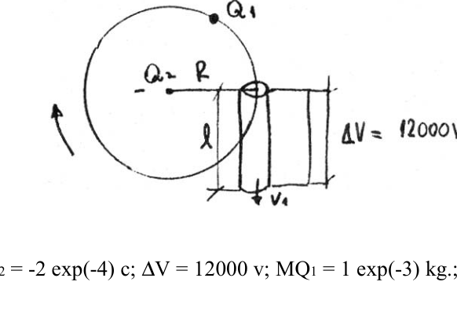
Topic: Electrostatics, Conservation of Energy Metodi: Coulomb’s Law, Electric Potential Method, Energy Conservation Method Competenze: Physical Reasoning Objects: Point Charge Fonte: Testo (PDF) — p.2
92. Salto - carico rotante con tubo isolante
- Salta. Salta.
Si ha una carica che ruota intorno ad un’altra carica , con un raggio m. Se si inserisce un tubo come quello riportato in questa figura, in modo che penetri nel tubo e resti isolato dall’effetto di , a che velocità salti dal tubo? (Figura) c; c; v; kg.; m
Topic: Electrostatics, Conservation of Energy Metodi: Coulomb’s Law, Electric Potential Method, Energy Conservation Method Competenze: Physical Reasoning Objects: Point Charge Fonte: Testo (PDF) — p.2
92. Jump - Load by rotating with insulating tube
- Jump in.
A charge is rotated around another charge , with a radius m. If a tube is placed such as the one in the figure, so that penetrates the tube and is isolated from the effect of , at what speed does slide out of the tube? (Figure) c; c; v; kg.; m
Topic: Electrostatics, Conservation of Energy Metodi: Coulomb’s Law, Electric Potential Method, Energy Conservation Method Competenze: Physical Reasoning Objects: Point Charge Fonte: Testo (PDF) — p.2
93. Mendoza - Resistencia equivalente
- Mendoza.
Calcular la resistencia equivalente a las siguientes asociaciones, si ohm; ohm; ohm; ohm (figura, configuraciones a), b), c))
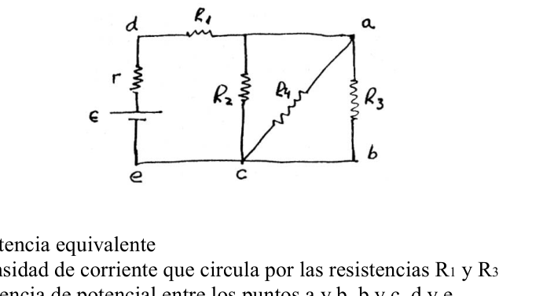
Topic: Circuits Metodi: Equivalent Circuit Reduction Competenze: Physical Reasoning Objects: Resistor Fonte: Testo (PDF) — p.2
93. Mendoza - Resistenza equivalente
- Mendoza.
Calcolare la resistenza equivalente alle seguenti associazioni, se ohm; ohm; ohm; ohm (figura, configurazioni a), b), c))
Topic: Circuits Metodi: Equivalent Circuit Reduction Competenze: Physical Reasoning Objects: Resistor Fonte: Testo (PDF) — p.2
**93. The following is the list of the types of vehicles that are included in the calculation:
- Mendoza, please.
Calculate the resistance equivalent to the following associations, if ohm; ohm; ohm; ohm (figure, configurations a), b), c))
Topic: Circuits Metodi: Equivalent Circuit Reduction Competenze: Physical Reasoning Objects: Resistor Fonte: Testo (PDF) — p.2
94. Neuquen - Circuito con fuente y resistencias
- Neuquen.
Dado el siguiente circuito. (figura) Hallar: a) la resistencia equivalente b) la intensidad de corriente que circula por las resistencias y c) la diferencia de potencial entre los puntos a y b, b y c, d y e. d) la potencia entregada por la fuente V; ; ; ; ;
Topic: Circuits Metodi: Kirchhoff’s Laws, Equivalent Circuit Reduction Competenze: Physical Reasoning Objects: Resistor, Battery Fonte: Testo (PDF) — p.2
94. Neuquen - Circuito con sorgente e resistenze
- Non ci si sente.
Dato il circuito successivo. (Figura) Trovare: a) resistenza equivalente b) l’intensità di corrente che circola attraverso le resistenze e (c) la differenza di potenziale tra i punti a e b, b e c, d e e. d) la potenza fornita dalla fonte V; ; ; ; ;
Topic: Circuits Metodi: Kirchhoff’s Laws, Equivalent Circuit Reduction Competenze: Physical Reasoning Objects: Resistor, Battery Fonte: Testo (PDF) — p.2
94. Neuken - Circuit with source and resistance
-
- I’m not going to.
Given the next circuit. (Figure) Find out: (a) the equivalent strength (b) the current intensity circulating through the resistances and (c) the potential difference between points (a) and (b), (b) and (c), (d) and (e). (d) power delivered by the source V; ; ; ; ;
Topic: Circuits Metodi: Kirchhoff’s Laws, Equivalent Circuit Reduction Competenze: Physical Reasoning Objects: Resistor, Battery Fonte: Testo (PDF) — p.2
95. Salta - Resistencia para horno
- Salta.
Para calentar un horno se requiere construir una resistencia que trabaja a 600 C y entrega una potencia de 2 kW, con una fem de 100V. Se dispone de una alambre de resistividad electrica ohm.cm y una seccion de cm. Calcule la longitud del alambre necesaria, considerando que la resistividad es constante con la temperatura. Si la resistividad cambia con siendo ohm.cm la resistividad a 0 C y el coeficiente de temperatura alfa C. Que potencia se disipara a 600 C con identica fem?
Topic: Circuits Metodi: Kirchhoff’s Laws Competenze: Physical Reasoning Objects: Resistor, Wire Fonte: Testo (PDF) — p.2
95. Salto - resistenza al forno
- Salta. Salta.
Per riscaldare un forno è necessario costruire una resistenza che funziona a 600 C e fornisce una potenza di 2 kW, con una fem di 100 V. Si dispone di un filo di resistenza elettrica ohm.cm e di un sezione cm. Calcolare la lunghezza del filo necessario, considerando che la resistenza è costante con la temperatura. Se la resistività cambia con essendo ohm.cm la resistività a 0 C e il coefficiente di temperatura alfa C. Che potenza si dissipa a 600 C con la stessa fem?
Topic: Circuits Metodi: Kirchhoff’s Laws Competenze: Physical Reasoning Objects: Resistor, Wire Fonte: Testo (PDF) — p.2
**95. The following table shows the results of the calculation of the weight of the product:
- Jump in.
To heat an oven, a resistance is needed to work at 600 C and deliver a power of 2 kW, with a fem of 100 V. A wire of electrical resistance ohm.cm and a section of cm are provided. Calculate the length of the wire required, considering that the resistance is constant with temperature. If the resistance changes with being ohm.cm the resistance to 0 C and the alpha temperature coefficient C. What power dissipates at 600 C with the same fem?
Topic: Circuits Metodi: Kirchhoff’s Laws Competenze: Physical Reasoning Objects: Resistor, Wire Fonte: Testo (PDF) — p.2
96. Neuquen (experimental) - Comprobacion leyes de Kirchhoff
- Neuquen (experimental).
Comprobacion de la leyes de Kirchoff Dado el siguiente circuito: (figura) a) indique y ennumere los nudos b) Como mediria las corrientes entrantes y salientes de los nudos? c) Realice la medicion. Se comprueba la ? d) Realice las mediciones necesarias para comprobar que la sumatoria () de fuerzas electromotrices es igual a la sumatoria de caidas de tension. e) Ennumere las posibles causas de error de las mediciones anteriores.
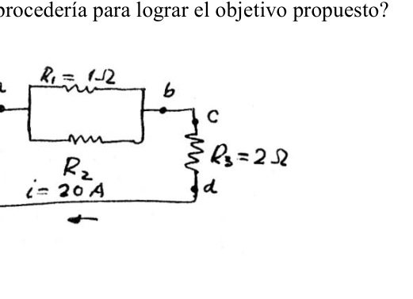
Topic: Circuits Metodi: Kirchhoff’s Laws, Experimental Data Analysis, Error Propagation Competenze: Physical Reasoning, Experimental Data Analysis Objects: Resistor, Battery Fonte: Testo (PDF) — p.2
96. Neuquen (esperimental) - Provare leggi di Kirchhoff
- Neuquen (esperimento).
Verificazione delle leggi di Kirchoff Data la seguente circuito: (figura) a) Indicare e numerezzare i nodi b) Come misurare i correnti entranti e usciti dai nodi? c) Eseguire la misurazione. È verificato il ? d) Eseguire le misure necessarie per verificare che la somma () delle forze elettomotrici è pari alla somma di scosse di tensione. e) Indicare le possibili cause di errore delle misure precedenti.
Topic: Circuits Metodi: Kirchhoff’s Laws, Experimental Data Analysis, Error Propagation Competenze: Physical Reasoning, Experimental Data Analysis Objects: Resistor, Battery Fonte: Testo (PDF) — p.2
**96. The test results of the test are given in the following table:
- The Commission shall adopt implementing acts in accordance with Article 21 of this Regulation.
Testing Kirchoff’s laws Given the following circuit: (Figure) (a) indicate and number the knots (b) How would you measure the incoming and outgoing currents of the knots? (c) Do the measurement. Is the checked? (d) Perform the measurements necessary to verify that the sum () of electromotive forces is equal to the sum of voltage drops. (e) List the possible causes of error in previous measurements.
Topic: Circuits Metodi: Kirchhoff’s Laws, Experimental Data Analysis, Error Propagation Competenze: Physical Reasoning, Experimental Data Analysis Objects: Resistor, Battery Fonte: Testo (PDF) — p.2
97. Parana, Entre Rios - Fuente y tres resistencias
- Parana, Entre Rios.
Una fuente de 56 V esta aplicada a una asociacion de tres resistencias produciendo una corriente de 20A. Calcular el valor de la resistencia . (figura, , , A) b) Dispone de una bateria, de una resistencia o resistor, de un voltimetro y de un amperimetro. Que circuito montaria para determinar el valor de la resistencia? Una vez armado el circuito, como procederia para lograr el objetivo propuesto?
Topic: Circuits Metodi: Kirchhoff’s Laws, Equivalent Circuit Reduction Competenze: Physical Reasoning Objects: Resistor, Battery Fonte: Testo (PDF) — p.2
97. Parana, Tra Fiumi - Fonte e tre resistenze
- Parana, tra i fiumi.
Una fonte di 56 V viene applicata ad un’associazione di tre resistenze producendo un corrente di 20A. Calcolare il valore della resistenza . (Figura, , , A) b) Dispone di una batteria, di una resistenza o di una resistenza, di un voltímetro e di un ampímetro. Che circuito montare per determinare il valore della resistenza? Una volta che il circuito è stato armarto, come si procede per raggiungere l’obiettivo proposto?
Topic: Circuits Metodi: Kirchhoff’s Laws, Equivalent Circuit Reduction Competenze: Physical Reasoning Objects: Resistor, Battery Fonte: Testo (PDF) — p.2
97. Parana, Entre Rios - Fuente y tres resistencias
- Parana, between Rios.
A 56 V source is applied to a three-resistance combination producing a 20A current. Calculate the value of the resistance . (figura, , , A) (b) It has a battery, a resistor or resistor, a voltmeter and an ampere meter. What circuit to determine the value of the resistance? Once the circuit is set up, how would it proceed to achieve the proposed goal?
Topic: Circuits Metodi: Kirchhoff’s Laws, Equivalent Circuit Reduction Competenze: Physical Reasoning Objects: Resistor, Battery Fonte: Testo (PDF) — p.2
98. Cinco Saltos, Rio Negro - Condensadores con dielectrico
- Cinco Saltos, Rio Negro.
Dos condensadores identicos se conectan como muestra la figura. Una capa de dielectrico se introduce entre las placas de uno de los condensadores, mientras la bateria esta conectada. (figura) Describir que ocurre con la carga, la capacitancia, y la diferencia de potencial de cada condensador. Fundamentar la respuesta.
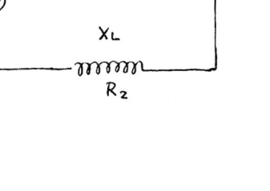
Topic: Electrostatics Metodi: Superposition Principle Competenze: Physical Reasoning Objects: Capacitor, Battery Fonte: Testo (PDF) — p.2
98. Cinco Salto, Rio Negro - Condensatori a dielettrico
- Cinque Salti, Rio Negro.
Due condensatori identici si connettono come mostra la figura. Un strato di dielettrico viene inserito tra le plache di uno dei condensatori, mentre la batteria è collegata. (Figura) Descrivere ciò che accade con la carica, la capacità e la differenza di potenziale di ogni condensatore. Fondare la risposta.
Topic: Electrostatics Metodi: Superposition Principle Competenze: Physical Reasoning Objects: Capacitor, Battery Fonte: Testo (PDF) — p.2
**98. Five jumps, Rio Negro - Condensers with dielectric **
- Five jumps, the black river.
Two identical capacitors are connected as shown in the figure. A layer of dielectric is inserted between the plates of one of the capacitors while the battery is connected. (Figure) Describe what happens with the load, capacity, and potential difference of each capacitor. Basing the answer.
Topic: Electrostatics Metodi: Superposition Principle Competenze: Physical Reasoning Objects: Capacitor, Battery Fonte: Testo (PDF) — p.2
99. Rosario, Santa Fe - Dos esferas conductoras
- Rosario, Santa Fe.
Dos pequenas esferas conductoras identicas que tienen respectivamente cargas y , cuando estan separadas una distancia de 0.30m, se atraen con una fuerza de 1 N. Si se pone las dos esferitas en contacto y se las separa otra vez a la misma distancia, se encuentra con que se repelen con una fuerza de 0.56 N. Calcular el valor de las cargas y .
Topic: Electrostatics Metodi: Coulomb’s Law Competenze: Physical Reasoning Objects: Conducting Sphere Fonte: Testo (PDF) — p.2
99. Rosario, Santa Fe - Due sfere di conduzione
- Rosario, Santa Fe.
Due piccole sfere conducenti identiche che hanno rispettivamente cariche e , quando separate a una distanza di 0,30 m, si attraggono con una forza di 1 N. Se si mettono in contatto le due sfere e si le separa di nuovo alla stessa distanza, si trova che si rivolgono con una forza di 0,56 N. Calcolare il valore dei carichi e .
Topic: Electrostatics Metodi: Coulomb’s Law Competenze: Physical Reasoning Objects: Conducting Sphere Fonte: Testo (PDF) — p.2
**99. The Commission shall adopt delegated acts in accordance with Article 21 of Regulation (EC) No 1272/2009.
- Rosario, Santa Fe.
Two identical small conductive spheres with loads and , when separated by a distance of 0,30 m, are attracted by a force of 1 N. If you put the two spheres in contact and separate them again at the same distance, you find that they repel with a force of 0.56 N. Calculate the value of the loads and .
Topic: Electrostatics Metodi: Coulomb’s Law Competenze: Physical Reasoning Objects: Conducting Sphere Fonte: Testo (PDF) — p.2
100. Salta - Circuito con varias FEM
- Salta.
En el circuito de la fig. son ohm, ohm, ohm, ohm, ohm, ohm, ohm, V, V, V. Calcule I, diferencia de potencia entre B y F? (figura)
Topic: Circuits Metodi: Kirchhoff’s Laws Competenze: Physical Reasoning Objects: Resistor, Battery Fonte: Testo (PDF) — p.2
100. Salto - Circuito con più FEM
- Salta. Salta.
- Nel circuito della figa. son ohm, ohm, ohm, ohm, ohm, ohm, ohm, V, V, V. Calcola I, differenza di potenza tra B e F? (Figura)
Topic: Circuits Metodi: Kirchhoff’s Laws Competenze: Physical Reasoning Objects: Resistor, Battery Fonte: Testo (PDF) — p.2
100. Jump - Multiple FEM circuit
- Jump in.
In the fig circuit. son ohm, ohm, ohm, ohm, ohm, ohm, ohm, V, V, V. Calculate I, power difference between B and F? (Figure)
Topic: Circuits Metodi: Kirchhoff’s Laws Competenze: Physical Reasoning Objects: Resistor, Battery Fonte: Testo (PDF) — p.2
101. Capital Federal - Circuito serie RLC en alterna
- Capital Federal.
Un circuito serie formado por un condensador de de capacitancia, una resistencia de y una bobina de de resistencia y de inductancia. Calcular: a) La intensidad de la corriente en el circuito. b) La diferencia de potencial o caida de tension en los bornes de cada componente. c) Factor de potencia. d) La potencia absorbida por el circuito. (figura, , , , )
Topic: Circuits Metodi: Kirchhoff’s Laws, Equivalent Circuit Reduction Competenze: Physical Reasoning Objects: Capacitor, Inductor, Resistor Fonte: Testo (PDF) — p.2
101. capitale federale - Circuito serie RLC in alternativa
- Capitale federale.
Un circuito in serie costituito da un condensatore di capacità, una resistenza e una bobina di resistenza e di induttanza. Calcolare: a) L’intensità del corrente nel circuito. b) La differenza di potenziale o di caduta di tensione nei terminali di ciascun componente. c) fattore di potenza. d) Potenza assorbita dal circuito. (Figura, , , , )
Topic: Circuits Metodi: Kirchhoff’s Laws, Equivalent Circuit Reduction Competenze: Physical Reasoning Objects: Capacitor, Inductor, Resistor Fonte: Testo (PDF) — p.2
101. Capital Federal - Circuito serie RLC en alterna
- Federal capital.
A series circuit consisting of a capacitance capacitor, resistance and a resistance coil and inductance . Calculation: (a) The current intensity in the circuit. (b) The difference in potential or voltage drop at the terminals of each component. (c) Power factor. (d) The power absorbed by the circuit. (figura, , , , )
Topic: Circuits Metodi: Kirchhoff’s Laws, Equivalent Circuit Reduction Competenze: Physical Reasoning Objects: Capacitor, Inductor, Resistor Fonte: Testo (PDF) — p.2
102. Gualeguaychu, Entre Rios - Circuito 3 resistencias
- Gualeguaychu, Entre Rios.
En el circuito, calcular la intensidad que circula por cada resistencia, la caida de tension en c/u y la potencia disipada. Datos: [V] [] [] [] (figura)
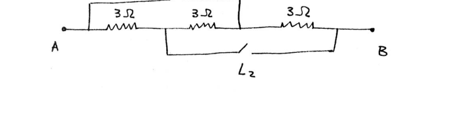
Topic: Circuits Metodi: Kirchhoff’s Laws, Equivalent Circuit Reduction Competenze: Physical Reasoning Objects: Resistor, Battery Fonte: Testo (PDF) — p.2
102. Gualeguaychu, Tra i Fiumi - Circuito 3 resistenze
- Gualeguaychu, tra i fiumi.
Nel circuito, calcolare l’intensità che circola per ogni resistenza, la caduta di tensione a c/u e la potenza dissipata. Data: [V] [] [] [] (figura)
Topic: Circuits Metodi: Kirchhoff’s Laws, Equivalent Circuit Reduction Competenze: Physical Reasoning Objects: Resistor, Battery Fonte: Testo (PDF) — p.2
102. Gualeguaychu, Entre Rios - Circuito 3 resistencias
- Gualeguaychu, between the rivers.
In the circuit, calculate the intensity circulating for each resistance, the voltage drop in c/u and the power dissipated. Datos: [V] [] [] [] (figura)
Topic: Circuits Metodi: Kirchhoff’s Laws, Equivalent Circuit Reduction Competenze: Physical Reasoning Objects: Resistor, Battery Fonte: Testo (PDF) — p.2
103. Mendoza (experimental) - Intensidad de campo electrico con error
- Mendoza (experimental).
Cual es la intensidad del campo electrico en un punto de un campo, sabiendo que si en el se coloca una carga puntual positiva C C, sobre ella se produce una fuerza electrica N N ?
Topic: Electrostatics Metodi: Error Propagation, Experimental Data Analysis Competenze: Physical Reasoning, Experimental Data Analysis Objects: Point Charge Fonte: Testo (PDF) — p.2
103. Mendoza (esperimento) - Intensità di campo elettrico errato
- Mendoza (esperimento).
Qual è l’intensità del campo elettrico in un punto di un campo, sapendo che se si colloca su di esso una carica puntuale positiva C C, su di essa si produce una forza elettrica N N ?
Topic: Electrostatics Metodi: Error Propagation, Experimental Data Analysis Competenze: Physical Reasoning, Experimental Data Analysis Objects: Point Charge Fonte: Testo (PDF) — p.2
103. Mendoza (experimental) - Electric field intensity with error
- Mendoza (experimental).
What is the intensity of the electric field at a point in a field, knowing that if a positive point charge is placed on it C C, an electric force N N is produced over it?
Topic: Electrostatics Metodi: Error Propagation, Experimental Data Analysis Competenze: Physical Reasoning, Experimental Data Analysis Objects: Point Charge Fonte: Testo (PDF) — p.2
104. Neuquen - Resistencia equivalente entre X e Y
- Neuquen.
(figura, red de resistencias: , , , , , , entre los puntos X e Y) a) Calculese la resistencia equivalente del circuito de la figura entre x e y. b) Cual es la diferencia de potencial entre x y a, si la intensidad en la resistencia de es 0.5 A? c) Calcular la energia consumida en la resistencia de durante una hora bajo las condiciones del punto b.
Topic: Circuits Metodi: Equivalent Circuit Reduction, Kirchhoff’s Laws Competenze: Physical Reasoning Objects: Resistor Fonte: Testo (PDF) — p.2
104. Neuquen - Resistenza equivalente tra X e Y
- Non ci si sente.
(Figura, rete di resistenze: , , , , , , tra i punti X e Y) a) Calcolare la resistenza equivalente del circuito della figura tra x e y. b) Qual è la differenza di potenziale tra x e a, se l’intensità nella resistenza di è di 0,5 A? c) Calcolare l’energia consumata nella resistenza per un’ora nelle condizioni di punto b.
Topic: Circuits Metodi: Equivalent Circuit Reduction, Kirchhoff’s Laws Competenze: Physical Reasoning Objects: Resistor Fonte: Testo (PDF) — p.2
104. Neuken - Resistance equivalent between X and Y
-
- I’m not going to.
(Figure, resistance network: , , , , , , between points X and Y) (a) Calculate the equivalent resistance of the circuit in the figure between x and y. (b) What is the potential difference between x and a if the intensity in the resistance of is 0.5 A? (c) Calculate the energy consumed at resistance for one hour under the conditions of point (b).
Topic: Circuits Metodi: Equivalent Circuit Reduction, Kirchhoff’s Laws Competenze: Physical Reasoning Objects: Resistor Fonte: Testo (PDF) — p.2
105. San Juan - Red de resistencias con llaves
- San Juan.
(figura, resistencias de entre A y B con llaves y ) Calcule la resistencia equivalente entre los puntos A y B si: a. Las dos llaves (L1 y L2) estan abiertas. b. Una de las llaves esta cerrada y la otra abierta. c. Las dos llaves estan cerradas.
Topic: Circuits Metodi: Equivalent Circuit Reduction Competenze: Physical Reasoning Objects: Resistor, Switch Fonte: Testo (PDF) — p.2
105. San Giovanni - Rete di resistenza a chiavi
- San Giovanni.
(figura, resistenze tra A e B con chiavi e ) Calcolare la resistenza equivalente tra i punti A e B se: a. Le due chiavi (L1 e L2) sono aperte. b. Una chiave è chiusa e l’altra aperta. c. Le due chiavi sono chiuse.
Topic: Circuits Metodi: Equivalent Circuit Reduction Competenze: Physical Reasoning Objects: Resistor, Switch Fonte: Testo (PDF) — p.2
**105. The following information is provided for in the Annex to Implementing Regulation (EU) No 1308/2013:
- It’s St. John.
(Figure, resistances of between A and B with keys and ) Calculate the equivalent resistance between points A and B if: a. The two keys (L1 and L2) are open. b. One of the keys is locked and the other one is open. c. Both keys are locked.
Topic: Circuits Metodi: Equivalent Circuit Reduction Competenze: Physical Reasoning Objects: Resistor, Switch Fonte: Testo (PDF) — p.2
106. Gualeguaychu, Entre Rios - Resistencias disponibles
- Gualeguaychu, Entre Rios.
Un miercoles a la noche tres estudiantes se quedan trabajando para presentar un circuito al dia siguiente. Necesitan una resistencia de 2 [] y otra de 15[], pero con desesperacion comprueban que solo disponen de nueve (nueve) resistencias de 6[] c/u. Responda, fundamentando (explicando) si consiguen o no resolver el problema. Alcanzan, sobran o faltan, resistencias?
Topic: Circuits Metodi: Equivalent Circuit Reduction Competenze: Physical Reasoning Objects: Resistor Fonte: Testo (PDF) — p.2
106. Gualeguaychu, Entre Rios - Resistenze disponibili
- Gualeguaychu, tra i fiumi.
Un mercoledì sera tre studenti lavorano per presentare un circuito il giorno dopo. Hanno bisogno di una resistenza di 2 [] e di un’altra di 15[], ma con disperazione verificano di avere solo nove (nove) resistenze di 6[] c/u. Rispondi, spiegando se riuscirete o meno a risolvere il problema. Riescono, restano o mancano, resistenze?
Topic: Circuits Metodi: Equivalent Circuit Reduction Competenze: Physical Reasoning Objects: Resistor Fonte: Testo (PDF) — p.2
**106. Gualeguaychu, Between Rivers - Resistance available
- Gualeguaychu, between the rivers.
One Wednesday night three students stay to work to present a circuit the next day. They need a resistance of 2 [] and another of 15[], but they desperately prove that they only have nine (nine) resistances of 6[] c/u. Answer, explaining whether or not they can solve the problem. Are they reaching, surplus or missing, resistance?
Topic: Circuits Metodi: Equivalent Circuit Reduction Competenze: Physical Reasoning Objects: Resistor Fonte: Testo (PDF) — p.2
107. Navarro, Buenos Aires - RLC frecuencia de resonancia
- Navarro, Buenos Aires.
En un circuito R.L.C. mHy y F. Calcular la frecuencia de resonancia y los valores de impedancia total.
Topic: Circuits Metodi: Equivalent Circuit Reduction Competenze: Physical Reasoning Objects: Resistor, Inductor, Capacitor Fonte: Testo (PDF) — p.2
107. Navarro, Buenos Aires - RLC frequenza di risonanza
- Navarro, Buenos Aires.
In un circuito R.L.C. mHy e F. Calcolare la frequenza di risonanza e i valori di impedenza totale.
Topic: Circuits Metodi: Equivalent Circuit Reduction Competenze: Physical Reasoning Objects: Resistor, Inductor, Capacitor Fonte: Testo (PDF) — p.2
107. Navarro, Buenos Aires - RLC frecuencia de resonancia
- I’m from Navarro, Buenos Aires.
On an R.L.C. circuit. mHy y F. Calculate the resonance frequency and total impedance values.
Topic: Circuits Metodi: Equivalent Circuit Reduction Competenze: Physical Reasoning Objects: Resistor, Inductor, Capacitor Fonte: Testo (PDF) — p.2
108. Ibarreta, Formosa - Divisor de corriente y galvanometro
- Ibarreta, Formosa.
a) Una corriente de intensidad I se bifurca en dos ramas en paralelo con resistencias y respectivamente. Deducir las expresiones de las intensidades e en cada una de las ramas. b) Aplicar las formulas anteriores en el siguiente problema: Un galvanometro de resistencia se pone en paralelo con un conductor de resistencia . Que parte de la corriente total I pasa por el instrumento de medida y cual por la derivacion?
Topic: Circuits Metodi: Kirchhoff’s Laws, Equivalent Circuit Reduction Competenze: Physical Reasoning Objects: Resistor, Galvanometer Fonte: Testo (PDF) — p.2
108. Ibarretta, Formosa - Divisor di corrente e galvanometro
- Ibarreta, Formosa.
a) Un corrente di intensità I si forga in due rami paralleli con resistenze e rispettivamente. Detrazione delle espressioni delle intensità e su ciascuna delle branche. b) Applicare le formule precedenti al problema seguente: un galvanometro di resistenza è messo in parallelo con un conduttore di resistenza . Qual è la parte del corrente totale I che passa attraverso l’impianto di misura e quale attraverso la derivazione?
Topic: Circuits Metodi: Kirchhoff’s Laws, Equivalent Circuit Reduction Competenze: Physical Reasoning Objects: Resistor, Galvanometer Fonte: Testo (PDF) — p.2
108. Ibarret, Formosa - Current divider and galvanometer
- Ibarreta, the formosa.
(a) A current of I intensity is forked into two branches parallel to resistances and respectively. Subtract the expressions of the intensities and in each of the branches. (b) Apply the above formulas to the following problem: A resistance galvanometer is placed in parallel with a resistance conductor. What part of the total current I passes through the measuring instrument and which through the drift?
Topic: Circuits Metodi: Kirchhoff’s Laws, Equivalent Circuit Reduction Competenze: Physical Reasoning Objects: Resistor, Galvanometer Fonte: Testo (PDF) — p.2
109. Comodoro Rivadavia, Chubut - Pendulos con masas magneticas
- Comodoro Rivadavia, Chubut.
Se tienen dos pendulos en cuyos extremos estan dos masas magneticas iguales cuya magnitud individual se desea calcular. El peso de cada una es de 98000 dinas, la longitud del hilo es de 20 cm y el angulo formado .
Topic: Magnetism Metodi: Free-Body Diagram, Coulomb’s Law Competenze: Physical Reasoning Objects: Magnet, Pendulum Fonte: Testo (PDF) — p.2
109. Comodoro Rivadavia, Chubut - Penduli a massa magnetica
- Comodoro Rivadavia, Chubut.
Si hanno due pendoli che hanno due masse magnetiche uguali alle loro estremità, la cui magnitudine individuale si desidera calcolare. Il peso di ciascuna è di 98000 dinas, la lunghezza del filo è di 20 cm e l’angolo formato .
Topic: Magnetism Metodi: Free-Body Diagram, Coulomb’s Law Competenze: Physical Reasoning Objects: Magnet, Pendulum Fonte: Testo (PDF) — p.2
**109. Comodoro Rivadavia, Chubut - Pendulums with magnetic masses
- Commodore Rivadavia, Chubut.
You have two pendulums whose ends are two equal magnetic masses whose individual magnitude you want to calculate. The weight of each is 98000 dinas, the length of the thread is 20 cm and the angle formed .
Topic: Magnetism Metodi: Free-Body Diagram, Coulomb’s Law Competenze: Physical Reasoning Objects: Magnet, Pendulum Fonte: Testo (PDF) — p.2
110. Lomas de Zamora, Buenos Aires - Trayectoria de rayos (rana en piedra)
- Lomas de Zamora, Buenos Aires.
(figura, persona observando una rana sobre una piedra a traves de agua, con interfaces aire/agua, puntos P, M, R, S) Indicar, justificando paso a paso, cual es la trayectoria de los rayos de luz que le permiten ver al hombre rana sobre la piedra.
Topic: Geometric Optics Metodi: Snell’s Law, Ray Tracing Competenze: Physical Reasoning Objects: — Fonte: Testo (PDF) — p.2
110. Lomas de Zamora, Buenos Aires - Trasectoria dei raggi (rana in pietra)
- Lomas di Zamora, Buenos Aires.
(figura, persona che osserva una rana su una pietra attraverso l’acqua, con interfacce aria/acqua, punti P, M, R, S) Indicare, giustificando passo dopo passo, quale sia il percorso dei raggi di luce che consentono di vedere l’uomo rana sulla pietra.
Topic: Geometric Optics Metodi: Snell’s Law, Ray Tracing Competenze: Physical Reasoning Objects: — Fonte: Testo (PDF) — p.2
**110. The following is a list of the main sources of energy used in the production of hydrocarbons:
- Lomas from Zamora, Buenos Aires.
(Figure, person watching a frog on a rock through water, with air/water interfaces, points P, M, R, S) Indicate, justifying step by step, the trajectory of the light rays that allow you to see the frog man on the stone.
Topic: Geometric Optics Metodi: Snell’s Law, Ray Tracing Competenze: Physical Reasoning Objects: — Fonte: Testo (PDF) — p.2
111. Mercedes, Buenos Aires (experimental) - Distancia focal lente convergente
- Mercedes, Buenos Aires (experimental).
Objetivo: Determinar la distancia focal de una lente convergente. Materiales: Lente, soporte, hoja de papel blanca, pantalla, vela, regla graduada - Calculadora Al terminar el trabajo el concursante debera entregar un breve informe sobre lo realizado. Los resultados obtenidos y el calculo de los errores cometidos.
Topic: Geometric Optics Metodi: Thin Lens & Mirror Equation, Experimental Data Analysis, Error Propagation Competenze: Physical Reasoning, Experimental Data Analysis Objects: Lens, Screen Fonte: Testo (PDF) — p.2
111. Mercedes, Buenos Aires (esperimento) - Distanza focale lente convergente
- Mercedes, Buenos Aires (esperimento).
Obiettivo: Determinare la distanza focale di una lente convergente. Materiali: Lente, supporto, foglio di carta bianca, schermo, vela, regola graduata - Calcolatore Al termine del lavoro il partecipante deve presentare un breve rapporto di quanto realizzato. I risultati ottenuti e il calcolo degli errori commessi.
Topic: Geometric Optics Metodi: Thin Lens & Mirror Equation, Experimental Data Analysis, Error Propagation Competenze: Physical Reasoning, Experimental Data Analysis Objects: Lens, Screen Fonte: Testo (PDF) — p.2
**111. The following information is provided by the Commission in the Official Journal of the European Union.
- The Commission has also adopted a number of measures to combat the spread of the virus.
Objective: Determine the focal length of a converging lens. Materials: Lens, support, white paper sheet, screen, candle, graduated rule - Calculator At the end of the work, the candidate must provide a brief report on the work carried out. The results obtained and the calculation of the errors committed.
Topic: Geometric Optics Metodi: Thin Lens & Mirror Equation, Experimental Data Analysis, Error Propagation Competenze: Physical Reasoning, Experimental Data Analysis Objects: Lens, Screen Fonte: Testo (PDF) — p.2
112. Gualeguaychu, Entre Rios - Espejo plano altura minima
- Gualeguaychu, Entre Rios.
Una persona de altura h se encuentra de pie frente a un espejo plano colocado verticalmente. Cual es la altura minima que debe tener el espejo para que la persona pueda verse completamente? Demostrarlo.
Topic: Geometric Optics Metodi: Ray Tracing Competenze: Physical Reasoning Objects: Mirror Fonte: Testo (PDF) — p.2
112. Gualeguaychu, Tra i fiumi - Specchio piatto altezza minima
- Gualeguaychu, tra i fiumi.
Una persona di altezza h si trova davanti a uno specchio piatto posizionato verticalmente. Qual è la minima altezza che deve avere lo specchio per poter vedere completamente? Dimostri.
Topic: Geometric Optics Metodi: Ray Tracing Competenze: Physical Reasoning Objects: Mirror Fonte: Testo (PDF) — p.2
112. Gualeguaychu, Between Rivers - Flat mirror minimum height
- Gualeguaychu, between the rivers.
A person of height h stands in front of a flat mirror placed vertically. What is the minimum height a mirror must have in order for a person to be able to see fully? Prove it to me.
Topic: Geometric Optics Metodi: Ray Tracing Competenze: Physical Reasoning Objects: Mirror Fonte: Testo (PDF) — p.2
113. Capital Federal (experimental) - Distancia focal lente convergente
- Capital Federal (experimental).
Determinar la distancia focal de una lente convergente. Elementos a utilizar: Fuente de luz Lente convergente Diapositiva Pantalla Cinta metrica
Topic: Geometric Optics Metodi: Thin Lens & Mirror Equation, Experimental Data Analysis, Error Propagation Competenze: Physical Reasoning, Experimental Data Analysis Objects: Lens, Screen Fonte: Testo (PDF) — p.2
113. Capital federale (esperimento) - Distanza focale lente convergente
- Capitale federale (esperimento).
Determinare la distanza focale di una lente convergente. Elementi da utilizzare: Fonte di luce Lenti convergenti Slide Scattoli Cintura di misura
Topic: Geometric Optics Metodi: Thin Lens & Mirror Equation, Experimental Data Analysis, Error Propagation Competenze: Physical Reasoning, Experimental Data Analysis Objects: Lens, Screen Fonte: Testo (PDF) — p.2
**113. The following information is provided by the Commission in the Official Journal of the European Union:
- Federal capital (experimental).
Determine the focal length of a convergent lens. Elements to be used: Light source Convergent lens Slideshow Screen Other, of a kind used for the manufacture of goods
Topic: Geometric Optics Metodi: Thin Lens & Mirror Equation, Experimental Data Analysis, Error Propagation Competenze: Physical Reasoning, Experimental Data Analysis Objects: Lens, Screen Fonte: Testo (PDF) — p.2
114. Cordoba, Capital - Refraccion vidrio-agua-aire
- Cordoba, Capital.
Dado un juego de vidrio cuyo indice de refraccion es de 1.5 y de agua, cuyo indice de refraccion es 1.3; rodeados de aire, como lo indica la figura. Calcular el angulo con que debe incidir el rayo en la cara AB para que emerja rasante a la cara superior CD. (figura, capas VIDRIO, agua, aire con vertices A, B, C, D, F, E)
Topic: Geometric Optics Metodi: Snell’s Law, Ray Tracing Competenze: Physical Reasoning Objects: — Fonte: Testo (PDF) — p.2
114. Cordoba, capitale - Rifrazione vetro-acqua-aria
- Cordoba, capitale.
Dato un gioco di vetro il cui indice di refraczione è di 1,5 e di acqua, il cui indice di refraczione è di 1.3; circondati da aria, come indica la figura. Calcolare l’angolo con cui il raggio deve incidere sulla faccia AB per far emergere rasante la faccia superiore del CD. (figura, strati VISTO, acqua, aria con vertici A, B, C, D, F, E)
Topic: Geometric Optics Metodi: Snell’s Law, Ray Tracing Competenze: Physical Reasoning Objects: — Fonte: Testo (PDF) — p.2
**114. Cordoba, Capital - Glass-water-air refraction
- Cordoba, the capital.
Given a glass set with a refractive index of 1.5 and water with a refractive index of 1.3; surrounded by air, as shown in the figure. Calculate the angle at which the beam must strike the face AB so that it emerges flattened to the upper face CD. (Figure, Layered Glass, Water, Air with A, B, C, D, F, E)
Topic: Geometric Optics Metodi: Snell’s Law, Ray Tracing Competenze: Physical Reasoning Objects: — Fonte: Testo (PDF) — p.2
115. Goya, Corrientes - Espejo esferico concavo
- Goya, Corrientes.
Un espejo esferico concavo tiene un radio cm. Se desea saber a que distancia se formara la imagen de un alfiler de 5 cm de largo. a) Colocado a 60 cm del vertice b) Colocado a 10 cm del vertice c) Grafique y describa las imagenes obtenidas en cada caso. Indique las escalas utilizadas en los graficos.
Topic: Geometric Optics Metodi: Thin Lens & Mirror Equation, Ray Tracing Competenze: Physical Reasoning Objects: Mirror Fonte: Testo (PDF) — p.2
115. Goya, Corrienti - Specchio sferica conca
- Goya, Corrientes.
Un specchio concavo spiale ha un raggio cm. Si desidera sapere a che distanza si è formata l’immagine di un stiletto di 5 cm di lunghezza. a) Appostato a 60 cm dal vertice b) Appostato a 10 cm dal vertice c) Grafica e descrive le immagini ottenute in ogni caso. Indicare le scale utilizzate nei grafici.
Topic: Geometric Optics Metodi: Thin Lens & Mirror Equation, Ray Tracing Competenze: Physical Reasoning Objects: Mirror Fonte: Testo (PDF) — p.2
115. Goya, currents - Concave spherical mirror
- Goya, currents.
A concave spherical mirror has a radius cm. The image of a 5 cm long pin is to be found at what distance. (a) Placed 60 cm from the top (b) Placed 10 cm from the top (c) Draw and describe the images obtained in each case. Indicate the scales used in the charts.
Topic: Geometric Optics Metodi: Thin Lens & Mirror Equation, Ray Tracing Competenze: Physical Reasoning Objects: Mirror Fonte: Testo (PDF) — p.2
116. Neuquen - Prisma sumergido en agua, reflexion total
- Neuquen.
Un rayo de luz incide normalmente sobre la cara ab de un prisma de cristal de indice de refraccion , como se marca en la figura. Considerando que el prisma esta sumergido en agua (). Cual es el valor maximo del angulo para que el rayo sea reflejado totalmente en la cara ac? Justifique la respuesta. (figura, prisma con vertices a, b, c y angulo )
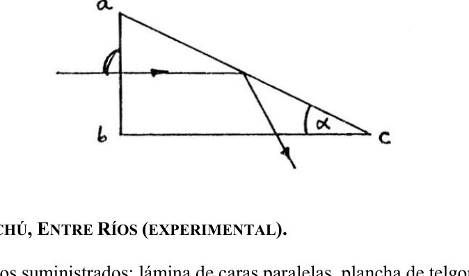
Topic: Geometric Optics Metodi: Snell’s Law, Ray Tracing Competenze: Physical Reasoning Objects: Prism Fonte: Testo (PDF) — p.2
116. Neuquen - Prisma immerso in acqua, riflessione totale
- Non ci si sente.
Un raggio di luce colpisce normalmente la faccia ab di un prisma di cristallo di indice di refraczione , come indicato nella figura. Considerando che il prisma è immerso in acqua (). Qual è il massimo valore dell’angolo per che il raggio sia completamente riflesso sulla faccia ac? giustifica la risposta. (figura, prisma con vertici a, b, c e angolo )
Topic: Geometric Optics Metodi: Snell’s Law, Ray Tracing Competenze: Physical Reasoning Objects: Prism Fonte: Testo (PDF) — p.2
116. Neuken - Prism submerged in water, total reflection
-
- I’m not going to.
A beam of light normally hits the ab face of a lens lens lens with a refractive index , as shown in the figure. Whereas the prism is submerged in water (). What is the maximum value of the angle for the beam to be fully reflected on the face ac? Justify the answer. (Figure, prism with vertices a, b, c and angle )
Topic: Geometric Optics Metodi: Snell’s Law, Ray Tracing Competenze: Physical Reasoning Objects: Prism Fonte: Testo (PDF) — p.2
117. Gualeguaychu, Entre Rios (experimental) - Lamina de caras paralelas
- Gualeguaychu, Entre Rios (experimental).
Con los elementos suministrados: lamina de caras paralelas, plancha de telgopor, hoja de papel y alfileres. Trace la marcha de los rayos mostrando el desplazamiento del rayo y midiendo dicho desplazamiento, cuando . Cuanto vale (emergente?)?
Topic: Geometric Optics Metodi: Snell’s Law, Ray Tracing, Experimental Data Analysis Competenze: Physical Reasoning, Experimental Data Analysis Objects: — Fonte: Testo (PDF) — p.2
117. Gualeguaychu, Entre Rios (esperimento) - Lamina di facce parallele
- Gualeguaychu, Entre Rios (esperimento).
Con i materiali forniti: lamina a facce parallele, scheda di telgopor, foglio di carta e stivali. Traccia la marcia dei raggi mostrando il movimento del raggio e misurando tale spostamento, quando . Quanto vale (emergente?)?
Topic: Geometric Optics Metodi: Snell’s Law, Ray Tracing, Experimental Data Analysis Competenze: Physical Reasoning, Experimental Data Analysis Objects: — Fonte: Testo (PDF) — p.2
117. Gualeguaychu, Entre Rios (experimental) - Laminated parallel faces
- Gualeguaychu, between Rios (experimental).
With the supplied elements: parallel-faced sheet, telgopor sheet, sheet of paper and pins. It traces the path of the rays by showing the beam’s displacement and measuring that displacement when . How much is (emerging?)?
Topic: Geometric Optics Metodi: Snell’s Law, Ray Tracing, Experimental Data Analysis Competenze: Physical Reasoning, Experimental Data Analysis Objects: — Fonte: Testo (PDF) — p.2
118. Parana, Entre Rios - Espejo esferico convexo con mosca
- Parana, Entre Rios.
Un espejo esferico, convexo, cuyo radio de curvatura es de 40 cm, se usa para concentrar luz del sol en su foco. Cuando se arma el dispositivo, accidentalmente una mosca de 0.4 cm se posa sobre el eje del espejo y a 30 cm del vertice. Encontrar la posicion, tamano, orientacion y naturaleza de la imagen.
- La mosca camina a lo largo del eje acercandose al espejo. Indicar los cambios que sufre su imagen.
- De persistir en su caminata. corre el riesgo de ser victima de un ataque termonuclear extraterrestre? Explique.
Topic: Geometric Optics Metodi: Thin Lens & Mirror Equation, Ray Tracing Competenze: Physical Reasoning Objects: Mirror Fonte: Testo (PDF) — p.2
118. Parana, Tra i Fiumi - Specchio sferica convexa con mosca
- Parana, tra i fiumi.
Uno specchio convexo, con un raggio di curvatura di 40 cm, è usato per concentrare la luce del sole nel suo foco. Quando il dispositivo viene armato, accidentalmente una mosca di 0,4 cm si posa sull’asse dello specchio e a 30 cm dalla verticale. Trovare la posizione, il taglio, l’orientamento e la natura dell’immagine.
- La mosca cammina lungo l’asse avvicinandosi allo specchio. Indicare i cambiamenti che la propria immagine subisce.
- Di persistere nel suo cammino. rischia di essere vittima di un attacco termonucleare extraterrestre? Spiegami.
Topic: Geometric Optics Metodi: Thin Lens & Mirror Equation, Ray Tracing Competenze: Physical Reasoning Objects: Mirror Fonte: Testo (PDF) — p.2
118. Parana, Between Rivers - Convex spherical mirror with fly
- Parana, between Rios.
A convex spherical mirror, with a radius of curvature of 40 cm, is used to concentrate sunlight in its focus. When the device is armed, an accidentally 0.4 cm fly is placed on the mirror axis and 30 cm from the top. Find the position, size, orientation and nature of the image.
- The fly walks along the axis, approaching the mirror. Indicate the changes to your image.
- To persist in his walk. Are you at risk of being the victim of an alien thermonuclear attack? - Explain that.
Topic: Geometric Optics Metodi: Thin Lens & Mirror Equation, Ray Tracing Competenze: Physical Reasoning Objects: Mirror Fonte: Testo (PDF) — p.2
119. Rosario, Santa Fe - Haz monocromatico en cajas
- Rosario, Santa Fe.
Un haz paralelo de luz monocromatica entra en cada una de las cajas mostradas por la figura, por la izquierda. (figura) La flecha simple y la doble sobre el haz que emerge, muestran los bordes correspondientes del haz que entra. a) Indique lo que puede haber en cada caja, para producir los efectos indicados. Especifique con la mayor precision posible no solo el o los elementos que los producen sino tambien su ubicacion. Si es posible, estime valores (medidas, parametros fisicos que los caracterizan, etc.). b) Para cada caso, justifique que su eleccion es correcta, siguiendo la marcha del haz de luz dentro de la caja y haciendo todos los calculos que considere necesarios.
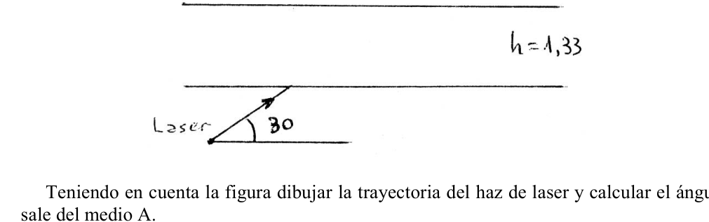
Topic: Geometric Optics Metodi: Ray Tracing, Thin Lens & Mirror Equation, Snell’s Law Competenze: Physical Reasoning Objects: Lens, Mirror, Prism Fonte: Testo (PDF) — p.2
119. Rosario, Santa Fe - Fai monocromatico in scatole
- Rosario, Santa Fe.
Un fascio parallelo di luce monocromatica entra in ciascuna delle scatole mostrate dalla figura, a sinistra. (Figura) La freccia semplice e la freccia doppia sul fascio che emerge mostrano i corrispondenti bordi del fascio che entra. a) Indicare ciò che può essere contenuto in ciascuna scatola per produrre gli effetti indicati. Especifica con la massima precisione possibile non solo gli elementi che li producono ma anche la loro posizione. Se possibile, stima i valori (misure, parametri fisici che li caratterizzano, ecc.). b) Per ogni caso, giustifica che la sua scelta è corretta, seguendo il movimento del fascio di luce all’interno della scatola e facendo tutti i calcoli che ritiene necessari.
Topic: Geometric Optics Metodi: Ray Tracing, Thin Lens & Mirror Equation, Snell’s Law Competenze: Physical Reasoning Objects: Lens, Mirror, Prism Fonte: Testo (PDF) — p.2
**119. Rosario, Santa Fe - Make a monochrome in boxes
- Rosario, Santa Fe.
A parallel monochrome beam of light enters each of the boxes shown by the figure, on the left. (Figure) The simple arrow and the double arrow over the beam that emerges, show the corresponding edges of the beam that enters. (a) Indicate what may be in each box to produce the indicated effects. Specify with the greatest possible accuracy not only the elements that produce them but also their location. If possible, estimate values (measures, physical parameters that characterize them, etc.). (b) In each case, justify that your choice is correct by following the path of the beam of light inside the box and by making any calculations you deem necessary.
Topic: Geometric Optics Metodi: Ray Tracing, Thin Lens & Mirror Equation, Snell’s Law Competenze: Physical Reasoning Objects: Lens, Mirror, Prism Fonte: Testo (PDF) — p.2
120. San Juan - Espejo plano longitud minima
- San Juan.
Que longitud debe tener como minimo un espejo plano en posicion vertical para que un hombre de 1.80 m se vea completo en el?
Topic: Geometric Optics Metodi: Ray Tracing Competenze: Physical Reasoning Objects: Mirror Fonte: Testo (PDF) — p.2
**120. San Giovanni - Specchio piatto di minima lunghezza **
- San Giovanni.
Qual è la lunghezza minima di uno specchio piatto in posizione verticale per un uomo di 1,80 m di altezza?
Topic: Geometric Optics Metodi: Ray Tracing Competenze: Physical Reasoning Objects: Mirror Fonte: Testo (PDF) — p.2
**120. The following table shows the following:
- It’s St. John.
What length must a flat mirror in vertical position have at least for a six-foot-tall man to look complete in the mirror?
Topic: Geometric Optics Metodi: Ray Tracing Competenze: Physical Reasoning Objects: Mirror Fonte: Testo (PDF) — p.2
121. Navarro, Buenos Aires - Espejo concavo imagen 16 veces
- Navarro, Buenos Aires.
De un objeto luminoso rectilineo y vertical se desea obtener una imagen real 16 veces mas grande y proyectada sobre una pantalla vertical situada a 5.10 m del objeto. Determinar la posicion, orientacion y distancia focal del espejo concavo que permite obtener esa imagen.
Topic: Geometric Optics Metodi: Thin Lens & Mirror Equation, Ray Tracing Competenze: Physical Reasoning Objects: Mirror, Screen Fonte: Testo (PDF) — p.2
121. Navarro, Buenos Aires - Specchio concavo immagine 16 volte
- Navarro, Buenos Aires.
Da un oggetto luminoso rettilineo e verticale si desidera ottenere un’immagine reale 16 volte più grande e proiettata su uno schermo verticale situato a 5,10 m dall’oggetto. Determinare la posizione, l’orientamento e la distanza focale dello specchio concave che permette di ottenere tale immagine.
Topic: Geometric Optics Metodi: Thin Lens & Mirror Equation, Ray Tracing Competenze: Physical Reasoning Objects: Mirror, Screen Fonte: Testo (PDF) — p.2
**121. Navarro, Buenos Aires - Mirror with a concave image 16 times
- I’m from Navarro, Buenos Aires.
A straight-line, vertical illuminated object is intended to have a real image 16 times larger and projected onto a vertical screen located 5.10 m from the object. Determine the position, orientation and focal length of the concave mirror that allows for that image.
Topic: Geometric Optics Metodi: Thin Lens & Mirror Equation, Ray Tracing Competenze: Physical Reasoning Objects: Mirror, Screen Fonte: Testo (PDF) — p.2
122. Salta - Laser refraccion entre medios
- Salta.
Teniendo en cuenta la figura dibujar la trayectoria del haz de laser y calcular el angulo con que sale del medio A. (figura, laser incidiendo a , medio con )
Topic: Geometric Optics Metodi: Snell’s Law, Ray Tracing Competenze: Physical Reasoning Objects: — Fonte: Testo (PDF) — p.2
122. Salto - Rifrazione laser tra media
- Salta. Salta.
Considerando la figura, disegnare il percorso del fascio laser e calcolare l’angolo con cui esce dal mezzo A. (figura, laser incidere su , medio con )
Topic: Geometric Optics Metodi: Snell’s Law, Ray Tracing Competenze: Physical Reasoning Objects: — Fonte: Testo (PDF) — p.2
122. Jump - Laser refraction between media
- Jump in.
Taking into account the figure draw the trajectory of the laser beam and calculate the angle with which it exits the medium A. (Figure, laser inciding on , medium with )
Topic: Geometric Optics Metodi: Snell’s Law, Ray Tracing Competenze: Physical Reasoning Objects: — Fonte: Testo (PDF) — p.2
123. Parana, Entre Rios (experimental) - Ley de reflexion especular
- Parana, Entre Rios (experimental).
Comprobar experimentalmente la ley de reflexion especular: “El angulo de incidencia es igual al angulo de reflexion”.
Topic: Geometric Optics Metodi: Ray Tracing, Experimental Data Analysis Competenze: Physical Reasoning, Experimental Data Analysis Objects: Mirror Fonte: Testo (PDF) — p.2
123. Parana, Tra i Fiumi (esperimento) - Legge della riflessione speculare
- Parana, Entre Rios (esperimento).
Provare sperimentalmente la legge della riflessione speculare: “L’angolo di incidenza è uguale all’angolo di riflessione”.
Topic: Geometric Optics Metodi: Ray Tracing, Experimental Data Analysis Competenze: Physical Reasoning, Experimental Data Analysis Objects: Mirror Fonte: Testo (PDF) — p.2
**123. Parana, Between Rivers (experimental) - Specular reflection law
- Parana, Entre Rios (experimental) is the first of its kind.
Experimentally test the law of speculative reflection: “The angle of incidence is equal to the angle of reflection”.
Topic: Geometric Optics Metodi: Ray Tracing, Experimental Data Analysis Competenze: Physical Reasoning, Experimental Data Analysis Objects: Mirror Fonte: Testo (PDF) — p.2
124. San Juan (experimental) - Lentes convergente y divergente
- San Juan (experimental).
Dadas dos lentes, una convergente de distancia focal desconocida y una divergente de distancia focal conocida, determinar cual de ellas tiene mayor potencia absoluta. Se dispone de: un foco luminoso, una pantalla y una regla graduada.
Topic: Geometric Optics Metodi: Thin Lens & Mirror Equation, Experimental Data Analysis Competenze: Physical Reasoning, Experimental Data Analysis Objects: Lens, Screen Fonte: Testo (PDF) — p.2
124. San Giovanni (esperimento) - Lenti convergenti e divergenti
- San Giovanni (esperimento).
Dati due obiettivi, una convergente di distanza focale sconosciuta e una divergente di distanza focale conosciuta, determinare quale di essi abbia la maggiore potenza assoluta. Dispone di: un foco luminoso, uno schermo e una regola graduata.
Topic: Geometric Optics Metodi: Thin Lens & Mirror Equation, Experimental Data Analysis Competenze: Physical Reasoning, Experimental Data Analysis Objects: Lens, Screen Fonte: Testo (PDF) — p.2
**124. The following table shows the results of the study:
- San Juan (experimental)
Given two lenses, an unknown focal length convergent and a known focal length divergent, determine which of them has the greatest absolute power. It has a lighted focus, a screen and a graduated rule.
Topic: Geometric Optics Metodi: Thin Lens & Mirror Equation, Experimental Data Analysis Competenze: Physical Reasoning, Experimental Data Analysis Objects: Lens, Screen Fonte: Testo (PDF) — p.2
125. Capital Federal (experimental) - Indice de refraccion del acrilico
- Capital Federal (experimental).
Determinacion del indice de refraccion del acrilico. Materiales a utilizar: 1- Prisma de acrilico 2- Alfileres 3- Tabla base 4- Regla milimetrada 5- Transportador
Topic: Geometric Optics Metodi: Snell’s Law, Experimental Data Analysis, Error Propagation Competenze: Physical Reasoning, Experimental Data Analysis Objects: Prism Fonte: Testo (PDF) — p.2
125. Capitale federale (esperimento) - Indice di refrazione dell’acrilico
- Capitale federale (esperimento).
Determinazione dell’indice di refraczione dell’acrilico. Materiali da utilizzare: 1- Prisma acrilico 2- Fabbricazioni 3- Tabella di base 4- Regola di millimetro 5- Trasportatore
Topic: Geometric Optics Metodi: Snell’s Law, Experimental Data Analysis, Error Propagation Competenze: Physical Reasoning, Experimental Data Analysis Objects: Prism Fonte: Testo (PDF) — p.2
125. Federal capital (experimental) - refractive index of acrylic
- Federal capital (experimental).
Determination of the refractive index of acrylic. Materials to be used: 1- Acrylic prism 2- Glue-shaped 3- Baseline 4- Millimeter rule 5 - Carrier
Topic: Geometric Optics Metodi: Snell’s Law, Experimental Data Analysis, Error Propagation Competenze: Physical Reasoning, Experimental Data Analysis Objects: Prism Fonte: Testo (PDF) — p.2
126. Capital Federal - Efecto Doppler con barcos
- Capital Federal.
La sirena de 2 barcos A y B son ambas de frecuencia = 200 Hz y suenan simultaneamente. La velocidad del sonido en el aire es de 332 m/seg. Se supone que el barco A esta parado y que el B se mueve a lo largo de la linea que los une. El capitan del barco A percibe una nota de 204 Hz procedente del barco B. Determinar si B se esta aproximando o alejando de A, y calcular la velocidad de B con respecto a A.
Topic: Oscillations & Waves Metodi: Wave Equation Competenze: Physical Reasoning Objects: — Fonte: Testo (PDF) — p.2
126. Capitale federale - Effetto Doppler con navi
- Capitale federale.
La sirena di 2 navi A e B sono entrambe di frequenza = 200 Hz e suonano contemporaneamente. La velocità del suono in aria è di 332 m/sec. La nave A è destinata a fermarsi e la B a muoversi lungo la linea che li unisce. Il capitano della nave A riceve una nota di 204 Hz proveniente dalla nave B. Determinare se B si avvicina o si allontana da A e calcolare la velocità di B rispetto a A.
Topic: Oscillations & Waves Metodi: Wave Equation Competenze: Physical Reasoning Objects: — Fonte: Testo (PDF) — p.2
126. Federal Capital - Doppler effect with ships
- Federal capital.
The siren of 2 ships A and B are both frequency = 200 Hz and sound simultaneously. The speed of sound in the air is 332 m/s. Boat A is supposed to be stationary and B is supposed to be moving along the line that connects them. The captain of ship A receives a 204 Hz note from ship B. Determine whether B is approaching or moving away from A, and calculate the velocity of B with respect to A.
Topic: Oscillations & Waves Metodi: Wave Equation Competenze: Physical Reasoning Objects: — Fonte: Testo (PDF) — p.2